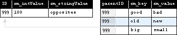

BigWorld Technology 2.0. Released 2010.
Copyright © 1999-2010 BigWorld Pty Ltd. All rights reserved.
This document is proprietary commercial in confidence and access is restricted to authorised users. This document is protected by copyright laws of Australia, other countries and international treaties. Unauthorised use, reproduction or distribution of this document, or any portion of this document, may result in the imposition of civil and criminal penalties as provided by law.
Table of Contents
- I. Server Scripting Guide
- 1. Overview
- 2. Physical Entity Structure for Scripting
- 3. Physical User Data Object Structure for Scripting
- 4. Properties
- 5. Methods
- 5.1. Basic Method Specification
- 5.2. Intra-Entity Communication
- 5.3. Sending Auxiliary Data to the Client Via Proxy
- 5.4. Exposed Methods ‐ Client-to-Server Communication
- 5.5. Client callbacks on property changes
- 5.6. LOD on Methods
- 5.7. Inter-Entity Communication
- 5.8. Mailboxes
- 5.9. Method Execution Context
- 6. Inheritance in BigWorld
- 7. Entity Instantiation and Destruction
- 8. The Database Layer
- 9. Character Sets and Encodings
- 10. Profiling
- 11. Proxies and Players
- 12. Entities and the Universe
- 13. XML Data File Access
- 14. External Services
- 15. Fault Tolerance
- 16. Disaster Recovery
- 17. Controlled Startup and Shutdown
- 18. Transactions and Handling Fault Tolerance and Disaster Recovery
- 19. Implementing Common Systems
- 20. User Authentication and Billing System Integration
- 21. Security
- 22. Debugging
- 22.1. General Debugging
- 22.2. Performance Profiling
- 22.3. Common Mistakes
- 22.3.1. Definition Files Inconsistent Between the Server and Client
- 22.3.2. Implementation (.py) Does Not Match Definition (.def)
- 22.3.3. Accessing Other Entities' Properties and Methods Not Declared in the Definition File
- 22.3.4. Trying to Update the Properties of a Ghost Entity
- 22.3.5. Database backup and fault tolerance doesn't work for entities lacking a Base part
- 22.4. Fixed Cell Boundaries
- 22.5. Message Reliability And Ordering
- 23. Shared Development Environments
- II. Server C++ Programming Guide
- III. Extending WebConsole
Table of Contents
- 1. Overview
- 2. Physical Entity Structure for Scripting
- 3. Physical User Data Object Structure for Scripting
- 4. Properties
- 5. Methods
- 5.1. Basic Method Specification
- 5.2. Intra-Entity Communication
- 5.3. Sending Auxiliary Data to the Client Via Proxy
- 5.4. Exposed Methods ‐ Client-to-Server Communication
- 5.5. Client callbacks on property changes
- 5.6. LOD on Methods
- 5.7. Inter-Entity Communication
- 5.8. Mailboxes
- 5.9. Method Execution Context
- 6. Inheritance in BigWorld
- 7. Entity Instantiation and Destruction
- 8. The Database Layer
- 9. Character Sets and Encodings
- 10. Profiling
- 11. Proxies and Players
- 12. Entities and the Universe
- 13. XML Data File Access
- 14. External Services
- 15. Fault Tolerance
- 16. Disaster Recovery
- 17. Controlled Startup and Shutdown
- 18. Transactions and Handling Fault Tolerance and Disaster Recovery
- 19. Implementing Common Systems
- 20. User Authentication and Billing System Integration
- 21. Security
- 22. Debugging
- 22.1. General Debugging
- 22.2. Performance Profiling
- 22.3. Common Mistakes
- 22.3.1. Definition Files Inconsistent Between the Server and Client
- 22.3.2. Implementation (.py) Does Not Match Definition (.def)
- 22.3.3. Accessing Other Entities' Properties and Methods Not Declared in the Definition File
- 22.3.4. Trying to Update the Properties of a Ghost Entity
- 22.3.5. Database backup and fault tolerance doesn't work for entities lacking a Base part
- 22.4. Fixed Cell Boundaries
- 22.5. Message Reliability And Ordering
- 23. Shared Development Environments
This part of the document contains technical information for creating entities and user data objects for the BigWorld Server. It is part of a larger set of documentation describing the whole BigWorld system.
The intended audience is technical-typically MMOG developers and designers.
For API-level information, please refer to the API reference documentation.
Note
Garbage collection is disabled in BigWorld's Python integration, because garbage collection is an expensive operation that can occur at any time, blocking the main thread in the server applications.
Note
For details on BigWorld terminology, see the document Glossary of Terms.
Entities are the objects that make up the game world. Using entities, you can create players, NPCs, loot, chat rooms, and many other interactive elements in your games.
Each entity type is implemented as a collection of Python scripts, and
an XML-based definition file that ties the scripts together. These scripts
are located in the resource tree under the folder scripts (i.e., <res>/scripts
<res> is the virtual
tree defined ~/.bwmachined.conf).
The list below summarises the important files and directories for
entities in <res>:
<res>‐ Resource tree defined in~/.bwmachined.conf.scripts ‐ Folder containing all entity files.
db.xml ‐ Persistent state for the XML database system.
entities.xml‐ Lists all entities to load into the client or the server at start-up time.base ‐ Folder contains Python scripts for entities with a base component.
cell ‐ Folder contains Python scripts for entities with a cell component.
client ‐ Folder contains Python scripts for entities with a client component.
common ‐ Folder listed in the Python search path for all components. Used for common game code.
lib ‐ Folder listed in the Python search path for all components. Used for common game code.
entity_defs ‐ Contains an XML
.deffile for each entity listed in file<res>/scripts/entities.xmlalias.xml‐ Data types aliases used in the project.<entity>.def<res>/scripts/entities.xml.interfaces ‐ Entity interface definition files
server ‐ System-wide settings.
Default values for the system.
The file
<res>/scripts/entities.xml
Each tag in this file represents an entity type, and must have a
corresponding definition file in the directory <res>/scripts/entity_defs<res>/scripts/base<res>/scripts/cell<res>/scripts/client
The order in which the entity types are declared in this file corresponds to the final entity ID associated with each entity type.
In its simplest form, the entities file has one tag listed for each entity to be loaded.
To define an entity called NewEntityType,
simply add a line like the one below:
<root> ... <NewEntityType/> </root>
<res>/scripts/entities.xml
The entity definition file
<res>/scripts/entity_defs/<entity>.def
The following diagram shows the conceptual parts of a BigWorld entity:

Conceptual parts of an entity
Each entity type has a corresponding definition file, named after
the entity's type name followed by the extension '.def'. For example, a
Seat entity type would have a file called
Seat.def.
It is useful then, to have a 'minimal' definition file to aid in quickly defining a new entity, as well as to assist in explaining what the document's section is trying to accomplish.
The following file is a minimal entity definition file:
<root> <Parent> optional parent entity </Parent><Implements>
<!-- interface references --> </Implements> <ClientName> optional client type </ClientName>
<Volatile>
<!-- volatile definitions --> </Volatile> <Properties>
<!-- properties --> </Properties> <ClientMethods>
<!-- declaration --> </ClientMethods> <CellMethods>
<!-- declaration --> </CellMethods> <BaseMethods>
<!-- declaration --> </BaseMethods> <LoDLevels>
<!-- levels of detail --> </LODLevels> <NetworkCompression>
<!-- internal and external network compression --> </NetworkCompression> </root>
<res>/scripts/entity_defs/<entity>.def
| | For details, see Entity Parents. |
| | For details, see Entity Interfaces. |
| | For details, see Client Entity Reuse. |
| | For details, see Volatile Properties. |
| | For details, see Properties. |
| | For details, see Methods. |
| | For details, see Methods. |
| | For details, see Methods. |
| | For details, see LOD (Level of Detail) on Properties. |
| | For details, see Server Operations Guide's chapter General Configuration Options for the networkCompression options. |
By the end of this chapter, we should be able to replace all placeholders (denoted by italics) in the example file above with actual code.
BigWorld Technology divides processing of entities in a game world into three different execution contexts:
| Entity type | Script file location | Description |
|---|---|---|
| Cell | | Takes care of the portions of an entity that affect the space around it. Processing takes place on the server cluster. |
| Base | | Takes care of the portions of an entity that do not affect the space around it (as well as possibly acting as a proxy for a player). Processing takes place on the server cluster. |
| Client | | Takes care of the portions of an entity that require heavy awareness of the surrounding environment. |
Entity Types
It is possible for some entity instances to not have one of these three parts. Furthermore, some entity types may not support ever having one of these parts. For each entity type, there is a script file for each of CellApp, BaseApp, and Client, if that type supports that execution context.
These script files are named after the entity type, followed by the
extension '.py'. This file must
contain a class with the name of the entity type.
For example, if you have an entity type Seat
that can have cell, base and client execution contexts, there would be
three script files, each with the implementation of the class:
<res>/scripts/cell/Seat.py<res>/scripts/base/Seat.py<res>/scripts/client/Seat.py
The entity's base class defined in the script file is determined by the execution context that the file represents, as described below:
| Script file execution context | Entity's base class |
|---|---|
| Cell | BigWorld.Entity |
| Base | BigWorld.Base
or
BigWorld.Proxy |
| Client | BigWorld.Entity |
Entity's base class per execution context
For more details about the difference between the
Base and Proxy classes, see
Proxies and Players.
The start of the script for a Seat entity
could be implemented as below:
Cell script file ‐
<res>/scripts/cell/Seat.pyimport BigWorld class Seat( BigWorld.Entity ): def __init__( self ): BigWorld.Entity.__init__( self )
Base script file ‐
<res>/scripts/base/Seat.pyimport BigWorld class Seat( BigWorld.Base ): def __init__( self ): BigWorld.Base.__init__( self )
Client script file ‐
<res>/scripts/client/Seat.pyimport BigWorld class Seat( BigWorld.Entity ): def __init__( self ): BigWorld.Entity.__init__( self )
Table of Contents
User data objects are a way of embedding user defined data in Chunk
files. Each user data object type is implemented as a collection of Python
scripts, and an XML-based definition file that ties the scripts together.
These scripts are located in the resource tree under the folder
scripts (i.e.,
<res>/scripts<res> ~/.bwmachined.conf).
User data objects differ from entities in that they are immutable (i.e. their properties don't change), and that they are not propagated to other cells or clients. This makes them a lot lighter than entities.
A key feature of user data objects is their linkability. Entities are able to link to user data objects, and user data objects are able to link to other user data objects. This is achieved by including a UDO_REF property in the definition file for the user data object or entity that wishes to link to another user data object.
The list below summarises the important files and directories for user
data objects in
<res>
<res>~/.bwmachined.conf.scripts— Folder containing all entity files.user_data_objects.xml— Lists all user data objects to load into the client or the server at start-up time.base— Folder contains Python scripts for user data objects with a base component.cell— Folder contains Python scripts for user data objects with a cell component.client— Folder contains Python scripts for user data objects with a client component.common— Folder listed in the Python search path for all components. Used for common game code.lib— Folder listed in the Python search path for all components. Used for common game code.
user_data_object_defs— Contains the user data object definition files.<user_data_object.def><res>/scripts/user_data_objects.xmlinterfaces— User data object interface definition files
The file
<res>/scripts/user_data_objects.xml
The file structure matches that of the
<res>/entities/entities.xml
The user data object definition file
<res>/scripts/user_data_object_defs/<user_data_object>.def
The following file is a minimal entity definition file:
<root> <Domain> the execution context for this user </Domain>
<res>/scripts/user_data_object_defs/<user_data_object>.def
| | The domain for a user data object can be either CLIENT, CELL or BASE. |
| | For details, see Entity Parents. |
| | For details, see Entity Interfaces. |
| | For details, see Properties. |
BigWorld Technology divides processing of entities in a game world into three different execution contexts, depending on its Domain:
User Data Object Domain: Cell — Script File Location:
<res>/scripts/cellUser data objects to be used by entities in the cell.
User Data Object Domain: Base — Script File Location:
<res>/scripts/baseUser data objects to be used by entities in the base.
User Data Object Domain: Client — Script File Location:
<res>/scripts/clientUser data objects to be used by entities in the client.
Most implementations of user data objects will only live either in
the cell or in the client. For an example of a user data object that lives
in the cell, see the PatrolNode user data object
scripts and definition file in the
<res>/scripts
Table of Contents
Properties describe what the state of an entity is. Like traditional object systems, a BigWorld property has a type and a name. Unlike traditional object systems, a property also has distribution properties that affect where and how frequently it is distributed around the system.
Properties are declared in the entity's definition file (named
<res>/scripts/entity_defs/<entity>.defProperties.
The grammar for property definition is displayed below:
<root>
...
<Properties>
<propertyName>
<!-- type of this property -->
<Type> TYPE_NAME </Type>
<!-- Method of distribution -->
<Flags> DISTRIBUTION_FLAGS </Flags>
<!-- Default value (optional) -->
<Default> DEFAULT_VALUE </Default>
<!-- Is the property editable? (true/false) (optional) -->
<Editable> [true|false] </Editable>
<!-- Level of detail for this property (optional) -->
<DetailLevel> LOD </DetailLevel>
<!-- Is the property persistent? -->
<Persistent> [true|false] </Persistent>
</propertyName>
</Properties>
...
</root><res>/scripts/entity_defs/<entity>.def
| | For details, see Property Types. |
| | For details, see Data Distribution. |
| | For details, see Default Values. |
| | For details, see LOD (Level of Detail) on Properties. |
| | For details, see The Database Layer. |
BigWorld needs to efficiently transmit data over a network between its various components. For this purpose, BigWorld definition file describes the type of each property of an entity (despite the fact that BigWorld is scripted using Python — an untyped language).
Because bandwidth conservation is important in implementing an MMOG, property types should be selected such that they are the smallest type (in terms of number of bits) that can represent the data.
The following list summarises the primitive types available for BigWorld properties:
BLOB — Size (bytes):
N+kBinary data. Similar to a string, but can contain NULL characters.
Stored in base-64 encoding when in XML, e.g., in the XML database.
Nis the number of bytes in the blob, andk=4.FLOAT32 — Size (bytes): 4
IEEE 32-bit floating-point number.
FLOAT64 — Size (bytes): 8
IEEE 64-bit floating-point number.
INT8 — Size (bytes): 1 — Range: From: -128 To: 127
Signed 8-bit integer.
INT16 — Size (bytes): 2 — Range: From: -32,768 To: 32,767
Signed 16-bit integer.
INT32 — Size (bytes): 4 — Range: From: -2,147,483,648 To: 2,147,483,647
Signed 32-bit integer.
INT64 — Size (bytes): 8 — Range: From: -9,223,372,036,854,775,808 To: 9,223,372,036,854,775,807
Signed 64-bit integer.
MAILBOX — Size (bytes): 12
A BigWorld mailbox.
Passing an entity to a MAILBOX argument automatically converts it to MAILBOX.
For details, see Mailboxes.
PYTHON — Size(bytes): Size of pickled string, as per STRING
Uses the Python pickler to pack any Python type into a string, and transmits the result.
This should not be used between client and server, as it is insecure and inefficient.
It is recommended to use a user data type for production code. For more details, see Implementing Custom Property Data Types.
STRING — Size (bytes):
N+kCharacter string (non-Unicode).
Nis the number of characters in the string, andk=4.UINT8 — Size(bytes): 1 - Range: From: 0 To: 255
Unsigned 8-bit integer.
UINT16 — Size(bytes): 2 — Range: From: 0 To: 65,535
Unsigned 16-bit integer.
UINT32 — Size(bytes): 4 — Range: From: 0 To: 4,294,967,295
Unsigned 32-bit integer.
This type may use Python's long type instead of int, and so might be less efficient than INT32.
UINT64 — Size(bytes): 8 — Range: From: 0 To: 18,446,744,073,709,551,615
Unsigned 64-bit integer.
UNICODE_STRING — Size (bytes): Up to 4
N+kCharacter string (Unicode).
Nis the number of characters in the string, andk=4. Streamed as UTF-8.VECTOR2 — Size(bytes): 8
Two-dimensional vector of 32-bit floats. Represented in Python as a tuple of two numbers (or Math.Vector2).
VECTOR3 — Size(bytes): 12
Three-dimensional vector of 32-bit floats. Represented in Python as a tuple of three numbers (or Math.Vector3).
VECTOR4 — Size(bytes): 16
Four-dimensional vector of 32-bit floats. Represented in Python as a tuple of four numbers (or Math.Vector4).
The following sections describe the composite types available in BigWorld.
BigWorld also has ARRAY and TUPLE types, which can create an array of values of any of the BigWorld primitive types.
Properties of ARRAY type have a byte size calculated by the formula below:
N * t + k
The components of the formula are described below:
N — Number of elements in the array.
t — Size of the type contained in the array.
k — Constant.
The BigWorld TUPLE type is represented in script by the Python tuple type, while the BigWorld ARRAY type is represented in script by Python list type.
Tuples are specified as follows:
<Type> TUPLE <of> [TYPE_NAME|TYPE_ALIAS] </of> [<size> n </size>] </Type>
<res>/scripts/entity_defs/<entity>.def
Arrays are specified as follows:
<Type> ARRAY <of> [TYPE_NAME|TYPE_ALIAS] </of> [<size> n </size>] </Type>
<res>/scripts/entity_defs/<entity>.def
In case the size of an ARRAY or
TUPLE is specified, then it must have the
declared n elements. Adding or deleting elements
to fixed-sized ARRAY or
TUPLE is not allowed. If the default value is not
specified, then a fixed-sized ARRAY or
TUPLE will contain n default
values of the element type.
Arrays have a special method called
equals_seq() that can be used for performing
element-wise Boolean equality testing against any arbitrary Python
sequence (including Python lists and tuples). For example:
self.myList = [1,2,3] self.myList.equals_seq( [1,2,3] ) # should return True self.myList.equals_seq( (1,2,3) ) # should return True
Arrays efficiently propagate changes. This includes assigning to individual elements, appending, extending, removing, popping and slice assignment.
For example, each of the following are propagated efficiently.
self.myList = [1, 2, 3, 4, 5] self.myList[ 3 ] = 8 self.myList.append( 6 ) self.myList.extend( [7, 8] ) self.myList += [9, 10] self.myList.pop() self.myList.remove( 7 ) self.myList[ 2 : 5 ] = [11, 12] del self.myList[ 2 ] del self.myList[ 1 : 4 ]
Arrays can not only contain aliased data types, but may also be aliased themselves. For more details, see Alias of Data Types.
The FIXED_DICT data type allows you to define dictionary-like attributes with a fixed set of string keys. The keys and the types of the keyed values are predefined.
The declaration of a FIXED_DICT is illustrated below:
<Type> FIXED_DICT <Parent>ParentFixedDictTypeDeclaration</Parent> <Properties> <field> <Type>FieldTypeDeclaration</Type> </field> </Properties> <AllowNone> true|false </AllowNone>
FIXED_DICT data type declaration
This data type may be declared anywhere a type declaration may
appear, e.g., in
<res>/scripts/entity_defs/alias.xml<res>/scripts/entity_defs/<entity>.def
The code excerpt below shows the declaration of a FIXED_DICT attribute:
<root>
<TradeLog> FIXED_DICT
<Properties>
<dbIDA>
<Type> INT64 </Type>
</dbIDA>
<itemsTypesA>
<Type> ARRAY <of> ITEM </of> </Type>
</itemsTypesA>
<goldPiecesA>
<Type> GOLDPIECES </Type>
</goldPiecesA>
</Properties>
</TradeLog>
</root>fantasydemo/res/scripts/entity_defs/alias.xml
Instances of FIXED_DICT can be accessed and modified like a Python dictionary, with the following exceptions:
Keys cannot be added or deleted
The type of the value must match the declaration.
For example:
if entity.TradeLog[ "dbIDA" ] == 0: entity.TradeLog[ "dbIDA" ] = 100
Example of FIXED_DICT usage in script
Alternatively, it also supports the following:
if entity.TradeLog.dbIDA == 0: entity.TradeLog.dbIDA = 100
Example of FIXED_DICT usage as struct in script
Note
Using struct syntax can cause problems with name collisions with FIXED_DICT methods.
A FIXED_DICT instance can be set using a Python dictionary that has a superset of the keys required. Any unnecessary keys in the dictionary are ignored.
For example:
entity.TradeLog = { "dbIDA" : 100, "itemsTypesA" : [ 1, 2, 3 ],
"goldPiecesA" : 1000, "redundantKey" : 12345 }Example of FIXED_DICT instance being set using a Python dictionary
When setting a FIXED_DICT instance using a Python dictionary, the values of the Python dictionary are referenced by the FIXED_DICT instance.
Note
When setting a FIXED_DICT instance using a Python dictionary in the BaseApp, the Python dictionary replaces the FIXED_DICT instance. Thus, the entire Python dictionary is being referenced, not just its values.
As a result of this behaviour, there is the possibility of FIXED_DICT attribute having more keys than in its declaration.
This BaseApp behaviour may be changed in a future release of BigWorld so that it matches the rest of the system.
Changes to FIXED_DICT values are propagated
efficiently wherever a change to the whole property would be
propagated, i.e., to ghosts and to clients —
including ownClients.
The default value of a FIXED_DICT data type can be specified at the entity property level. For example:
<root>
<Properties> FIXED_DICT
<someProperty>
<Type> TradeLog </Type> <!-- From last example -->
<Default>
<dbIDA> 0 </dbIDA>
<itemsTypesA>
<item> 101 </item>
<item> 102 </item>
</itemsTypesA>
<goldPiecesA> 100 </goldPiecesA>
</Default>
</someProperty>
</Properties>
</root>Example of specifying default value of a FIXED_DICT data type in an entity definition file
If the <Default> section is not
specified, then the default value of a FIXED_DICT
data type will depend on the value of the
<allowNone> tag, as described below:
Table 4.1. Default values for a FIXED_DICT without a <Default> section.
| <AllowNone> | FIXED_DICT default value |
|---|---|
| True | Python None object. |
| False | Python dictionary with keys as specified in the type definition. Each keyed value will have a default value according to its type. For example, a keyed value of INT type will have a default value of 0. |
There are two ways to incorporate user-defined Python classes into BigWorld entities: wrapping a FIXED_DICT data type, or implementing a USER_TYPE.
The FIXED_DICT data type supports being wrapped by a user-defined Python type. When a FIXED_DICT is wrapped, BigWorld will instantiate the user-defined Python type in place of a FIXED_DICT instance. This enables the user to customise the behaviour of a FIXED_DICT data type.
The type system can also be arbitrarily extended with the USER_TYPE type. Unlike a wrapped FIXED_DICT type, the structure of a USER_TYPE type is completely opaque to BigWorld. As such, the implementation of a USER_TYPE type is more involved. The implementation of the type operations is performed by a Python object (such as an instance of a class) written by the user. The Python object serves as a factory and serialiser for instances of that type, and it can choose to use whatever Python representation of that type it sees fit — it can be as simple as an integer, or it can be an instance of a Python class.
For more details on custom user types, see Implementing Custom Property Data Types.
BigWorld also allows aliases of types to be created. Aliases are a
concept similar to a C++ typedef, and are listed in
the XML file
<res>/scripts/entity_defs/alias.xml
<root>
... other alias definitions ...
<ALIAS_NAME> TYPE_TO_ALIAS [<Default> Value </Default> ] </ALIAS_NAME>
</root><res>/scripts/entity_defs/alias.xml
| | For details, see Default Values. |
Some examples of useful aliases are described in the list below:
Table 4.2. Entity Types
| Alias | Maps to | Description |
|---|---|---|
| ANGLE | FLOAT32 | An angle measured in radians. |
| BOOL | INT8 | A Boolean type (encoded as zero=false, non-zero=true). Mapped to INT8, the smallest BigWorld type. |
| INFO | UINT16 | Element of information about a mission. |
| MISSION_STATS | ARRAY <of> INFO </of> | Array of mission information data elements (i.e., INFO type alias). Note that this is an aliased array, and the type of its elements is an aliased type. |
| OBJECT_ID | INT32 | Handle to another entity. The name makes clear the property contains a handle to an entity. |
| STATS_MATRIX | ARRAY <of> MISSION_STATS </of> | Matrix of mission information data elements (i.e., INFO type alias). Note that this is an aliased array, and the type of its elements is another aliased array. |
Using the syntax for alias definition to the aliases describe above, we have the following file:
<root> <!-- Aliased data types --> <OBJECT_ID> INT32 </OBJECT_ID> <BOOL> INT8 </BOOL> <ANGLE> FLOAT32 </ANGLE> <INFO> UINT16 </INFO> <!-- Aliased arrays ? <MISSION_STATS> ARRAY <of> INFO </of> </MISSION_STATS> <STATS_MATRIX> ARRAY <of> MISSION_STATS </of> </STATS_MATRIX> </root>
<res>/scripts/entity_defs/alias.xml
With aliases, one can also define custom Python data types, which
have their own streaming semantics on the network. We declare these
types in the file
<res>/scripts/entity_defs/alias.xml
<root>
<ALIAS_NAME>
USER_TYPE
<implementedBy> UserDataType.instance </implementedBy>
</ALIAS_NAME>
</root><res>/scripts/entity_defs/alias.xml
— Custom Python data type declaration syntax
For more details on this mechanism, see Implementing Custom Property Data Types.
When an entity is created, its properties are initialised to their
default values. Default values can be overridden at the property level (in
the entity definition file[2]) or at the type level (in
alias.xml[3]).
The default value for each type and the syntax for overriding it are described below:
ARRAY — Default: []
Example:
<Default>
<item> Health potion </item>
<item> Bear skin </item>
<item> Wooden shield </item>
</Default>BLOB — Default: ''
Example:
<Default> SGVsbG8gV29ybGQhB </Default>
<!-Hello World! -->FIXED_DICT
For details, see FIXED_DICT Data Type.
FLOAT32 — Default: 0.0
Example:
<Default> 1.234 </Default>
FLOAT64 — Default: 0.0
Example:
<Default> 1.23456789 </Default>
INT8, INT16, INT32, INT64 — Default: 0
Example:
<Default> 99 </Default>
MAILBOX — Default: None
Default value cannot be overridden.
PYTHON — Default: None
Example:
<Default> { "Strength": 90, "Agility": 77 } </Default>STRING — Default: ''
Example:
<Default> Hello World! </Default>TUPLE — Default: ()
Example: See ARRAY data type
UINT8, UINT16, UINT32, UINT64 — Default: 0
Example:
<Default> 99 </Default>
UNICODE_STRING — Default: u''
Example:
<Default> Hello World! (this is a UTF-8 string) </Default> Value must be specified without quotes, and must be encoded as UTF-8[4].
USER_TYPE — Default: Return value of the user-defined defaultValue() function.
Example:
<Default> <intVal> 100 </intVal> <strVal> opposites </stringVal> <dictVal> <value> <key> good </key> <value> bad </value> </value> </dictValue> </Default>VECTOR2 — Default: PyVector of 0.0 of the appropriate length.
Example:
<Default> 3.142 2.71 </Default>
VECTOR3 — Default: PyVector of 0.0 of the appropriate length.
Example:
<Default> 3.142 2.71 1.4 </Default>
VECTOR4 — Default: PyVector of 0.0 of the appropriate length.
Example:
<Default> 3.142 2.71 1.4 3.8 </Default>
Properties represent the state of an entity. Some states are only relevant to the cell, others only to the base, and yet others only to the client. Some states, however, are relevant to more than one of these.
Each property then has a distribution type that specifies to BigWorld which execution context (cell, base, or client) is responsible for updating the property, and where to propagate its value within the system.
Data distribution is set up by specifying the sub-section
<Flags> of the section
<Properties> in the file
<res>/scripts/entity_defs/<entity>.def
The bit flags available are defined in
bigworld/src/lib/entitydef/data_description.hpp, and
are described in the list below:
DATA_BASE
Required flags: N/A — Excluded flags: DATA_GHOSTED — Master value on: Base
Data will be updated on the base, and will not be available on the cell.
DATA_GHOSTED
Required flags: N/A — Excluded flags: DATA_BASE — Master value on: Cell
Data will be updated on the cell, and will be ghosted on other cells.
This means that it is safe to read the value of this property from another entity, because BigWorld safely makes it available even across cell boundaries.
DATA_OTHER_CLIENT
Required flags: DATA_GHOSTED — Excluded flags: N/A — Master value on: Cell
Data will be updated on the cell, and made available to clients who have this entity in their AoI.
This makes the property safe to read from the client for any entity, except for that client's player avatar entity. This flag is often combined with DATA_OWN_CLIENT to create a property that is distributed to all clients.
DATA_OWN_CLIENT
Required flags: N/A — Excluded flags: N/A — Master value on: Base, if DATA_BASE is set. Otherwise, on cell.
Data is propagated to client owning this entity.
This only makes sense with player entities.
The list below describes the valid combinations of the above bit flags:
ALL_CLIENTSA
Available to: Other cells, Cell, Own client, Other clients
Property is available to all entities on cell and client.
Corresponds to setting both OWN_CLIENT and OTHER_CLIENTS flags.
Examples include:
The name of a player.
The health status of a player or a creature.
BASE
Available to: Base
Property is only available on the base.
Examples include:
List of members of a chat room.
Items in a character's inventory.
BASE_AND_CLIENT
Available to: Base, Own client
Property is available on the base and on the owning client. Corresponds to setting both OWN_CLIENT and BASE flags.
Note
Properties of this type are only synchronised when the client entity is created. Neither the client nor the base is automatically updated when property changes. Methods must be used to propagate new value, which is simple, since only one player needs to receive it.
CELL_PRIVATE
Available to: Cell
Property is only available to its entity, and only on cell.
Examples include:
Properties of an NPCs 'thoughts' in AI algorithms.
Player properties relevant to game play, but dangerous to allow players to see (e.g., healing time after battle).
CELL_PUBLIC
Available to: Other cells, Cell
Property is available only on the cell, and is available to other entities.
Examples include:
The mana level of a player (which can be seen only by enemies, not by other players).
The call sign for grouping from enemy NPC.
CELL_PUBLIC_AND_OWN
Available to: Other cells, Cell, Own client
Property is available to other entities on the cell, and to this one on both the cell and the client.
Unlike OWN_CLIENT, this data is also ghosted, and therefore available to other entities on the cell.
EDITOR_ONLY
Available to: WorldEditor
This value may be useful when using
BigWorld.fetchEntitiesFromChunksfrom a BaseApp. It could be used to decide programmatically whether a particular entity should be loaded.For example, you may associate a level of difficulty with each entity, so entity will only be loaded if the mission's level of difficulty is high enough.
OTHER_CLIENTSA
Available to: Other cells, Cell, Other clients
Property is available from client to entities that are not this player's avatar. Also available on cell to other entities.
Examples include:
The state of dynamic world items (e.g., doors, loot containers, and buttons).
The type of a particle system effect.
The player who is currently sitting on a seat.
OWN_CLIENTA
Available to: Cell, Own client
Property is only available to this entity, on both the cell and the client.
Examples include:
The character class of a player.
Number of experience points for a player.
A — When properties with this distribution flag are updated by server, an implicit method is called on client. For details, see Client callbacks on property changes.
When choosing a distribution flag for a property, consider the points described below:
Which methods need the property?
You have to make the property available on an execution context (cell, base, or client) if that context has a method that manipulates the property.
Does this property need to be accessed by other entities?
This could include methods being called to access its value. If this is the case, we need to make the property ghosted.
When doing this, remember that the ghosted entities' properties may be a little 'lagged', i.e., they may not represent the exact state of an entity at a given time. Also, remember that other entities can only read the property; only the entity that owns the property may change it.
Is the client interested in this value directly?
Client/server bandwidth is scarce, so the number of properties on the client needs to be minimised.
Sometimes, a group of properties can be maintained on the cell and only a derived additional property needs to be sent to the client. For example, a client part would probably not need to know that a combination of six AI state variables are causing a guard to be angry; they would however need to know the derived value that the guard is brandishing an axe.
Could a player cheat by seeing this property?
If so, then care must be taken about sending it to the client.
There can only be one master value of any property.
The master value must reside on either the base or cell. Consequently, if the same property is available on both the base and the cell, the other holder of the property needs to have the value propagated to it via a method.
Data propagation occurs when the entity is first created. Subsequent modifications to properties will only be local to the component, except when the modification occurs in a CellApp, in which case the change will be automatically propagated to all interested parties. For example, CELL_PUBLIC properties are propagated to all other CellApps that have a ghost of the entity, OTHER_CLIENTS properties are propagated to all clients that have the entity in their AoI, and so on.
When changing the value of a property in a component other than a CellApp, the change can be manually propagated using remote method calls. For details, see Methods.
Changes to properties of PYTHON and custom user types are not automatically propagated, unless the property is reassigned.
This behaviour mainly affects composite Python types like dictionaries, arrays, and classes, because modifications to the object do not cause data propagation unless the property is reassigned to itself.
For example, if entity e has the property as illustrated below:
<pythonProp> <Type> PYTHON </Type> ... </pythonProp>
Assigning a new value to pythonProp will
cause data propagation:
e.pythonProp = { 'gold': 100 }However, modifying the value will not cause data propagation:
e.pythonProp[ 'gold' ] = 50 e.pythonProp[ 'arrows' ] = 200
Different parts of the entity will see different values for
pythonProp, unless data propagation is manually
triggered by reassigning the property back to itself:
e.pythonProp = e.pythonProp
Custom data types are useful for the implementation of data structures with complex behaviour that is shared between different components, or that must be attached to cell entities (in which case they must be able to be transferred from one cell to another).
By default, the FIXED_DICT data type behaves like a Python dictionary. This behaviour can be changed by replacing the dictionary-like FIXED_DICT type with another Python type (referred to as a wrapper type in this document).
To do so, specify a type converter object in the
<implementedBy> section in the
FIXED_DICT type declaration. For example:
<Type> FIXED_DICT <implementedBy> CustomTypeConverterInstance </implementedBy> <Properties> ... </Properties> ... </Type>
Declaration of a Wrapped FIXED_DICT Data Type
CustomTypeConverterInstance must be a
Python object that converts between FIXED_DICT
instances and wrapper instances.
It must implement the following methods:
Table 4.3. Methods that should be implemented by wrapper type.
| Method | Description |
|---|---|
addToStream(
self, obj
) | Optional method that converts a wrapper instance to a string suitable for transmitting over the network. The If this method is present, then
If this method is not present, then wrapper
instances are transmitted over the network by first converting
them to FIXED_DICT instances using the
|
createFromStream(
self, stream
) | Optional method that creates an instance of the wrapper type from its string network form. The If this method is present, then
|
createObjFromDict(
self, dict
) | Method to convert a FIXED_DICT instance to a wrapper instance. The |
getDictFromObj(
self, obj
) | Method to convert a wrapper instance to a FIXED_DICT instance. The
|
isSameType(
self, obj
) | Method to check whether an object is of the wrapper type. The |
It is often desirable to wrap a FIXED_DICT data type with a class to facilitate object-oriented programming.
import cPickle
class MyCustomType: # wrapper type
def __init__( self, dict ):
self.a = dict[ "a" ]
self.b = dict[ "b" ]
... # other MyCustomType methods
class MyCustomTypeConverter: # type converter class
def getDictFromObj( self, obj ):
return { "a": obj.a, "b": obj.b }
def createObjFromDict( self, dict ):
return MyCustomType( dict )
def isSameType( self, obj ):
return isinstance( obj, MyCustomType )
def addToStream( self, obj ): # optional
return cPickle.dumps( obj )
def createFromStream( self, stream ): # optional
return cPickle.loads( stream )
instance = MyCustomTypeConverter() # type converter object<res>/scripts/common/MyCustomTypeImpl.py
<Type>
FIXED_DICT
<implementedBy> MyCustomTypeImpl.instance </implementedBy>
<Properties>
<a> ... </a>
<b> ... </b>
</Properties>
...
</Type>Excerpt of a wrapped FIXED_DICT type declaration
The above example makes a FIXED_DICT type
behave as a class with members a and
b, instead of as a dictionary with the same
keys.
The drawback with the above example is that member updates are
not automatically propagated to other components. For example, if the
above data type is used in an entity attribute called
custType, the following script code would only set
the value of the attribute for the local copy of the entity:
e.custType.a = 100 e.custType.b = 200
To ensure that all copies of the entity e have the updated
values, the attribute must be set to a different instance of
MyCustomType with the updated values:
e.custType = MyCustomType( { "a": 100, "b": 200 } )Alternatively, MyCustomType can be implemented using descriptors that reference the original FIXED_DICT instance:
class MemberProxy( object ): # descriptor class
def __init__( self, memberName ):
self.memberName = memberName
def __get__( self, instance, owner ):
return instance.fixedDict[ self.memberName ]
def __set__( self, instance, value ):
instance.fixedDict[ self.memberName ] = value
def __delete__( self, instance ):
raise NotImplementedError( self.memberName )
class MyCustomType( object ): # wrapper class
a = MemberProxy( "a" )
b = MemberProxy( "b" )
def __init__( self, dict ):
self.fixedDict = dict
... # other MyCustomType methods
class MyCustomTypeConverter( object ): # type converter class
def getDictFromObj( self, obj ):
return obj.fixedDict # must return original instance
def createObjFromDict( self, dict ):
return MyCustomType( dict )
def isSameType( self, obj ):
return isinstance( obj, MyCustomType )
# addToStream and createFromStream cannot be implemented<res>/scripts/common/MyCustomTypeImpl.py
In the above example, MyCustomType
references the original FIXED_DICT instance in its
fixedDict member. Access to members
a or b will be redirected via
the descriptor class to the fixedDict member. As
updates to FIXED_DICT instances are automatically
propagated to other components, updates to members
a and b are also automatically
propagated.
The drawback with this approach is that custom streaming is not possible. If the addToStream and createFromStream methods are implemented, then the custom object is created directly from the stream. Since it is not possible to instantiate a FIXED_DICT object in Python script, it will not be possible for the custom object to reference a FIXED_DICT object that will propagate partial changes.
The USER_TYPE data type predates the
FIXED_DICT data type, and much of its functionality
can be achieved by wrapping a FIXED_DICT data type.
However, USER_TYPE data type additionally allows
customising its representation as a
<DataSection>.
A USER_TYPE data type consists of the following pieces:
A declaration of the Python instance implementing the USER_TYPE data type. For example:
<Type> USER_TYPE <implementedBy> UserType.instance </implementedBy> </Type>
<res>/scripts/entity_defs/<entity>.defHowever, it is recommended to declare a USER_TYPE data type in
<res>/scripts/entity_defs/alias.xml<res>/scripts/entity_defs/<entity>.defA class that defines methods to read and write this data type from various places.
A module, containing the above class, and an instance of this class, which will be used to serialise and unserialise the custom data type.
The custom data type might also declare a Python class that represents the type at runtime. A Python list, a dictionary, or some other native Python data type might also represent it.
The class we implement provides methods to serialise whatever Python type we use to represent a concept. This means that we can transmit the class over the network and serialise it to a database, simply by writing the appropriate methods in this class.
These methods are described in the list below:
Table 4.4. Custom data type serialisation methods.
| Method | Description |
|---|---|
addToStream(
self,
obj) | Converts the Python object obj
into a string representation to be placed onto the network,
and return that string. It does the opposite of
For example, if your
type contains a single INT32 member, then
def addToStream( self, obj ): return struct.pack( "i", obj ) |
createFromStream(
self, stream
) | Creates a Python object from the
string passed in through The length
of the For example, if your type
contains a single INT32 member, then
def createFromStream( self, stream ):
if len(stream) != 4: # one integer
raise "Error: string has wrong length"
else:
return struct.unpack( "I", stream ) |
addToSection(
self, obj,
section ) | Adds a representation of
It is used for persisting properties into the database. Hence, if a property is not persistent, this method does not have to be implemented. |
createFromSection(
self, section
) | Creates and returns a Python
object from its persisted representation in section
It is
used for persisting properties into the database, and
parsing default values from
You should always implement this method,
even if you do not implement
|
fromStreamToSection(
self, stream,
section ) | Converts data from a
def fromStreamToSection( self, stream, section ): o = self.createFromStream( stream ) self.addToSection( o, section ) It can also be
implemented more efficiently (for instance if the
section.asBlob = stream |
fromSectionToStream(
self, section
) | Converts data from a
It can be implemented as follows: def fromSectionToStream( self, section ): o = self.createFromSection( section ) return self.addToStream( o ) It can also be
implemented more efficiently (for instance if the
return section.asBlob |
defaultValue(
self ) | Returns a reasonable default value for this data type. It is used when there is no default value specified when this data type is used in a property. |
We place a class implementing these methods into a module in the
directory <res>/scripts/common
For example, we may define a module called
MyCustDataType.py, as illustrated below:
class MyCustDataType:
def addToStream( self, obj ):
...
def createFromStream( self, stream ):
...
def addToSection( self, obj, section ):
...
def createFromSection( self, section ):
...
def fromStreamToSection( self, stream, section ):
...
def fromSectionToStream( self, section ):
...
def defaultValue( self ):
...
instance = MyCustDataType()<res>/scripts/common/MyCustDataType.py
If the property is persistent, and stored in a MySQL database, then an additional method has to be implemented. This method will declare the binding of the data into the database. For more details, see The Database Layer.
The variable instance is the object that performs the
manipulation of this data type by BigWorld. In the aliases file
<res>/defs/alias.xml
<root>
...
<MY_CUSTOM_DATA_TYPE>
USER_TYPE
<implementedBy> MyCustDataType.instance </implementedBy>
</MY_CUSTOM_DATA_TYPE><res>/defs/alias.xml
Some properties are updated more often than others, and almost all entities have a set of properties that need to be handled specially due to this. These properties are called volatile properties, and are pre-defined by the BigWorld engine.
The default volatile properties defined by BigWorld are outlined below:
Table 4.5. BigWorld's pre-defined volatile properties.
| Property | Description |
|---|---|
position | The (x,y,z) position of the entity. Represented in Python as a TUPLE of three floats. |
| Three extra volatile properties, which are typically used for the direction an entity is facing, but may be used for other purposes. They still must, however, have the ranges of the corresponding element of a direction:
|
These properties are updated with an optimised protocol used between the client and the server, in order to minimise bandwidth.
The volatile properties are listed separately to the normal
properties in the file
<res>/scripts/entity_defs/<entity>.def
Each entity can decide which of these volatile properties are automatically updated. Additionally, they can have a priority attached to them. This priority determines a distance from the entity above which the property is no longer sent.
The syntax is as follows:
<root>
...
<Volatile>
<position/> | <position> float </position>
<yaw/> | <yaw> float </yaw>
<pitch/> | <pitch> float </pitch>
<roll/> | <roll> float </roll>
</Volatile>
...<res>/scripts/entity_defs/<entity>.def
This is how the volatility status and priority of a property are interpreted:
If a property is not specified, then it will never be updated (
BigWorld.VOLATILE_NEVER).If a property is specified:
If a priority is not specified, then property will always be updated, regardless of distance from entity (
BigWorld.VOLATILE_ALWAYS).If a priority is specified, then the value is used as the maximum distance from entity (in metres) for which property will still be updated.
Note
The volatile distance for pitch cannot be less than that of yaw and the volatile distance for roll cannot be less than that of pitch.
Supposing an entity the volatile properties as defined below:
<root>
...
<Volatile>
<position/>
<yaw> 30.0 </yaw>
<pitch> 25.0 </pitch>
</Volatile>
...
</root><res>/scripts/entity_defs/<entity>.def
For the above example, we have the following for each property:
position— Always updated (BigWorld.VOLATILE_ALWAYS)yaw— Updated up to a distance of 30.0 metres.pitch— Updated up to a distance of 25.0 metres.roll— Never updated (BigWorld.VOLATILE_NEVER)
Note
Only non-moving entities should be defined without volatile properties.
Each position or direction change of an entity without any volitile properties is sent to the necessary clients in a detailed but less efficient way. This allows an entity's position to be correct when it is occasionally moved (e.g., a chair has been slightly moved). If this happen consistently, it can consume a lot of server to client bandwidth.
Sometimes bandwidth usage can be optimised even further, by not
distributing information to clients that are distant. We can do this by
attaching a <DetailLevel> tag to a property.
This tag determines the distance after which property changes will not be
sent to the client.
Note that this is purely an optimisation for the property. This option should only be used if bandwidth usage is proven to be too high. If this feature is enabled for the property, then you must test it very carefully to check if the result achieved in terms of game play is what you expected.
The definition of the LOD (level of detail) of a property in the
file
<res>/scripts/entity_defs/<entity>.def
<root>
...
<Properties>
...
<modelNumber>
...
<DetailLevel> NEAR </DetailLevel>
</modelNumber>
...<res>/scripts/entity_defs/<entity>.def
The example above declared a LOD labelled NEAR
for the property. The actual value of NEAR is defined
in the sub-section <level> of the section
<LodLevels> in the entity's file.
For example, to subdivide the AoI into the ranges labelled NEAR, MEDIUM, and FAR (with everything further than FAR being transmitted whenever entities are within each other's AoI), the entity's definition file will include the lines below:
<root>
...
<LODLevels>
<level> 20 <label> NEAR </label> </level>
<level> 100 <label> MEDIUM </label> </level>
<level> 250 <label> FAR </label> </level>
</LODLevels>
...
</root><res>/scripts/entity_defs/<entity>.def
The LODs specified for the entity in the example file above are illustrated below:

Location of LOD boundaries relative to the entity
Detail levels are inherited from parent definition files. Any level with the same label as a parent will modify that level, and any new levels will be added.
There is currently a limit of six levels of detail for each entity type
In addition to its parameter <label>,
the sub-section <level> can also have
<hyst> parameter.
It is defined as illustrated in the example below:
<root>
...
<LODLevels>
<level> 20 <label> NEAR </label> <hyst> 4 </hyst> </level>
<level> 100 <label> MEDIUM </label> <hyst> 10 </hyst> </level>
<level> 250 <label> FAR </label> <hyst> 20 </hyst> </level>
</LODLevels>
...<res>/scripts/entity_defs/<entity>.def
This parameter defines a hysteresis region starting from the LOD's
outer boundary and moving outwards. It prevents frequent changes in the
LOD of a property, which saves significant processing time on the cell,
as properties do not have to change their priorities often. In order to
do this, the <hyst> specifies a buffer region
around the boundary of a LOD level, which an entity must pass through
completely before changing to a lower LOD.
The declaration of the <hyst> parameter
is optional, and if not declared, it will default to 10 metres.
As an example, consider a stationary entity, and another entity travelling through points A, B, C, D, E, and finally back to A, as illustrated in the diagram below:

Entity moving around LODs of another entity
We consider the minimum LOD of properties that will be propagated from the moving entity to the stationary entity, as listed in the table below:
Table 4.6. Entity moving around LODs of another entity.
| Point | LOD | Reason |
|---|---|---|
| A | NEAR | Unaffected by hysteresis. |
| B | NEAR | Entity has moved from NEAR to MEDIUM, but not yet completely through the hysteresis. |
| C | MEDIUM | Entity has moved from NEAR to MEDIUM, and completely through the hysteresis. |
| D | MEDIUM | Entity is still in MEDIUM. |
| E | MEDIUM | Entity is still in MEDIUM. |
| A | NEAR | Entity has moved from MEDIUM to NEAR. |
In the example above, we have the following regarding the change of LOD for the moving entity:
The change of LOD for the moving entity from NEAR to MEDIUM occurs at a distance of 24 metres from the stationary entity (20 metres as defined for the NEAR LOD, plus 4 metres for its hysteresis). If no
<hyst>parameter were specified, the change would happen at 30 metres (since hysteresis would then default to 10 metres).The change of LOD for the moving entity from MEDIUM to NEAR occurs at 20 metres from the stationary entity (since hysteresis does not affect moving to a higher LOD).
Temporary properties can be used for properties that do not need to be backed up or offloaded with an entity.
The grammar for temporary property definition is displayed below:
<root>
...
<TempProperties>
<tempPropertyName1/>
<tempPropertyName2/>
...
</TempProperties>
...
</root>These should generally be rare but are useful for properties that cannot be streamed such as sockets or properties that are recreated on restoring. These apply to both cell and base entities.
There is a special property type, UDO_REF, that can be used in both entities and user data objects. This property type makes it possible to create a connection between an entity and a user data object, or between two user data objects. This property type is a key feature of user data objects, as it allows the creation of complex graphs made up of different types of user data objects and entities that can be used by the entity scripts as desired. A UDO_REF property is nothing more than a reference to a user data object. When an entity or a user data object with a UDO_REF property is loaded, the user data object referenced by the UDO_REF property could exist in an unloaded state if the user data object referenced hasn't been loaded yet. In this case, the script will only be able to get the user data object's unique identification number through the guid attribute. Once the referenced user data object is loaded, all it's attributes and properties can be accessed.
The most important example of this property type is in the PatrolNode user data object. The old patrol path system, including the old PATROL_PATH property type, have been deprecated. Patrol functionality is now achieved with the PatrolNode user data object, which can be linked to other PatrolNode objects through an array of UDO_REF properties. Entities that wish to patrol through a graph of PatrolNode objects just need have a UDO_REF property that links to a PatrolNode.
[1] For details on this file's grammar, see the document File Grammar Guide's section alias.xml
[2] For details, see the introduction to this chapter.
[3] For details on this file's grammar, see the document File Grammar Guide's section alias.xml.
[4] For more details on encodings, see Character Sets and Encodings.
[5] For details on this file's grammar, see the document File Grammar Guide's section alias.xml
[6] For an example of declaration of aliases for data types, see Alias of Data Types.
Table of Contents
- 5.1. Basic Method Specification
- 5.2. Intra-Entity Communication
- 5.3. Sending Auxiliary Data to the Client Via Proxy
- 5.4. Exposed Methods ‐ Client-to-Server Communication
- 5.5. Client callbacks on property changes
- 5.6. LOD on Methods
- 5.7. Inter-Entity Communication
- 5.8. Mailboxes
- 5.9. Method Execution Context
Methods allow events to be propagated, both between different execution contexts of an entity (i.e., cell, base, client), as well as between different entities. BigWorld separates entity methods into categories based on which execution context they will be executed within.
In general, methods should not be used for propagating states. The use of properties is recommended for this purpose. For example, a player holding a gun should be a property, while a player shooting should be a method.
The categories of methods are:
| Category | Runs on | Common uses |
|---|---|---|
<BaseMethods> | BaseApp | Updates properties on the base. Serves as a root point to propagate messages to related things. |
<CellMethods> | CellApp | Notifies the cell of changes in response to player interaction. Allows communication between nearby entities. |
<ClientMethods> | Clients | Notifies the client of events, so that
the player can see them. Implicit
|
[a] For details, see Client callbacks on property changes | ||
Method categories.
The grammar for method declaration is described below:
<[ClientMethods|CellMethods|BaseMethods]> <method_name> <Exposed/> <Arg> data_type </Arg> </method_name> </[ClientMethods|CellMethods|BaseMethods]>
<res>/scripts/entity_defs/<entity>.def
All methods in all categories have some fundamental common
characteristics. They are declared in the relevant section in the file
<res>/scripts/entity_defs/<entity>.def
The method's arguments are also defined in the file, and its types are specified in the same way as property types. For more details, see Property Types.
In order to declare a method called yell on
the cell, which receives a string argument, we would have the lines
below:
<root>
...
<CellMethods>
<yell>
<Arg> STRING </Arg> <!-- phrase to exclaim -->
</yell>
</CellMethods>
...
</root><res>/scripts/entity_defs/<entity>.defyell
By convention, the meaning of each argument is written next to it as an XML comment.
Once the method is declared, it also needs to be declared in the appropriate Python implementation file. Each context of execution (cell, base, and client) has a folder containing scripts for each entity.
In our example, the method was added to the section
<CellMethods>, and therefore will be executed
on the cell entity.
The cell script for this entity, named
<res>/scripts/cell/<entity>.pyyell method, as
illustrated below:
import BigWorld
...
class entity(BigWorld.Entity):
def __init__(self):
BigWorld.Entity.__init__(self)
def yell(self, phrase):
# insert code to implement yell here
return<res>/scripts/cell/<entity>.pyyell
Different execution contexts of an entity communicate with each other by calling methods on the other execution contexts. These are exposed as special properties of the entity.
As a quick reference, the available objects are described below:
allClients ‐ Available on: Cell
When/how to use: To call a client method on all client instances of this entity.
Example: self.allClients.someMethod()
base ‐ Available on: Cell, Client
When/how to use: To call a base method of this entity. Calls to this object are executed on the base script. The client cannot directly call methods on the base of other entities.
Example: self.base.someMethod()
cell ‐ Available on: Base, Client
When/how to use: To call a cell method of this entity. Calls to this object are executed on the cell script. All client instances can access their cell object (when the entity exists on the cell).
Example: self.cell.someMethod()
otherClients ‐ Available on: Cell
When/how to use: To call a client method on all client instances of this entity, except on its own.
Example: self.otherClients.someMethod()
ownClient ‐ Available on: Cell, Base
When/how to use: To call a client method only on this entity's client. This object calls the method only on the entity on the client application that is 'playing' as this entity, not on other client applications that can see this entity.
Example: self.ownClient.someMethod()
The methods of a nearby entity can be called from the client directly on the cell part of that entity.
BigWorld automatically exposes these objects to the relevant script classes.
What this means is that it is possible for any script that is part
of an entity (cell, base or client part) to call other scripts that are
part of the same entity. The definition file
(<res>/scripts/entity_defs/<entity>.def
Auxiliary data can be streamed to the client via the proxy, without affecting the normal game traffic. This data is opportunistically streamed to the client when bandwidth is available.
All data types in this streamed data are user-defined, since BigWorld does not have any internal uses for it.
Data is added to a proxy via method
streamStringToClient:
id = Proxy.streamStringToClient( id, data )
or via method streamFileToClient:
id = Proxy.streamFileToClient( id, resource )
Where the parameters are:
id16-bit ID of the data. If -1 is received, then the next ID in sequence that is not currently in use is selected. The caller of this method is responsible for the management of this parameter. The same ID value used by the method is returned to the caller.
dataData to be sent to the attached client. Must be in string format.
resourceThe string name of the resource to be sent to the client.
Once the client has received the entire data string, the callback
BWPersonality.onStreamComplete
is called on the client.
Because MMOGs operate over the Internet, and in order to stop players cheating, server methods (those on the cell or the base) are not automatically allowed to be called by the client.
In order to make a server method callable from the client (so that
the world can provide interactivity), its declaration has to include the
tag <Exposed/>, as illustrated below:
<root>
...
<CellMethods>
<yell>
<Exposed/>
<Arg> STRING </Arg> <!-- phrase to exclaim -->
</yell>
</CellMethods>
...
</root><res>/scripts/entity_defs/<entity>.def
The tag <Exposed/> accomplishes two
things:
It makes the method available to clients.
On the cell, it acts as an
<Arg>tag that is automatically filled in with the entity ID of the client calling it.
Client instances actually call the method with one argument less than are received by the cell entity, which prevents 'entity-faking' outside the safe server environment. The entity ID needs to be passed as an argument when calling exposed methods from the server components.
The definition of the method on the cell must be extended to take this parameter, as illustrated below:
import BigWorld
class EntityName(BigWorld.Entity):
def __init__(self):
BigWorld.Entity.init(self)
def yell(self, sourceEntityID, phrase):
# insert code to implement yell here
# if desired, check that self.id == sourceEntityID before proceeding
return<res>/scripts/cell/<entity>.pyyell
On the client, the method yell can be
called with the code below:
self.cell.yell( "BigWorld message test" )
Example of a client calling a cell method yell
If the cell method yell implements the
check of sourceEntityID against
self.id, only its client will be
able to call it. Others clients will not be able to execute it.
There might be occasions where the method might run with a different
sourceEntityID. For example, for a method called
shakeHand, it is a good idea to check that the
source entity is within a couple of metres away from the
self entity before proceeding (and maybe that neither
is dead).
Script writers should be aware that the arguments of any exposed method need to be heavily scrutinised on the server side before being operated on.
The underlying C++ code that handles the passing of arguments ensures that the method will be invoked on the server side only if:
The right number of arguments is being passed.
The arguments have the expected type.
Beyond that, however, the underlying architecture cannot provide any further constraints on the values that clients may pass to method calls on the server.
For example, integers may take any valid 32-bit value, strings and arrays may be of any length, …. It is up to the script writer to ensure that the arguments to an exposed method have values that make sense in the context of that method.
You should carefully inspect the value of any arguments to an exposed method before using them.
It is never safe to trust arbitrary Python objects from the client
as passed in through PYTHON parameters to exposed method
invocations. A WARNING log message is emitted at
startup by any component that parses the entity definitions if an
exposed method has parameter of type PYTHON. The safer
alternative is to use some other data type that is more concretely
defined, for example the FIXED_DICT data type, and validate
each known element.
When the server changes a property on the client a callback method is called on the entity to allow the client to take appropriate action.
set_ is
called when a property of an entity is replaced with a new value. That is,
a value in the entity's <property_name>__dict__ is replaced.
If an existing property is modified, either
setNested_ or
<property_name>setSlice_ is
called.<property_name>
When the server updates a property with distribution flag
[7] ALL_CLIENTS,
OTHER_CLIENTS or OWN_CLIENT, an
implicit method called
set_
is called on the client.<property_name>
This method should not need be declared in the section
<ClientMethods> of the definition file as it
is automatically provided by BigWorld.
All implicitly defined
set_
methods have one argument which receives the old value of the property
when the method is called. For example:<property_name>
class Seat( BigWorld.Entity ):
...
def set_seatType( self, oldValue ):
...<res>/scripts/client/Seat.pyset_seatType for the
Seat entity.
Note that if an existing property is modified instead of being
replaced and the appropriate
setNested_
or
<property_name>setSlice_
method does not exist, this method is called with the
<property_name>oldValue argument as None.
If a nested property of an existing property is modified, the
setNested_
is called. This includes modifying a single element of an
<property_name>ARRAY or FIXED_DICT. The method accepts two
arguments. The first represents the path to the change and the second is
the value that has been replaced.
For example:
class Seat( BigWorld.Entity ):
...
def setNested_myFixedDict( self, path, oldValue ):
...The first argument represents the path to the changed property. For example, if the change was:
self.myFixedDict.rightHandItem.weight = 10
The value of path would be:
["rightHandItem", "weight"]
If you had a property that was ARRAY <of> ARRAY
<of> INT32 </of> </of>.
self.myArray[ 5 ][ 3 ] = 8
would result with the value of path being:
(5, 3)
If a slice of an array is modified, the
setSlice_
is called. This includes appending and deleting from an array. The
method accepts two arguments. The first represents the path to the
changed slice and the second is the slice that has been replaced. The
last value in the path is a tuple containing two integers. These
represent the range of the new values. To create a slice containing the
new values, use <property_name>myModifiedArray[ path[-1][0] : path[-1][1]
].
For example, if self.myArray is an existing array
with 5 elements:
self.myArray.append( 10 )
would result in setSlice_myArray being
called with:
path = [(5,6)] oldValues = [ ] newValues = self.myArray[ path[-1][0] : path[-1][1] ]
If the array is part of a FIXED_DICT and the array
has 5 elements with the last value 21.
del self.myFixedDict.myArray[-1]
would result in:
path = ["myArray", (4,4)] oldValues = [21]
Like properties, some methods need to be broadcast only to nearby entities.
For example, even though an entity may be visible at an AoI distance (500 metres), it seems unlikely that players will be able to tell the difference between a smiling and a non-smiling entity.
To reflect his, the smile method's level of detail, can be declared as illustrated below:
<root>
...
<ClientMethods>
...
<smile>
...
<DetailDistance> 30 </DetailDistance>
</smile>
...
</ClientMethods>
...
</root><res>/scripts/cell/<entity>.pysmile
The specification of the LOD for a method is far simpler than it is for a property. This is because a non-broadcast property change might have to be sent later if the LOD increases, while a non-broadcast method in the same scenario will not have to.
Consequently, the method just needs to declare a tag
<DetailDistance> inline, and when it is called
on exposed objects allClients or
otherClients, it is broadcast only to clients within
the specified distance around the entity.
Once the entities have methods assigned to them, it becomes useful to be able to call methods on other entities.
If you have an object ent as a Python script
representation of another entity, then you can call
ent.someMethod() to call that
method on ent. This assumes that
someMethod() runs on the same execution context
you are in. For example, if you are on the cell, then
ent.someMethod() must be
defined and provided by the entity type of ent.
If you are on the cell, you can call a method on the base, with the code below:
ent.base.otherMethod()
This means that once you are able to obtain an entity object, there is a plethora of options for invoking methods on different execution contexts of different entity instances. For more details, see Intra-Entity Communication.
But to achieve this, first it is necessary to retrieve the object for another entity. The mechanism for that is described in the next sub-section
In order to uniquely identify every object in the game universe, BigWorld assigns a unique number to every entity. This is referred to as the entity ID.
In the BigWorld Python module (which is
imported at the start of most scripts), there is an object which maps
entity IDs to the corresponding entity object. This object has the same
interface as a Python dictionary, and is called
BigWorld.entities.
Given an entity id entityID, its entity object
can be retrieved with the code below:
ent = BigWorld.entities[ entityID ]
Retrieval of entity object using its ID
One should be very careful with entity IDs, and always check for
the existence of the corresponding entity before assuming that it is
safe to use it.
BigWorld.entities throws an
exception if the entity looked up does not exist.
Each execution context has a version of the
BigWorld.entities object with
different entities in it.
BigWorld.entities
contains the entities that are relevant to the execution context in
which it is located, as listed below:
| Execution context | Entities listed in
BigWorld.entities |
|---|---|
| Cell | Real and ghosted entities located on all cells managed by this cell's CellApp. |
| Base | Entities located on this base's BaseApp [a]. |
| Client | Entities in the client's AoI. |
Entities listed in
BigWorld.entities per
execution context.
Entity IDs can be obtained in various ways:
From exposed methods (client sends entity ID as argument).
From the entity object's
idproperty.You can pass the object's ID from one execution context to another (e.g., from the client to the cell), so that the other context can obtain the corresponding object. You can also use this property to obtain the ID of a newly created entity.
From various utility methods that one can use to find entity references.
One of these methods is
entitiesInRange[8]. This method is defined for every cell entity, and returns all entity objects located within a certain distance from the calling entity. The resulting output can be queried again for more specific search results.For example, to find all the
Guardentities within 100 metres of the current entity, you could have the code below:def findGuards(): output = [] for entity in self.entitiesInRange( 100 ): if entity.__class__.__name__ == "Guard": output += [entity] return output<res>/scripts/cell/<entity>.pyCare should be taken when using this approach for entity discovery as it is a linear search, and hence does not scale well. Specifically to be avoided are searches over large entity sets that could be obtained from a search of large distances, or from using the complete set of entities in
BigWorld.entities. For a small distance however, one would not expect large numbers of objects (although this depends on the game).
Mailboxes are used to communicate to entities that are remote, i.e., not on the current process.
Entities can only access other entities that are running in the same execution context[9], however it is frequently useful to be able to send a message to entities in other execution contexts. For example, an entity may wish to send a message to all members of a chat channel, but the channel might not have all its members located on the same BaseApp as the executing entity.
Mailboxes are used to implement the following properties of an entity:
self.cellself.baseself.ownClient
These properties allow you to reference objects located on different processes, and can be sent like any other value, using method calls, and the MAILBOX data type.
You can use the MAILBOX like a normal entity reference, and call methods declared in the entity's definition file on other entities on other processes.
Considering that an entity B (referenced in the
following example as anotherEntity) has a method
heyThere which takes one argument of type
MAILBOX, an entity A can pass its
base mailbox to entity B from the cell, as in the
example below:
anotherEntity.heyThere( self.base )
<res>/scripts/cell/<original_entity>.py
On the receiving entity B (referenced in the
example as anotherEntity), the calling entities (entity
A) base mailbox (as received via the method argument)
can be used to call a method someMethod on entity
A. For example:
def heyThere( self, originalEntity ): originalEntity.someMethod()
<res>/scripts/cell/<another_entity>.py
It is also possible to store mailboxes in a class as properties. However this is only useful for base entity mailboxes, since they will not change address as the entity moves around the space.
Cell entity mailboxes should not be stored, because they can change as the entity moves between cells. It is possible to pass cell entity mailboxes to another entity for once-off use, since they are guaranteed to be usable for the time it takes to call a method and have it respond (i.e., up to approximately 1 second).
Using mailboxes, it is also possible to call methods within a
different execution context to that of the mailbox being called. For
example, using a base mailbox of an entity (baseMB in
the following code), it is possible to call a cell method of the base
entity as follows:
baseMB.cell.cellMethod()
Calling a cell method of another entity through its base mailbox
The call is sent to the base entity first, which then calls the cell method from where the base entity resides. Though it is more convenient than calling a base method that in turn calls the cell method, it still takes two hops to call the cell entity.
Available usages are:
baseMB.cell
baseMB.ownClient
cellMB.base
cellMB.ownClient
These are in fact instances of MailBoxes, and can be passed as method arguments. However, the same restriction applies to cellMB.base and cellMB.client as to cell mailboxes ‐ they can change as an entity moves around, and therefore should not be stored for later use.
Note that both baseMB.ownClient and cellMB.ownClient refer to their own client only. There are no shortcut calls to otherClients and allClients.
A convenient way to obtain other entities' mailboxes is by using the
methods
BigWorld.lookUpBaseByDBID
and
BigWorld.lookUpBaseByName
on the BaseApp. For more details, see the Client Python API's entry Main Page → BigWorld
(Module) → Member
Functions.
All entity method calls across physical machines are asynchronous. For example, if you execute self.cell.cellMethod() or self.client.clientMethod() on a base entity, the call returns immediately without any value. The actual method execution takes place on the machine where the cell or client part of the entity resides.
To inform the calling entity of the execution result you will have to call a function from within the method.
The example below describes the client entity of class Avatar initiating a sequence of actions to open a door, executing the following steps:
The client method openDoor of class Avatar calls its cell method openDoor.
That method then calls the cell method unlock of class Door, passing self as an argument. This way, Door receives a mailbox of the cell entity Avatar, which is later used (with exposed object client) to call the appropriate cell method on Avatar.
That method then checks the keycard, and using the cell mailbox (sourceEntity), makes a call directly to the appropriate client method of class Avatar (in this example, we assume it was successful).
The client entity of the Avatar class:
class Avatar( ): ... def openDoor( self, doorID ): # Call the cell method to open the door self.cell.openDoor( doorID ) ... def doorOpenFailed( self, doorID, keycard ): # Animation shows the Avatar scratching his head ... def doorOpenSucceeded( self, doorID, keycard ): # Animation shows the door with corresponding doorID opening ...<res>/scripts/client/Avatar.py ‐ Definition of door methods
The cell entity of the Avatar class:
class Avatar( ): ... def openDoor( self, doorID ): # locate the door door = self.locateTheDoor( doorID ) keycard = self.getKeycardFromInventory() door.unlock( self, keycard ) ...<res>/scripts/cell/Avatar.py ‐ Definition of methodopenDoor
The cell entity of the Door class:
class Door( BigWorld.Entity ): ... def unlock( self, sourceEntity, keycard ): # check source is close enough # check keycard is good if not self.isGoodKeycard( keycard ): sourceEntity.client.doorOpenFailed( self.id, keycard ) else: self.isOpen = True sourceEntity.client.doorOpenSucceeded( self.id, keycard ) ...<res>/scripts/cell/Door.py ‐ Definition of methodunlock
The same callback technique is used to return values from a called method.
The example below describes the client entity of class Avatar initiating a sequence of actions to inquire about an item's description based on its inventory index, executing the following steps:
The client method investigateInventory of class Avatar calls its base method itemDescriptionRequest.
That method then calls its client method itemDescriptionReply.
That method then displays the item's description.
The client entity of the Avatar class:
class Avatar( ): ... def investigateInventory( self, indexInInventory ): # first get the details from the server self.base.itemDescriptionRequest( indexInInventory ) # maybe have a timeout in case server doesn't reply ... def itemDescriptionReply( self, indexInInventory, desc ): # call the callback if desc == []: GUI.addAlert( "No such item" + str(indexInInventory) ) return GUI.displayItemWindow( indexInInventory, desc ) ...Example
<res>/scripts/client/Avatar.py ‐ Definition of inventory methods
The base entity of the Avatar class:
class Avatar( ): ... def itemDescriptionRequest( self, indexInInventory ): try: desc = self.generateDescription( indexInInventory ) except: desc = [] # in case no such index self.client.itemDescriptionReply( indexInInventory, desc ) ...Example
<res>/scripts/cell/Avatar.pyitemDescriptionRequest
For those entities residing in the same process, the method calls take place synchronously. However, since there is no guarantee that the calling entities and the called ones will always be in the same process, it is better to adopt the callback solution.
A special case is an entity method that is not defined in the
entity's definition file
(<res>/scripts/entity_defs/<entity>.def
‐ For details, see The Entity Definition File). In this case, the method is always
executed synchronously, and is only executed in the process of the caller.
For example, a method call on a ghosted entity normally will be delegated
to the real one. However, if this method is not defined in the entity's
definition file, it will be treated as a usual Python method, and run
locally.
This mechanism does save a bit of network traffic between server components, and can return a result immediately to the caller, but it is also limited in that it can only access the read-only ghosted properties. Trying to access non-ghosted properties or to write read-only properties would result in unexpected errors. Unless carefully planned, one should not take advantage of this feature.
[7] For details on property's distribution flags, see Data Distribution
[8] For other methods, please refer to the
BigWorld.Entity
class reference in the Base, Cell and Client Python API
documentation.
[9] For more details, see Inter-Entity Communication
Table of Contents
Class-based inheritance is a useful design technique in object-orientated software, and is implemented in most object-orientated languages.
BigWorld uses three separate classes (for the cell, base, and client
entity parts) to implement an entity, and a definition file
(<res>/scripts/entity_defs/<entity>.def
There are three different ways to declare inheritance relationships in BigWorld, all fulfilling different needs.
The Python language allows classes to be derived from each other.
For example, to define a class B, derived
from A, and methods for each of them, you can have
the code below:
class A:
def f( self ):
print "A.f was called"
class B( A ):
def g( self ):
print "B.g was called"Declaring Python class A and its
derived class B
Then suppose you have a program with the code below:
x = B() x.f() x.g()
Program using Python class inheritance
The output of this program will be as illustrated below:
A.f was called B.g was called
Example program output
When used in entities, this form of inheritance allows the sharing of common implementation details between entity types. Multiple inheritance is allowed, so that you can use many Python classes to help implement disparate features in some entities.
This concept is illustrated in the diagram and code fragments below:

Python class inheritance
The code fragments below show how the Python class
CommonBase could be used in an entity
DerivedEntity[10]
If a base class' cell script (
<res>/scripts/cell/CommonBase.py# note that this class is not derived from BigWorld.Entity # so it is just an ordinary Python class class CommonBase: ... def readyForAction( self ): # implement method's logic return True ...If a derived entity's cell script (
<res>/scripts/cell/DerivedEntity1.pyimport BigWorld from common import CommonBase ... # derive from CommonBase, so you can use the method readyForAction class DerivedEntity1( BigWorld.Entity, CommonBase ): ... def __init__( self ): BigWorld.Entity.__init__( self ) CommonBase.__init__( self ) ... def someAction( self ): if self.readyForAction(): print "action performed" ...Then you can call methods from the base class, as illustrated below:
DerivedEntity1.readyForAction()
BigWorld also supports inheritance in a form similar to Java's
interface system. There can be a folder <res>/scripts/defs/interfaces
This concept is illustrated below:

Python entity interfaces
The format of entity interface definition files is similar to the
format of entity definition files, except that interface definition files
do not have the section <Parent>. For more
details on entity definition files, see The Entity Definition File.
The outline of an interface definition file is described below (all sections are optional):
<root>
<Implements>
<!-- interface references -->
</Implements>
<Properties>
<!-- properties -->
</Properties>
<ClientMethods>
<!-- client methods -->
</ClientMethods>
<CellMethods>
<!-- cell methods -->
</CellMethods>
<BaseMethods>
<!-- base methods -->
</BaseMethods>
<LoDLevels>
<!-- levels of detail -->
</LODLevels>
</root><res>/scripts/entity_defs/interfaces/<entity>.def
| | For details, see Properties. |
| | For details, see Methods. |
| | For details, see Methods. |
| | For details, see Methods. |
| | For details, see LOD (Level of Detail) on Properties. |
Unlike entities, entity interfaces do not need to have associated Python implementation files, although this can be a good idea.
The code fragments below illustrate the result of using an interface in an entity definition file:
If an entity is defined implementing an interface (
<res>/scripts/entity_defs/someEntity.def<!-- someEntity --> <root> ... <Implements> <Interface> someInterface </Interface> </Implements> ... </root>And if the implemented interface is defined (
<res>/scripts/entity_defs/interfaces/someInterface.def<!-- someInterface --> <root> <Properties> <name> <Type> STRING </Type> <Flags> ALL_CLIENTS </Flags> </name> </Properties> </root>Then conceptually, the resulting entity definition is as defined as below:
<!-- someEntity --> <root> ... <Properties> <name> <Type> STRING </Type> <Flags> ALL_CLIENTS </Flags> </name> </Properties> ... </root>
A property from an interface can be overridden if the description needs to be changed. In this case, the entire property description is replaced with the new one, so all appropriate fields need to be specified.
It is often possible to define an entity that provides functionality common to other entity types as a single base entity. For example, a collection of NPCs may share most of their implementation, but need some specific tuning to turn them into a guard or a shopkeeper.
This concept is illustrated below:

Python entity parents
The code fragments below demonstrate this form of inheritance.
Define the base entity
GenericEntity(<res>/scripts/entity_defs/GenericEntity.def<!-- GenericEntity --> <root> <!-- common properties and methods --> </root>
Define
GenericEntity's base script:import BigWorld class GenericEntity( BigWorld.Base ): ... def __init__( self ): BigWorld.Base.__init__( self ) ...Define
GenericEntity's cell script:import BigWorld class GenericEntity( BigWorld.Entity ): ... def __init__( self ): BigWorld.Entity.__init__( self ) ...Define derived entity
SpecificEntity:<!-- SpecificEntity --> <root> <!-- inheritance is defined in this tag --> <Parent> GenericEntity </Parent> <!-- add more properties and methods here --> </root>
Define
SpecificEntity's base script:import BigWorld import GenericEntity class SpecificEntity( GenericEntity.GenericEntity ): ... def __init__( self ): GenericEntity.GenericEntity.__init__( self ) ...Define
SpecificEntity's cell script:import BigWorld import GenericEntity class SpecificEntity( GenericEntity.GenericEntity ): ... def __init__( self ): GenericEntity.GenericEntity.__init__( self ) ...
There may be times when an entity type only needs to be specialised
on the server. Using the optional section
<ClientName> in a .def file allows a different (usually parent)
entity type to be used for the client entity.
For example, if NPC is derived from
Avatar, and NPC contains
additional properties that the client does not need to access,
NPC objects can be sent to clients as
Avatar objects. This means that the client does not
need a specific script to handle NPCs.
The inheritance of interfaces and parents described for entities also apply to User Data Objects. Due to the similarity of User Data Objects to regular Entities, for further details, please refer to sections Entity Interfaces and Entity Parents
For an example of inheritance in User Data Objects see
<res>/scripts/user_data_object_defs/testItem.def<res>/scripts/user_data_object_defs/testParent.def
[10] Although this example is implemented on the cell, this technique is also useful for base and client scripts.
Table of Contents
Due to the way that BigWorld entities must be set up and linked to each other, they must be instantiated differently to how other objects are instantiated in Python. Similarly, because the parts must be unlinked at destruction time, there are special ways of accomplishing this.
As mentioned in section The Script Files, an entity can have a part located on the cell (in both real and ghost forms), a part on the base, and another on clients that have the entity in their AoI. Different entity types may support their instances being only on one, two, or all three of these. Also, it is possible for instances of entity types to have less parts than their type supports.
Most commonly, the base part of an entity is created first and then, if appropriate, its cell part. There are a number of reasons for this.
The base entity can be created directly from the database, while the cell entity cannot.
The base entity can create its cell part, but the reverse is not true.
The cell entity needs an associated base entity to be fault-tolerant.
The cell entity needs an associated base entity to write itself to the database.
For entity types that have base and cell parts, the base part is always created before the cell part, and destroyed after it. It is also possible to create a cell entity that does not have a base part.
The base entity can be created in the following ways:
Directly from script, using the methods
BigWorld.createBaseAnywhere[11],BigWorld.createBaseLocally, orBigWorld.createBaseRemotelyFrom the database, using the methods
BigWorld.createBaseFromDBIDorBigWorld.createBaseFromDB.
For more details on instantiating entities from the data stored in the database, see The Database Layer.
The method
BigWorld.createBaseAnywhere
can specify both the base and cell entity properties, and has the
following signature:
def createBaseAnywhere( entityTypeName, *args, **kwargs ):
Method
BigWorld.createBaseAnywhere's
signature
The parameter entityTypeName is a string
containing the name of the entity type to instantiate. For example, to
instantiate an entity ExampleEntity, this parameter
would be "ExampleEntity".
In its simplest form, it creates the entity with all default values, and is invoked as in the example below:
newEntity = BigWorld.createBaseAnywhere( "ExampleEntity" )
Example of method
BigWorld.createBaseAnywhere
This method can optionally take a list of other parameters that are searched to create base and cell entity values. These parameters can be:
Keyword arguments
Dictionaries
ResMgr.DataSection
The keyword arguments are searched first, then the dictionaries, and finally the DataSection. If a value is not found for any of the entity's properties, the default value for that property / data type is assigned.
Keyword arguments and dictionary values not found in the entity's definition are set as base entity properties.
The method
BigWorld.createBaseAnywhere
creates only the base representation of the entity. If a cell entity is
required, it is the base entity's duty to instantiate its associated cell
entity.
To create the associated cell entity, the following methods are used:
Base.createCellEntityBase.createInNewSpaceBase.createInDefaultSpace
These methods read the base entity's special variable
Base.cellData (which is
initialised with the cell entity's data when the base entity is created)
to get the initialisation values for the cell entity. If the entity type
does not support a cell entity, the base entity will not have
cellData.
The variable cellData is behaves like a
dictionary containing all cell properties defined in the entity's
definition file
(<res>/scripts/entity_defs/<entity>.def
It also has three additional members:
position‐ Sequence of three floats (x, y, z), or a Vector3 with position to create the new entity at.direction‐ Sequence of three floats (roll, pitch and yaw) with direction for the new cell entity.spaceID‐ ID of the space for the cell entity to be created in, if space is not specified in a different way.
Once the cell entity is successfully created, the following steps take place:
The variable
cellDatais deleted.A variable called
cellis created, with the mailbox of the cell entity.The callback
Base.onGetCellis invoked.
The diagram below illustrates the creation of the cell entity
using the method
Base.createCellEntity of
the BigWorld module. This method cannot be used
when the cell entity has already been created.

Creation of the cell entity using the method
createCellEntity of
BigWorld.Base.
The declaration of method
createCellEntity in Python would look like
this[12]:
class Base:
...
def createCellEntity( self, mailbox = None ):
...<res>/scripts/base/Base.pycreateCellEntity
The parameter mailbox is a cell entity mailbox.
The new cell entity is created in the same space and cell as the mailbox
references (if mailbox is not
None). Ideally, the two entities are close, as this
increases the likelihood of the entity starting on the correct
cell.
The diagram below shows the flow of communications if the entity is created on the correct cell:

Flow of communication when cell entity is created on correct cell.
The diagram below shows the flow of communications if the entity is created on an incorrect cell:

Flow of communication when cell entity is created on an incorrect cell.
It is also possible to create the cell entity by having an
appropriate value for spaceID in the property
cellData. This should be avoided, as it requires the
request to go via the CellAppMgr, which can cause a bottleneck.
Once the cell entity has been created, the notification method
onGetCell is called on the base entity. This is
the signal that it is now safe to start using the mailbox to the cell
entity self.cell.
For entity someEntity, the method
onGetCell can be defined as illustrated
below:
import BigWorld
class someEntity( BigWorld.Base ):
...
def onGetCell( self ):
# this method was called, that means cell entity has been created.
...<res>/scripts/base/someEntity.pyonGetCell
The method
Base.createInNewSpace
dispatches a request to the CellAppMgr to create a new space, and the
entity on it.
The resulting message trace is illustrated below:

Flow of communication when creating cell entity on a new space.
The base entity is always created before the cell entity and is destroyed after it.
The sequence of events ensued by the destruction of a cell entity is described below:
| Step | Base | Cell |
|---|---|---|
| 1 | Calls method
destroyCellEntity. | Calls method
destroy. |
| 2 | Has method
onDestroy automatically called. | |
| 3 | Has method
onLoseCell automatically called. If
base is to be destroyed, this is a good place to call method
destroy. | |
| 4 | cell property is
lost[a]. | |
| 5 | cellData property is
restored, with values it had when destroyed[b]. | |
[a] For details on this property, see Cell Entity Creation From BaseApp. [b] For details on this property, see Cell Entity Creation From BaseApp. | ||
Sequence of events during entity destruction on the cell.
The method
Base.destroy has two
Boolean keyword arguments:
deleteFromDB‐ The default value is false.writeToDB‐ The default value is true if the entity has previously been written to the database.
When creating a cell entity, it can be created either with its base counterpart or not. The following sub-sections describe both approaches.
The method
BigWorld.createEntity
can be called to create a cell entity with no associated base
entity.
This scenario is illustrated below:

Creation of cell entity without base counterpart.
The method
BigWorld.createEntity
has the following signature:
def createEntity( entityTypeName, spaceID, position, direction, properties ):
Method
BigWorld.createEntity's
signature.
For details on the parameters for this method, see the Client Python API's entry Main Page → Cell → BigWorld → Function → createEntity.
The method
BigWorld.createEntityOnBase
allows the CellApp to create base entities. It has the following
signature:
def createEntityOnBaseApp(entityTypeName,properties):
Method
BigWorld.createEntityOnBaseApp's
signature
This function takes the following parameters:
entityTypeName‐ Name of the entity type to create.properties‐ A dictionary of properties on the base as listed in the entity's definition file.
This function dispatches a message to a BaseApp to create a base
entity, which can later call method
createCellEntity to create the cell
entity.

Creation of cell entity with its base counterpart
WorldEditor can be used to insert entity placeholders into chunks.
These placeholders can be read by Python script on the server to load
these entities into the game world using the
BigWorld.fetchEntitiesFromChunks
method on BaseApps.
The following example code is taken from
fantasydemo/res/scripts/base/TeleportPoint.py:
class TeleportPoint( BigWorld.Base ):
...
BigWorld.fetchEntitiesFromChunks( self.geometry, EntityLoader( self ) )
class EntityLoader:
def __init__( self, dstEntity ):
self.dstEntity = dstEntity
def onSection( self, entityDataSection, matrix ):
e = BigWorld.createEntity(
entityDataSection.readString( "type" ),
entityDataSection[ "properties" ],
createOnCell = self.dstEntity.cell,
position = matrix.applyToOrigin(),
direction = (matrix.roll, matrix.pitch, matrix.yaw))fantasydemo/res/scripts/base/TeleportPoint.py
The
BigWorld.fetchEntitiesFromChunks
method causes all chunks in the space to be loaded in a loading thread.
Each <entity> data section in the loaded chunks
causes the method onSection to be called on the
handler object. This method can then use the data section to create an
appropriate entity.
For more details on loading data section information in a thread-safe way, see both the document How To Avoid Files Being Loaded in the Main Thread and the Client Python API's entries Main Page → Base → BigWorld → Function → BigWorld.fetchDataSection, BigWorld.fetchEntitiesFromChunks, and BigWorld.fetchFromChunks.
Table of Contents
The database layer is BigWorld's persistent storehouse of entities. It allows writing specific entities into online storage (usually into a database table or disk file), and retrieving them back into the world again later.
The database layer is not intended to be accessed frequently by each entity, but instead only at entity creation and destruction times (and perhaps at critical trade points). You should not attempt to access the database in response to every action a character performs ‐ let the disaster recovery mechanisms handle game integrity.
This chapter provides details on how to store and retrieve entities from the database.
The first step to make an entity persistent is to edit its
definition file (named
<res>/scripts/entity_defs/<entity>.def
The persistent set of properties is often a small subset of the entity properties. For example, a role playing game typically has a set of core attributes (strength, dexterity, etc...), and a set of derived attributes that need to be modified transiently (maybe the character always gets full vitality when logging on, and so vitality points need not be persisted).
To mark an entity property as persistent, it needs the tag
<Persistent> added to it, as illustrated
below:
<root>
...
<Properties>
...
<somePersistentProperty>
<Type> TYPENAME </Type>
<Flags> FLAGS </Flags>
<Persistent> true </Persistent>
</somePersistentProperty>
...
</Properties>
...
</root><res>/scripts/entity_defs/<entity>.def
If the type is FIXED_DICT, then the
<Persistent> tag can be specified for each
property of the FIXED_DICT data type.
For example:
<root>
...
<Properties>
...
<someFixedDictProperty>
<Type> FIXED_DICT
<Properties>
<a> <Type> TYPENAME </Type> </a>
<b>
<Type> TYPENAME </Type>
<Persistent> false </Persistent>
</b>
</Properties>
</Type>
<Flags> FLAGS </Flags>
<Persistent> true </Persistent>
</somePersistentProperty>
...
</Properties>
...
</root>In the above example,
someFixedDictProperty.a is
persistent, but
someFixedDictProperty.b is not.
If the <Persistent> tag at the
<someFixedDictProperty> level is
false, then neither a nor
b will be persistent. By default, the
<Persistent> tag at the FIXED_DICT
field level is true, so it is not necessary to specify
it, except for selectively turning off the persistence of some
fields.
Other parameters can be set for persistent properties for the MySQL database engine. For more details, see Mapping BigWorld Properties Into SQL.
Properties that are reset each time the entity is created should not be made persistent. For example, entity's A.I. and GUI states are usually non-persistent. Reducing the number of persistent properties will reduce the load on the database. If a property is not persistent, its value will be set to its default value when the entity is loaded from the database (see Reading and Writing Entities).
A MAILBOX property is always non-persistent.
The following built-in properties are persistent:
Base :
databaseID.Cell :
position,directionandspaceID.
All other built-in properties are non-persistent.
Note
The entity's built-in id property is not
persistent. It will change each time the entity is re-created. This
includes the case where the entity is re-created automatically by the
disaster recovery mechanism (see Disaster Recovery). Therefore, when storing entity
IDs of other entities, they should be stored in non-persistent
properties so that they will be automatically reset to the properties'
default value when the entity is re-created by the disaster recovery
mechanism. This avoids the possibility of storing invalid entity
IDs.
The entity's id property is unchanged when
the entity is restored by our fault tolerance mechanism (see Fault Tolerance).
Use the entity's database ID for a long term reference to the entity.
The <Identifier> tag is an optional tag
for persistent STRING or BLOB entity
properties. It specifies a property to be the identifier for that entity
type. Entities can be retrieved from the database by using their
identifier instead of their database ID. For this reason, all entities
of the same type must have unique identifiers. At most one property per
entity can be tagged as an identifier.
For example, assuming the entity definition file below:
<root>
...
<Properties>
...
<playerNickname>
<Type> STRING </Type>
<Flags> Flags </Flags>
<Persistent> true </Persistent>
<Identifier> true </Identifier>
</playerNickname>
<someProperty1>
<Type> UINT32 </Type>
</someProperty1>
<someProperty2>
<Type> STRING </Type>
<Persistent> true </Persistent>
<someProperty2>
...Example
<res>/scripts/entity_defs/<entity>.def
Then assuming that there are three instances of the above entity type, they could be represented like in the table below:
Table 8.1. Entity data with its <Identifier>
property.
| playerNickname | someProperty2 |
|---|---|
playerNickname1 | "cfeh" |
playerNickname2 | "fwep" |
playerNickname3 | "fwep" |
Note that <someProperty1> is not
represented in the database because it is not specified as being
persistent.
Entity types with an <Identifier>
property can be searched by name, using methods such as
BigWorld.lookUpBaseByName
and
BigWorld.createBaseFromDB.
For details, see the Client Python API.
The database provides the means of saving entities and bringing them back into the world at a later time. It also guarantees that each saved entity can have only one instance within the world. This assures that any writes to the database for the entity will be correctly carried out.
In order to use this functionality, you must first create a
persistent entity. Such an entity must exist on a BaseApp, and could be of
type BigWorld.Base or
BigWorld.Proxy. You can
create it with any of the normal techniques. For more details, see Entity Instantiation on the BaseApp.
The key for persisting an entity is its property
databaseID, combined with its entity type. The property
databaseID is a 64-bit integer that is unique among
entities of the same type, and usually corresponds to an auto-increment
field in a database table. When an entity is created with any of the usual
techniques, its databaseID is set to 0, indicating that
it has never been written to the database.
To add a newly created entity to the database, its method
writeToDB has to be invoked (from either cell or
base).
If invoked on the base entity, writeToDB
receives an optional argument specifying the callback method. Upon
completion, writeToDB will invoke the callback,
passing a Boolean argument indicating if writing to the database succeeded
or failed, and the base entity that invoked the method. A notification
method is used, as the database write is an asynchronous operation.
The code fragments below illustrate the use of method
writeToDB from the base.
In
someEntity's base script (<res>/scripts/base/someEntity.pywriteToDB:import BigWorld class someEntity( BigWorld.Base ) ... def onWriteToDBComplete( successful, entity ): if successful: print "write %i OK. databaseID = %i" % (entity.id, databaseID) else: print "write %i was not successful" % entity.id ...Invoke methods to create base and add it to database:
ent = BigWorld.createBase( "someEntity" ) ent.writeToDB( onWriteToDBComplete )
The result displayed in BaseApp:
write 92 OK. databaseID = 376182
Next time this entity is destroyed (by invoking method
ent.destroy), it will be
'logged off' ‐ the database layer keeps
track of whether the entity is in the world.
A destroyed entity can later be brought back to the world using the
method
BigWorld.createBaseFromDBID
and the properties stored in the database, as illustrated below:
BigWorld.createBaseFromDBID( "someEntity", 376182, optionalCallbackMethod )
Since loading a destroyed entity from the database is also an
asynchronous operation, if you wish to be notified of the completion of
this process, you need to pass a callback function as the third argument
of method
BigWorld.createBaseFromDBID.
The callback function receives the entity identifier as the only argument,
which is the databaseID if entity was successfully
loaded, or None, otherwise.
The code fragments below illustrate the request to reload entities from the database:
In
someEntity's base script (<res>/scripts/base/someEntity.pycreateBaseFromDBID:import BigWorld def onComplete( entity ): if entity is not None: print "entity successfully created" else: print "entity was not created"Call
createBaseFromDBIDwith a validdatabaseID:BigWorld.createBaseFromDBID( "someEntity", 376182, onComplete )
The result displayed in BaseApp:
entity successfully created
Call
createBaseFromDBIDwith an invaliddatabaseID:BigWorld.createBaseFromDBID( "someEntity", 10000000000, onComplete )
The result displayed in BaseApp:
entity was not created
When designing persistent properties, it is useful to understand how the mapping from BigWorld types to SQL types is performed by the database layer. This information can be used for performance tuning, or in manually modifying the database.
Each entity type will have a main entity table, and zero or more sub-tables in the database.
An entity type's main table is named
tbl_<entity_type_name>.
Data for the majority of BigWorld types will be stored in the columns of
the main table. Types like ARRAY and TUPLE,
however, require the use of additional tables, referred to as sub-tables
in this document.
Except for ARRAY and TUPLE properties, data for each entity is stored as a single row in the entity type's main table.
The databaseID property of an entity is stored
in the id column in the main table ‐ this
is why entities without persistent properties still have a main entity
table.
A property with a simple data type is mapped to a single SQL
column (named
sm_<property_name>)
with a type that accommodates.
The table below describes each BigWorld simple data type, and which MySQL type it is mapped to:
Table 8.2. Mapping of simple BigWorld data types to SQL.
| BigWorld data type | Mapped to MySQL type (column sm_<property_type>) |
|---|---|
| INT8 | TINYINT |
| UINT8 | TINYINT UNSIGNED |
| INT16 | SMALLINT |
| UINT16 | SMALLINT UNSIGNED |
| INT32 | INT |
| UINT32 | INT UNSIGNED |
| INT64 | BIGINT |
| UINT64 | BIGINT UNSIGNED |
| FLOAT32 | FLOAT |
| FLOAT64 | DOUBLE |
Properties with vector types are mapped to the appropriate number
of columns of MySQL type FLOAT ‐ named
vm_<index>_<property_name>,
where <index> is a
number from 0 to the size of the vector minus 1.
The list below describes each BigWorld VECTOR data type, and which MySQL type it is mapped to:
Table 8.3. Mapping of BigWorld VECTOR data types to MySQL.
| BigWorld data type | # of columns | Mapped to MySQL type (column vm_<index>_<property_name>) |
|---|---|---|
| VECTOR2 | 2 | FLOAT |
| VECTOR3 | 3 | FLOAT |
| VECTOR4 | 4 | FLOAT |
Properties of types STRING,
UNICODE_STRING, BLOB, and PYTHON
will be mapped to column
sm_<property_name>,
with the type being dependent on the
<DatabaseLength> attribute of the property
specified in the entity definition file (for details, see The Entity Definition File, and Properties), as it determines the width of the column
when the type is mapped to SQL.
The list below summarises the mapping of STRING, UNICODE_STRING, BLOB, and PYTHON data types:
PYTHON
DatabaseLength < 256 ‐ TINYBLOB
DatabaseLength >= 256 and < 65536 ‐ BLOB
DatabaseLength >= 65536 and < 16777215 ‐ MEDIUMBLOB
STRING
DatabaseLength < 256 ‐ VARBINARY
DatabaseLength >= 256 and < 65536 ‐ BLOB
DatabaseLength >= 65536 and < 16777215 ‐ MEDIUMBLOB
DatabaseLength >= 16777216 ‐ LONGBLOB
UNICODE_STRING
The UNICODE_STRING type maps to the MySQL string types outlined below. The character encoding used for storing these strings in the database is determined by the value of the
bw.xmloption dbMgr/unicodeString/characterSet[13]. For more details on the UNICODE_STRING and the issues involved when dealing with character sets, please refer to the chapter Character Sets and Encodings. The UNICODE_STRING type has similar storage requirements to the STRING type as shown below:(DatabaseLength x 3) < 256 ‐ VARCHAR
(DatabaseLength x 3) >= 256 and < 65536 ‐ TEXT
(DatabaseLength x 3) >= 65536 and < 16777215 ‐ MEDIUMTEXT
DatabaseLength >= 16777216 ‐ LONGTEXT
The definition of <DatabaseLength> is
illustrated below:
<root>
...
<Properties>
...
<someProperty>
<Type> STRING </Type>
<Persistent> true </Persistent>
<DatabaseLength> 16 </DatabaseLength>
</someProperty>
...<res>/scripts/entity_defs/<entity>.def
The PATROL_PATH type has been deprecated in favor of
the use of User Data Objects and should be avoided as they will be
removed in a future release. The <PatrolNode>
User Data Object replaces the station nodes of the old system.
Properties with UDO_REF type are mapped to a column
of type BINARY, named
sm_<property_name>.
The column width is 16 bytes, which corresponds to the 128-bit GUID that
identifies a Patrol Path or User Data Object type.
The 128-bit GUID is stored in the column as four groups of 32-bit unsigned integers. Each integer is in little endian order. For example, if the GUID is 00112233.44556677.8899AABB.CCDDEEFF, then the byte values in the column will be 3322110077665544BBAA9988FFEEDDCC.
Each ARRAY or TUPLE property is mapped
to an SQL table, referred to as sub-tables of the entity's main table,
and named
<parent_table_name>_<property_name>.
<parent_table_name>
is the name of the entity type's main table, unless the
ARRAY or TUPLE is nested in another
ARRAY or TUPLE property, in which case
<parent_table_name>
is the name of the parent ARRAY's or TUPLE's
table.
Note
Although BigWorld does not impose a limit on nesting ARRAY or TUPLE types, MySQL has a limit of 64 characters on table names.
As sub-table names are always prefixed with their parent table name, this effectively limits the nesting depth.
ARRAY or TUPLE sub-tables have a parentID column that stores the id of the row in the parent table associated with the data. The sub-table will also have an id column to maintain the order of the elements, as well as to provide a row identifier in case there are sub-tables of this sub-table.
The other columns of the sub-table will be determined by the ARRAY's or TUPLE's element type (e.g., an ARRAY <of> INT8 </of> will result in one additional column of type TINYINT). Most BigWorld types only require one additional column, which will be called sm_value. For details on how an ARRAY or TUPLE of FIXED_DICT is mapped into the database, see FIXED_DICTs.
Instead of storing ARRAY and TUPLE data in a separate tables,
each ARRAY or TUPLE can be configured to stored their data in an
internal binary format inside a MEDIUMBLOB column. This behaviour is
controlled by the <persistAsBlob>
option:
<root>
...
<Properties>
...
<someProperty>
<Type>
ARRAY <of> INT32 </of>
<persistAsBlob> true </persistAsBlob>
</Type>
</someProperty><res>/scripts/entity_defs/<entity>.def
<persistAsBlob> is
false by default.
Storing the data as a blob can improve database performance significantly, especially for deeply nested arrays. However, the binary data is in BigWorld's internal format and should not be modified directly using SQL statements. The data should only be modified by loading the entity into BigWorld, modifying the data in Python and then writing the entity back to the database.
Note
There is currently no way of migrating the ARRAY or TUPLE data
from separate tables into the MEDIUMBLOB binary format or vice
versa. When switching <persistAsBlob>
between true and false, the
data in the database associated with the ARRAY or TUPLE will be
lost. Therefore, the <persistAsBlob> option should not be
changed lightly.
Note
Changing the element type of the ARRAY or TUPLE will invalidate the data in the database. This will cause the entity which contains the ARRAY or TUPLE to fail to load. This problem exists even when changing between elements of similar types, for example from an ARRAY <of> INT32 </of> to an ARRAY <of> INT16 </of>. It is recommended that you:
Set
<persistAsBlob>to false.Run the sync_db tool. For more details, see Server Programming Guide's Server Operations Guide's chapter Synchronise Database With Entity Definitions.
Change the ARRAY or TUPLE element type and set
<persistAsBlob>to true.Run the sync_db tool again.
The <DatabaseLength> attribute of an
ARRAY or TUPLE property is applied to the
element type of the array if the element type is STRING,
BLOB or PYTHON.
Other types either disregard the
<DatabaseLength> modifier or, as in the
case of FIXED_DICT, have their own method of specifying
the <DatabaseLength>.
If an entity type contains a FIXED_DICT property, then that property's fields are mapped to the database as though they where properties of the entity.
FIXED_DICT columns have more elaborate names than non-FIXED_DICT columns:
sm_
<property_name>_<field_name>
If the FIXED_DICT property contains an ARRAY or TUPLE field then the name of the sub-table is correspondingly more elaborate:
<parent_table_name>_<property_name>_<field_name>.
If a FIXED_DICT type is used as an element of an ARRAY or TUPLE, then the fields are mapped into the columns of the ARRAY's or TUPLE's sub-table. The columns will be named sm_<field name>.
If the FIXED_DICT property has the
<AllowNone> attribute set to
true, then an additional column called
fm_<property_name>
will be added to the table. This column will have the value
0 when the property's value is
None, or 1 otherwise.
The <DatabaseLength> attribute should
be specified at the field level of a FIXED_DICT property
‐ the one specified at the property level
is ignored.
If you have a USER_TYPE data type, then you can specify how it should be mapped to SQL. For more details on custom data types, see Implementing Custom Property Data Types.
In order to provide this mapping, a method called
bindSectionToDB needs to be implemented in the
USER_TYPE implementation. This method receives an object as
its argument to be used to declare the data binding. For example, for a
USER_TYPE implemented by an instance of the type
TestUserType:
...
class TestUserType:
...
def addToStream( self, obj ):
...
def bindSectionToDB( self, binder ):
...
instance = TestUserType()Defining USER_TYPE database mapping method.
The object received by bindSectionToDB to
perform the type mapping (binder in the preceding
example) provides the following methods:
bind(property,type,databaseLength)Binds a property (based on name) from the data section to a field (or fields) in the current SQL table, and creates a column called sm_
<property_name>.The parameter type is a string that corresponds to the <Type> field of the XML definition of the property. For example:
Table 8.4. Examples of type mapped to string.
Data type XML type Simple <Type> INT </Type> INT ARRAY <Type> ARRAY <of> INT</of> </Type> ARRAY <of> INT</of> Custom <Type> USER_TYPE <implementedBy> module.instance </implementedBy> </Type> USER_TYPE <implementedBy> module.instance </implementedBy> The parameter
databaseLengthis optional (defaulting to 255), and determines the size and data type of STRING mapped. For more details, see STRING, UNICODE_STRING, BLOB, and PYTHON Data Types.beginTable(property)Starts the specification of a new SQL table (called
<current_table_name>_<property_name>) for binding Python compound objects e.g. lists, tuples, dictionaries. Any calls to the methodbindfollowing abeginTablecall will bind to fields in the new table untilendTableis called.Typically,
beginTableis only used for binding Python compound objects that contains a variable number of compound objects e.g. list of tuples. For simple lists and tuples, it is sufficient to call bind with 'ARRAY <of><simple_type></of>' as the type. For compound objects that contain a fixed number of items, it is more efficient to bind each item as a separate field in parent table instead of creating a new table.All tables created by
beginTablewill have an additional field calledparentIDused in associating rows in the new table with the parent table.endTable()Finishes the specification of new SQL table started by method
beginTable.Upon completion, specification of the parent table is resumed.
The implementation of the method
bindSectionToDB must match the implementation
of the method addToStream. The order and the
parameter type of calls to bind must match the
order in which the properties are serialised.
The table below shows the addToStream
implementation followed by the corresponding
bindSectionToDB implementation:
addToStream
implementation | Corresponding
bindSectionToDB
implementation |
|---|---|
stream += struct.pack(
"b", obj.intValue
) | binder.bind( "intValue",
"INT8"
) |
stream += struct.pack(
"B", obj.intValue
) | binder.bind( "intValue",
"UINT8"
) |
stream += struct.pack(
"h", obj.intValue
) | binder.bind( "intValue",
"INT16"
) |
stream += struct.pack(
"H", obj.intValue
) | binder.bind( "intValue",
"UINT16"
) |
stream += struct.pack(
"i", obj.intValue
) | binder.bind( "intValue",
"INT32"
) |
stream += struct.pack(
"I", obj.intValue
) | binder.bind( "intValue",
"UINT32"
) |
stream += struct.pack(
"q", obj.intValue
) | binder.bind( "intValue",
"INT64"
) |
stream += struct.pack(
"Q", obj.intValue
) | binder.bind( "intValue",
"UINT64"
) |
stream += struct.pack(
"f", obj.floatValue
) | binder.bind( "floatValue",
"FLOAT32") |
stream += struct.pack(
"b",
len(obj.stringValue) ) + stringValue | binder.bind( "stringValue",
"STRING",
50) |
stream += struct.pack ( "i",
len(obj.listValue) ) for item in obj.listValue stream +=
struct.pack ( "f", item ) | or |
Implementation of method
addToStream and corresponding
bindSectionToDB.
Mapping a simple user-defined data type
The example below illustrates a simple user data type that represents a UTF-8 string.
It maps the Python type unicode to a BigWorld data type. The method
bindSectionToDBbinds the property to a 50-byte SQL string column. Since this type requires only one column, there is no need to give it a name, thus the property argument can be an empty string.class UTF8String(): " UTF8(unicode) string " def addToStream( self, obj ): # obj is a Python Unicode object. string = obj.encode( "utf-8" )
return struct.pack( "b", len(string) ) + string
def addToSection( self, object, section ):
# Since UTF-8 is compatible to C strings(no NULL characters)
# it is safe to store a Unicode string as C string.
# The asString setter/getter method stores the value in the
# root of DataSection 'section'.
section.asString = obj.encode( "utf-8" )
def createFromStream( self, stream ):
# Return a Python Unicode object.
(length,) = struct.unpack( "b", stream[0] )
string = stream[ 1 : length+1 ]
return string.decode( "utf-8" )
def createFromSection( self, section ):
# The asString method returns the value of section root
# as a simple C string.
# Return a Python Unicode object.
return section.asString.decode( "utf-8" )
def bindSectionToDB( self, binder ):
# The empty string represents the root of DataSection.
# The value in the DataSection root will be stored in
# SQL database as a column of STRING type
binder.bind( "", "STRING", 50 )
def defaultValue( self ):
# Return an empty Python Unicode object.
return u""
instance = UTF8String()<res>/scripts/common/UTF8String.py
Mapping a complex user-defined type
The example below implements the class
Test, and the classTestDataType, which accesses the values onTest.Testcontains three member variables:An integer.
A string.
A dictionary.
TestDataType's methodaddToSectionwill represent the attributes ofTestobjects like the following<DataSection>:<testData> <intValue> 100 </intValue> <stringValue> opposites </stringValue> <dictValue> <value> <key> good </key> <value> bad </value> </value> <value> <key> old </key> <value> new </value> </value> <value> <key> big </key> <value> small </value> </value> </dictValue> </testData>Testobject'sDataSectionTestDataType's methodcreateFromSectionwill createTestobjects fromDataSections like the one above.TestDataType's methodbindSectionToDBwill bind theTestobject's integer and string variables to two columns, and add a child table for the dictionary member, as illustrated below:Representation of Test entity data in the MySQL database
The classes
TestandTestDataTypeare defined as below:import struct class Test: def __init__( self, intValue, stringValue, dictValue ): self.intValue = intValue self.stringValue = stringValue self.dictValue = dictValue def writePascalString( string ): return struct.pack( "b", len(string) ) + string def readPascalString( stream ): (length,) = struct.unpack( "b", stream[0] ) string = stream[1:length+1] stream = stream[length+1:] return (string, stream) class TestDataType: def addToStream( self, obj ): if not obj: obj = self.defaultValue() stream = struct.pack( "i", obj.intValue ) stream += writePascalString( obj.stringValue ) stream += struct.pack( "i", len( obj.dictValue ) )
for key in obj.dictValue.keys():
stream += writePascalString( key )
stream += writePascalString( obj.dictValue[key] )
return stream
def createFromStream( self, stream ):
(intValue,) = struct.unpack( "i", stream[:4] )
stream = stream[4:]
stringValue, stream = readPascalString( stream )
dictValue = {}
size = struct.unpack( "i", stream[:4] )
stream = stream[4:]
while len( stream ):
key, stream = readPascalString( stream )
value, stream = readPascalString( stream )
dictValue[key] = value
return Test( intValue, stringValue, dictValue )
def addToSection( self, obj, section ):
if not obj: obj = self.defaultValue()
section.writeInt( "intValue", obj.intValue )
section.writeString( "stringValue", obj.stringValue )
s = section.createSection( "dictValue" )
for key in obj.dictValue.keys():
v = s.createSection( "value" )
print key, obj.dictValue[key]
v.writeString( "key", key )
v.writeString( "value", obj.dictValue[key] )
def createFromSection( self, section ):
intValue = section.readInt( "intValue" )
if intValue is None:
return self.defaultValue()
stringValue = section.readString( "stringValue" )
dictValue = {}
for value in section["dictValue"].values():
dictValue[value["key"].asString] = value["value"].asString
return Test( intValue, stringValue, dictValue )
def fromStreamToSection( self, stream, section ):
o = self.createFromStream( stream )
self.addToSection( o, section )
def fromSectionToStream( self, section ):
o = self.createFromSection( section )
return self.addToStream( o )
def bindSectionToDB( self, binder ):
binder.bind( "intValue", "INT32" )
binder.bind( "stringValue", "STRING", 50 )
binder.beginTable( "dictValue" )
binder.bind( "key", "STRING", 50 )
binder.bind( "value", "STRING", 50 )
binder.endTable()
def defaultValue( self ):
return Test(100, "opposites", {"happy":"sad", "big":"small", "good":"bad"})
instance = TestDataType()<res>/scripts/common/TestDataType.pyFor details on methods supported for
DataSectionobjects, see the Client Python API, Client Python API, and Client Python API's entry Class list → DataSection.
BigWorld provides a facility for developers to execute arbitrary
commands on the underlying database. By using the method
BigWorld.executeRawDatabaseCommand
you can execute custom statements or commands, and access data that do not
conform to the standard BigWorld database schema.
Each database interface can interpret the data (command) and convert it to the expected format. For example, the MySQL interface expects an SQL statement, and the XML interface expects a Python statement.
When executing a command on a SQL database, the method
BigWorld.executeRawDatabaseCommand
has the following signature:
BigWorld.executeRawDatabaseCommand( sql_statement, sqlResultCallback )
It has the following parameters:
sql_statementThe SQL statement to execute. For example: 'select * from tbl_Avatar'.
sqlResultCallbackThe Python callback to be invoked with the result from SQL.
The callback will be invoked with the following parameters:
resultSet(List of list of strings)For SQL statements that return a result set (such as SELECT), this is a list of rows, with each row being a list of strings.
For SQL statements that do not return a result set (such as DELETE), this is None.
affectedRows(Integer)For SQL statements that return a result set (such as SELECT), this is None.
For SQL statements that do not return a result set (such as DELETE),this is the number of affected rows
error(String)If there was an error in executing the SQL statement, this is the error message. Otherwise, this is None.
When executing a command on a XML database, the method
BigWorld.executeRawDatabaseCommand
has the following signature:
BigWorld.executeRawDatabaseCommand( python_statement, pythonResultCallback )
It has the following parameters:
python_statementThe Python expression to execute
pythonResultCallbackThe Python callback to be invoked with the result from the Python expression.
The XML database is stored in a global data section named
BigWorld.dbRoot. The structure of the data section
is defined by the entity definition files
(<res>/scripts/entity_defs/<entity>.def
The callback is called with three parameters:
resultSet (List of list of strings)
Output of the Python expression, as a string.
The string is embedded inside two levels of lists, so resultSet[0][0] retrieves the string.
affectedRows (Integer)
This parameter will always be None.
error (String)
If there was an error in executing the Python expression, this is the error message. Otherwise, this is None.
The code fragments below execute a command on the XML database:
Request the health level of an avatar called 'Fred':
BigWorld.executeRawDatabaseCommand( "[a[1]['health'].asInt for a in BigWorld.dbRoot.items() if a[0]=='Avatar' and a[1]['playerName'].asString == 'Fred']", healthCallback )Implement the Python callback:
def healthCallback( result, dummy, error ): if (error): print "Error:", error return print "Health:", result[0][0]If the avatar's health level is 87, then the output will be:
Health: [87]
Secondary databases are an optional feature that can be used to help reduce load on the primary database by distributing database writes onto machines with BaseApp processes. After an entity has been loaded from the primary database onto a BaseApp they are considered active and store any property modifications into a secondary database stored on the same machine as their associated BaseApp. Secondary databases will write back their contents to the primary database after an active entity is destroyed, becoming inactive.
Flow of persistent entity data when secondary databases are enabled
Each BaseApp has its own secondary database, including machines
which may host more than one BaseApp. A secondary database is an SQLite
database file on the BaseApp machine's local disk. Secondary databases can
be enabled or disabled using the
<baseApp/secondaryDB/enable> configuration
option. For details on this option, see the document Server Operations Guide's section Server Configuration with bw.xml → Secondary Database Configuration Options
.
Entities are currently stored in raw binary form inside secondary databases and should only be manipulated using BigWorld tools like the data consolidation tool consolidate_dbs.
In case of a complete system failure, active entities may not have the opportunity to flush their data to the primary database. The data consolidation tool is run to transfer the active entity data from secondary databases to the primary database.
The data consolidation process is automatically run during system shutdown to transfer the persistent data of entities that were active when the system was shutdown.
The data consolidation tool is automatically run during start-up if the system was not shutdown successfully.
Unlike the BigWorld server, which uses UDP for interprocess communications, the data consolidation tool uses TCP connections to transfer the secondary databases from the BaseApp machines to the DBMgr machine. If there is a firewall on the DBMgr machine, it needs to be configured to allow TCP connections from BaseApp machines.
For more details on the data consolidation tool, see the document Server Operations Guide's section Data Consolidation Tool.
Due to the existence of secondary databases, the data in the primary database may be quite stale. A backup made of the primary database may be considered too stale for functional use. As a solution to this issue, a secondary database snapshot tool is provided to make more up-to-date backups by backing up data from secondary databases as well. For details, see the document Server Operations Guide's section Database Snapshot Tool.
Note
Despite the name of the tool, it does not generate a true snapshot of the system. The tool does not ensure that all active entities have flushed their data to the secondary databases before taking a copy of the secondary database. It makes a best effort at copying the primary and all the secondary databases at close to the same time.
[13] For more details see the Server Operations Guide, chapter Server Configuration with bw.xml, section DBMgr Configuration Options.
Table of Contents
When dealing with characters outside the ASCII range it may be necessary to convert multi-byte values into a well defined format for network transmission and storage in either a file or database.
All areas of the server and the server tools default to using the UTF-8 character encoding as it is well known and widely implemented and supported.
The following chapter discusses the different areas of the server and tools that consider character encoding, along with how the default character encoding can be modified (if possible).
When discussing Unicode and character encodings we use some common terminology. This is briefly outlined below to avoid any confusion later.
Unicode
A standard for representing text (characters and symbols) from any language.
Characters for each language are represented by a unique code point. When discussing a code point, a U or U+ will typically be prefixed before the code point for clarity.
Examples include:
Code point Description U+0041 Latin letter A U+0448 Cyrillic letter SHA U+4E04 CJK (Han) ideogram for above U+3082 Hiragana letter MO U+30E2 Katakana letter MO Character encoding
A standard for representing a multi-byte value, for example a 3 byte Unicode code point, when transmitting data between applications.
Examples include: UTF-8, Big5, GB18030, GB2312, KOI8-R
Encode
The process of converting a Unicode code point (or series of code points) into a specific character encoding.
For example, encoding U+4E09 (Han character for 3) into UTF-8 would result in a three byte value E4 B8 89.
Decode
The process of converting a byte (or array of bytes) from a character encoding into a set of Unicode code points.
For example, decoding the GB18030 value 08 1A (Han character for above) into a Unicode code point would result in the value U+4E04.
In every Python interpreter there is a default encoding that is used
to convert from string objects to
unicode objects. The current default encoding can
be seen by running the following from within a Python interpreter:
>>> import sys >>> sys.getdefaultencoding() 'ascii'
Within the BigWorld FantasyDemo source code, the default encoding is
controlled by the variable DEFAULT_ENCODING in the file
fantasydemo/res/scripts/common/BWAutoImport.py. By
default this value is set to utf-8, however this may be
changed to any valid Python encoding as required.
As Python is the scripting language used for interacting with entities and their properties, it is important to understand the implications of the default Python encoding on entity properties. This primarily affects two types of entity property data types, STRING and UNICODE_STRING.
Entity properties using the STRING data type
are transferred around the network as byte arrays without any
modification and are stored as a BLOB in the MySQL
database. Properties of this type are expected to map directly to a
Python string object.
When assigning a unicode string to a
STRING property, the programmer must explicitly
encode() the string. For example assuming the
default encoding is UTF-8:
>>> self.string_property = u"\u4e04".encode() >>> print repr( self.string_property ) '\xe4\xb8\x84'
As STRING properties are stored in the database as a binary BLOB, any character encoding may be used using this method as it is up to the programmer to ensure all Python script references to the string are using the same encoding.
Entity properties that use the UNICODE_STRING
data type are expected to be a Python unicode
type object that can have their encode() and
decode() methods invoked as required to
convert, respectively, from and to Python string
objects.
In order to transfer UNICODE_STRING properties
around the network, they are encoded to UTF-8 by the BigWorld engine and
then decoded to a Python unicode object after
being destreamed. This is performed by the the
UnicodeStringDataType class in
bigworld/src/lib/entitydef/data_types..[ch]pp
Note
There should be no reason to modify the encoding used to stream / destream UNICODE_STRING properties. This information is provided for reference purposes only.
The MySQL storage of UNICODE_STRING properties is slightly different to regular STRING objects. These properties result in TEXT or VARCHAR columns in the database with a specific character set encoding on each table and column. For more details please refer to the section UNICODE_STRING storage.
When considering DBMgr and MySQL's usage of character encodings, we must be clear on all areas that character sets are used.
Character encoding is only particularly relevant when dealing with UNICODE_STRING properties as STRING properties are already being considered as a byte array.
Streaming UNICODE_STRING properties to DBMgr uses the encoding / decoding mechanism outlined in UNICODE_STRING.
Once DBMgr needs to send a UNICODE _STRING property to MySQL it is
passed as UTF-8 to the MySQL client connection[14] for transmission. All BigWorld connections to a MySQL server
are established in UTF-8 mode. This can be seen in the
MySql::connect() method located in
bigworld/src/lib/dbmgr_mysql/wrapper.cpp.
When data is received by the MySQL server from a client connection it may optionally convert the data into another character set[15]. The client connection establishment outlined in the previous step ensures that this character set is also UTF-8 which means that no character set modification will occur here.
Now that the MySQL server has completely received the client data it can store it in whatever format is necessary. When creating entity tables, BigWorld defaults all UNICODE_STRING columns to store their data as UTF-8. This ensures the most compatible mode possible for all customers as UTF-8 should cover the entire Unicode range of characters. The following section UNICODE_STRING storage outlines how the UNICODE_STRING properties are stored in more detail along with details on how to alter the encoding on disk.
Entity properties that have a data type of UNICODE_STRING are stored in a MySQL database as TEXT or VARCHAR columns depending on whether a <DatabaseLength> was specified in the entity definition file.
In order to allow more efficient storage of data in MySQL, it is
possible to change the storage type of UNICODE_STRING
property columns using the
dbMgr/unicodeString/characterSet[16] bw.xml option. The effect of
modifying this value can best be seen by using an example.
Using the Chinese character for 3 (unicode code point U+4E09) we can see from the following Python code that the byte representation of the character is smaller in the GB2312[17] character set than in UTF-8.
>>> print repr( three ) u'\u4e09' >>> print repr( three.encode( "utf8" ) ) '\xe4\xb8\x89' >>> print repr( three.encode( "gb2312" ) ) '\xc8\xfd'
For this reason for certain games it may make sense to use an alternate character set for storing UNICODE_STRING properties, however it is worth noting that while this is a supported feature, it may introduce unexpected issues due to differences in the Client input method[18] and the Python unicode string encoding[19].
For more information on MySQL character encodings please refer to the MySQL online documentation.
As it is possible to modify the character set that UNICODE_STRING properties are stored as in MySQL, it is important to understand how MySQL handles the case of writing data to a column that cannot be encoded to the column's character set.
To illustrate this case we will start with a simple Python example. If we attempt to encode() the code point U+4E04 to the ASCII character encoding, an exception is raised as follows:
>>> print u"\u4E04".encode( "ascii" ) Traceback (most recent call last): File "<stdin>", line 1 in ? UnicodeEncodeError: 'ascii' codec can't encode character u'\u4e04' in position 0: ordinal not in range(128)
This behaviour unfortunately is not replicated in MySQL which will instead silently fail and insert ? characters in place of the invalid characters. As this failure is silent, it is possible to unknowingly corrupt data in your database by having a dbMgr/unicodeString/characterSet value that doesn't not fully cover the range of values that may be provided to MySQL. This is one of the reasons we recommend you leave the storage type as UTF-8 unless absolutely required.
As each language has its own conventions regarding the order in which a set of values should be sorted, MySQL also provides the ability to modify the behaviour of search results when querying a database. This rules used to define sorting order is referred to as a collation.
Each character set that is available in MySQL has one or more collations available. For example the UTF-8 character set in MySQL has 21 collations available which can be seen by running the command:
mysql> SHOW COLLATION LIKE 'utf8_%';
This is relevant for both custom search results you may perform on the BigWorld entity database, as well as for internal server lookups that are performed for looking up entities by their <Identifier> property[20].
Collations are generally referred to as one of the following:
Case sensitive
Case insensitive
Binary
Depending on the behaviour of your game, you may wish to modify
the default UNICODE_STRING collation with the
dbMgr/unicodeString/collation[21] bw.xml option.
By default the server collation is utf8_bin which will provide case sensitive lookups.
For more information on MySQL collations and behaviour, please refer to the MySQL online documentation Character Set Support.
[14] This corresponds to the MySQL variable
character_set_client.
[15] This corresponds to the MySQL variable
character_set_connection.
[16] For more information on this option see the Server Operations Guide, chapter Server Configuration with bw.xml, section DBMgr Configuration Options.
[17] The GB2312 character set is used in the example above rather than the more modern GB18030 character set as MySQL does not support GB18030.
[18] For more information see the Client Programming Guide, chapter Input Method Editors (IME).
[19] For more details see Python and Entity Properties.
[20] This only applies when an <Identifier> property is a UNICODE_STRING.
[21] For more information on this option see the Server Operations Guide, chapter Server Configuration with bw.xml, section DBMgr Configuration Options.
Table of Contents
Profiling the server can take on a number of forms depending on the stage of development you are in and what kind of issues you are attempting to isolate. The following list is a brief outline of the different areas you may wish to profile.
Entities
Entities are the main game object which are used by all components of the BigWorld engine. Inefficient or bloated entities can cause excessive load and network communication on your server processes which will reduce the overall performance of your server cluster. This in turn can affect the total number of active users your server can support.
For more information see Profiling Entities.
Python script
Python script represents the majority of custom game code and as such is one of the most variable sources of load that is placed on the BigWorld server processes. Profiling Python script should be performed on a semi-regular basis and preferably while performing load tests in order to ensure that there are no major bottlenecks in your script.
For more information see Python Game Script.
Server Processes
As the BigWorld server processes are the core of a server cluster that run custom script and game code, it can be useful to identify which areas of the server processes are under load. This can help to pinpoint issues in either game script, navigation issues, network communication, entity management or any of the other numerous tasks that are handled by the server processes.
For more information see Profiling Server Processes (C++ Code).
Client Communication
Understanding the network traffic being sent to client connections can help lower bandwidth usage, thus reducing network costs as well as increasing the overall performance of your server cluster.
For more information see Client Communication.
Server Process Communication
In order to diagnose network related latency issues on individual server processes, it can be useful to identify which network messages are causing the most load on each process.
For more information see Server Communication.
We recommend you run profiles regularly while you are developing or making changes to configuration, etc. as you can see what effect a change can make. You should keep the profiles that you generate to use as a historical reference for your games performance over the development life. For example, if you make a script change, and suddenly cell load is quite high, you can use the profiles to see when this load spike started and narrow down the cause of the issue to script usage as well as the particular methods causing the script load spike.
As Entities are the main game object being used by all components of the BigWorld engine it is important to make sure that your game entities are implemented as efficiently as possible. This includes:
Minimising persistent properties.
Ensuring properties have the smallest applicable data type (while considering long term scaling).
Ensuring properties have the most appropriate data propagation flags assigned.
Ensuring properties have AoI where appropriate.
The best mechanism currently in place for profiling entity sizes is the usage of the WebConsole filtered watchers view to collect information about the impact of each entity type's properties, coupled with a peer review system to ensure that multiple people have an understanding of the impact of property types.
Persistent properties cause load from both network transmission costs between CellApp, BaseApp and DBMgr, as well as placing load onto DBMgr when not using Secondary Databases. By minimising the number of persistent properties as well as decreasing the size of properties that are being persisted you will effect a long term performance gain in your cluster.
Determining the persistent properties can be performed by using the WebConsole filtered watcher page using a Processes of 'cellapp' and a Path of 'entityTypes/*/properties/*/persistent'. Once you have narrowed down the persistent properties you can perform a review of them to determine any optimisations that can be made.
Choosing the smallest possible data type that can be used for a property will assist in lowering network load within your cluster. This includes all properties regardless of whether they are persisted.
Often the easiest solution when developing a game is to set all properties to CELL_PUBLIC or ALL_CLIENTS as it provides the greatest visibility of the property. This quite often works perfectly when developing in the office on a single machine server that isn't heavily loaded, however this can lead to large problems when performing load tests and scaling a game up to production.
Ideally the best approach when deciding on the propagation flags to use with properties is to use the object oriented design philosophy of calling methods on an object, in this case an Entity, to request that it perform work for you, rather than accessing its private information yourself.
A common example is the health or HP of an entity. This value may be constantly changing due to damage or regenerating health over time and is often only directly relevant for the entity the property is associated with. While other entities may be interested in this property, they are only transiently interested, such as when they are all in combat together, or if the entities have formed a group of players. In this circumstance it may make sense to have the propagation flag as CELL_PRIVATE which can be requested as required by a method call. This reduces the amount of network traffic generated from broadcasting the health property every time it is updated but still allows access to the property when required.
control_cluster.py pyprofile
Profiling Python script generally occurs as a result of identifying particular bottlenecks in script that are causing issues with server processes, such as long tick times resulting in process termination through a SIGQUIT signal.
Profiling server side script is performed with the
control_cluster.py script using the pyprofile[22] command. This command only applies to server components that
run Python script, i.e., CellApp, BaseApp and DBMgr.
This command will dump a table of the top cumulative and internal
times for script calls over a period of time. The user can optionally
display tables of callers and callees as well. See
control_cluster.py --help for exact
usage and options.
This tool is invaluable in determining which script calls are causing the most server-side CPU load for your game, for example:
PyProfile will output its results for each process that has been queried in two orderings, internal time and cumulative time. The output format of these two result sets are identical. The profile aims to help in identifying the most time-expensive Python script methods implemented by your game.
6681 function calls in 0.106 CPU seconds Ordered by: internal time List reduced from 30 to 10 due to restriction <10> ncalls tottime percall cumtime percall filename:lineno(function) 643 0.019 0.000 0.020 0.000 Guard.py:446(moveToPosition) 102 0.016 0.000 0.016 0.000 Creature.py:476(moveTowardsPoint) 643 0.011 0.000 0.050 0.000 Guard.py:349(think) 354 0.010 0.000 0.036 0.000 Creature.py:332(think) 239 0.007 0.000 0.008 0.000 Guard.py:584(nextPatrolNode) 627 0.006 0.000 0.054 0.000 Guard.py:735(onMove) 202 0.006 0.000 0.006 0.000 Flock.py:166(onTimer) 404 0.005 0.000 0.019 0.000 Guard.py:653(doCamp) 101 0.004 0.000 0.004 0.000 DustDevil.py:26(onTimer) 239 0.004 0.000 0.019 0.000 Guard.py:639(doPatrol)
The hotshot Python module which produces
these reports uses two different names when referring to the same
information. The internal time report corresponds to the total time
column outlined in the table below along with the other column
descriptions.
| Column Name | Description |
|---|---|
| ncalls | The total number of calls seen for this function. |
| tottime | The amount of time (in seconds) that is spent executing the code only inside of the current method. Methods called from this method are not included. |
| cumtime | The amount of time (in seconds) this method took to execute, including the execution time of any other methods called from this method. |
| percall | The percall columns refer to the columns immediately to the left of them and indicate the average time per call for the profile time they refer to. |
| filename:lineno(function) | The filename and line number containing function the profile refers to. |
Automatic garbage collection has been disabled in BigWorld to avoid the Python engine from utilising large amounts of CPU time at unexpected intervals. In order to allow Python objects to be deleted, the server processes will only delete objects when their reference count reaches zero. This approach has the side effect of not deleting objects that have circular references or are referenced by objects having circular references.
The symptoms of circular references in Python script will generally manifest as a constant rising of the total number of entities in your server, either on the base or cell, and / or as a constantly increasing memory footprint of your server processes.
If you suspect this may be occurring within your game script the following code will run the Python garbage collector and report the Python objects that are ready for deletion.
Note
The following operation can take a large amount of time (in the order of many seconds), so it is possible to cause a BaseApp or CellApp process to be terminated due to not processing network requests for more than three seconds.
Ideally this command should only be run within a development environment and as a last resort within a production cluster.
import gc gc.set_debug( gc.DEBUG_SAVEALL ) gc.collect() print gc.garbage
The list of objects stored in gc.garbage are ready for deletion. If you see a large number objects all of the same object types, you may need to explore your code further to remove any circular references when the parent object is deleted.
When experiencing load spikes in your server that are not easily
attributable to a specific cause it can be useful to profile the C++
server code to help narrow down the areas where the most time is being
spent. This is supported on both the BaseApp and the CellApp using the
control_cluster.py command cprofile.
This cprofile command collects
and reports the internal C++ profiles of a server process over a period of
time. The profiles are broken down into key time sensitive code blocks
such as sending updates to clients, entity navigation, etc.
Below is the cprofile output
from a CellApp running the FantasyDemo resources that is idling:
Profile Count Cumulative Times Internal Times Idle 2758 | 8.963s 3249us 88.0% | 8.963s 3249us 88.0% scriptCall 8825 | 0.804s 91us 7.9% | 0.744s 84us 7.3% callUpdates 102 | 0.383s 3758us 3.8% | 0.109s 1067us 1.1% shuffleEntity 15648 | 0.069s 4us 0.7% | 0.069s 4us 0.7% backup 102 | 0.065s 637us 0.6% | 0.052s 510us 0.5% boundaryCheck 448 | 0.035s 78us 0.3% | 0.035s 78us 0.3% findPath 466 | 0.030s 65us 0.3% | 0.030s 65us 0.3% RunningTime 0 | 0.000s 0us 0.0% | 0.025s 0us 0.2% callTimers 102 | 0.637s 6241us 6.3% | 0.020s 193us 0.2% visionUpdate 9999 | 0.018s 1us 0.2% | 0.018s 1us 0.2% tickStats 102 | 0.017s 163us 0.2% | 0.017s 163us 0.2% canNavigateTo 2018 | 0.046s 22us 0.5% | 0.016s 8us 0.2% calcBoundary 102 | 0.016s 159us 0.2% | 0.014s 140us 0.1% onTimer 3614 | 0.618s 170us 6.1% | 0.010s 2us 0.1% watchersTCP 250 | 0.007s 26us 0.1% | 0.007s 26us 0.1% transientLoad 509 | 0.004s 8us 0.0% | 0.004s 8us 0.0% gameTick 102 | 1.158s 11356us 11.4% | 0.004s 41us 0.0% findEntity 1327 | 0.003s 2us 0.0% | 0.003s 2us 0.0% onMove 796 | 0.198s 248us 1.9% | 0.002s 2us 0.0% chunksMainThread 509 | 0.006s 10us 0.1% | 0.001s 2us 0.0% Total running time: 10.181s (0.000s spare)
The following sections outline some of the code blocks that are profiled along with a short description of their meaning. The sections have been broken down into code that is common between server processes, and server process specific code.
| Profile Type | Description |
|---|---|
| Idle | Time spent idling while polling for network / file descriptor activity. |
| RunningTime | Time spent collating profile statistics. |
| tickStats | Time spent updating moving average for statistics. |
| watchersTCP | Time spent processing TCP watcher requests. |
| watchersUDP | Time spent processing UDP watcher requests. |
| Profile Type | Description |
|---|---|
| archive | Time spent archiving entities to the database as part of the second level fault tolerance. See Server Operations Guide chapter Backups and Disaster Recovery. |
| backup | Time spent performing entity backups to other BaseApps as part of the first level fault tolerance mechanism. See Server Operations Guide chapter Fault Tolerance. |
| encryptRecv | Time spent decrypting incoming network
traffic from the EncryptionFilter
(bigworld/src/lib/network/encryption_filter.cpp). |
| encryptSend | Time spent encrypting outgoing network
traffic from the EncryptionFilter
(bigworld/src/lib/network/encryption_filter.cpp). |
| tickGameTime | Time spent processing game ticks. |
| Profile Type | Description |
|---|---|
| backup | Time spent backing up cell entities to their Base. |
| boundaryCheck | Time spent calculating all entities that need to be offloaded, ghosted or removed. |
| calcBoundary | Time spent calculating the number of entities that can be offloaded and notifying CellAppMgr. |
| callTimers | Time spent processing timers. |
| callUpdates | Time spent calling updatable objects such as
controllers and witnesses. Calls to
Controller.update()
are included in this time. |
| canNavigateTo | Time spent calculating whether an Entity can move to a destination position from its current location. |
| chunksMainThread | Time spent performing chunk loading / unloading calculations in the main thread. |
| findEntity | Time spent locating a specific entity within the known population on the CellApp. |
| gameTick | Time processing the game tick. |
| onMove | Time spent in the
onMove() script callback from a
movement controller. |
| onTimer | Time spent in the
onTimer() script callback from the
timer controller. |
| scriptCall | Time spent in any Python script call that has been invoked from C++. |
| shuffleEntity | Time spent updating the range lists on entity movement. |
| transientLoad | Time spent performing entity management tasks such as creation, deletion and initialisation. |
| visionUpdate | Time spent updating the vision of entities. |
control_cluster.py eventprofile
Recall that the server sends down both non-volatile data and volatile data down to the client. Volatile data is in the form of position and pose updates, while non-volatile data consists of the property updates on an entity and client-side method calls for that entity, sent down to any player that can witness that entity. The profiling of non-volatile data can give valuable insight into which methods and property updates are particularly high throughput, enabling effective optimisation of the network impact of entity scripts.
There is a distinction made between own-client communication and other-client communication. Own-client communication consists of method calls and property updates that only an entity's own client will receive. These include updates for properties marked as OWN_CLIENT as well as method calls that are made using the ownClient mailbox, and are private to the player's own entity and not broadcast to other players. Note that this type of client communication only applies to player entities.
In contrast, there is also other-client communication for an entity, which consists of the public method calls and property updates that players having that entity in their AoI are able to witness. This includes updates for properties marked as OTHER_CLIENTS or ALL_CLIENTS, as well as method calls made on an entity''s otherClients or as well as the allClients mailbox. These events are potentially propagated to any player that has that entity in their AoI.
Other-client events are not propagated to witnessing clients immediately. For instance, the distance a player is from the entity an event pertains to will affect how soon that event is propagated after the event has actually occurred on the server side. In addition, the LoD level set on properties and methods will affect whether a particular event will be sent down to a witnessing player.
Client communication is broken down into three types for the purposes of profiling:
Property changes and method calls to an entity's own client (privateClientEvents). This tracks whenever any own-client communication occurs.
Property changes and method calls that can be made available to players that witness it (publicClientEvents). This tracks whenever any public property is updated or any client method is called that can be sent down to any witnessing players.
Property changes and method calls that are actually sent down to players (totalPublicClientEvents). This tracks the total number of public properties that were actually sent down to witnessing players, subject to LoD levels.
The eventprofile command
samples a running server over a period of time, collecting counts and
sizes of all non-volatile communication down to the client. A sample
output of eventprofile is provided
below, followed by a brief description of the sections. This section is
brief as the event profile command is scheduled to be updated to use the
new property statistics available under the entityTypes
watcher tree.
Waiting 120.0 secs for sample data ... **** cellapp01 **** Event Type: privateClientEvents Name # Size AvgSize Bandwidth Avatar.cellBounds 120 2880 24.000 24.000 Avatar.myArray 2 41 20.500 0.342 Avatar.modeTarget 2 16 8.000 0.133 Avatar.myDict 1 11 11.000 0.092 Avatar.mode 2 10 5.000 0.083 Event Type: publicClientEvents Name # Size AvgSize Bandwidth Creature.moving 4741 23705 5.000 197.542 Creature.performAction 956 4780 5.000 39.833 Guard.moving 647 3235 5.000 26.958 Creature.creatureState 150 750 5.000 6.250 Guard.didGesture 69 345 5.000 2.875 Avatar.modeTarget 2 16 8.000 0.133 Merchant.modeTarget 2 16 8.000 0.133 Avatar.mode 2 10 5.000 0.083 Beast.initiateRage 2 8 4.000 0.067 Event Type: totalPublicClientEvents Name # Size AvgSize Bandwidth Creature.moving 1559 7795 5.000 64.958 Creature.performAction 396 1980 5.000 16.500 Creature.creatureState 52 260 5.000 2.167 Merchant.modeTarget 2 16 8.000 0.133 Beast.initiateRage 2 8 4.000 0.067
These include:
Changes on properties marked as OWN_CLIENT or ALL_CLIENTS.
Client-side method calls on a player's own entity that are propagated to that player's own client via
Entity.ownClient,Entity.clientorEntity.allClients.
These include:
Changes on properties marked as OTHER_CLIENTS or ALL_CLIENTS.
Client-side methods calls that are made on the mailboxes
Entity.otherClients,Entity.allClients, or using the specialEntity.clientMethod(entityID) method.
These include:
Changes on properties marked as OTHER_CLIENTS or ALL_CLIENTS that were actually sent down to witnessing players.
Client-side method calls that are made on the mailboxes
Entity.otherClients,Entity.allClients, or using the specialEntity.clientMethod(entityID) method, that were actually sent down to witnessing players.
control_cluster.py mercuryprofile
Server communication primarily occurs via Mercury[23] interfaces. These can be seen on server processes under the Watcher tree path nub/interfacesByName.
The output of mercuryprofile
provides a condensed table of results that can be optionally sorted as
required by using options when running the profile. A sample of the output
from a single instance of CellApp is provided below.
cellapp01 - Internal Nub id name br mr max br aml abps amps 0 DBInterfaceBirth 8 1 8 8.0 0.0 0.0 1 addCell 92 4 23 23.0 0.0 0.0 2 startup 8 1 8 8.0 0.0 0.0 3 setGameTime 4 1 4 4.0 0.0 0.0 14 cellAppMgrInfo 380184 95046 4 4.0 40.0 10.0 18 updateGeometry 646272 38016 17 17.0 68.0 4.0 19 spaceGeometryLoaded 78 4 22 19.5 0.0 0.0 21 createEntity 270 4 70 67.5 0.0 0.0 22 createEntityNearEntity 63181 466 295 135.6 0.0 0.0 35 writeToDBRequest 1536 384 4 4.0 0.1 0.0 50 runScriptMethod 49110 4821 190 10.2 -5.0 -0.5 255 Reply 10892 165 9600 66.0 -0.0 -0.0
By default this output is sorted by ID. As mentioned the sorting can
be altered by providing command line options with running the profile.
Refer to the online help with control_cluster.py help
mercuryprofile for more details. The table below provides a
description of each column type.
| Column Name | Description |
|---|---|
| id | The Mercury message ID for this message. This
corresponds to the watcher value
nub/interfaceByName/messageName/id. |
| name | The name for this Mercury message. This
corresponds to the watcher value
nub/interfaceByID/ID/name. |
| br | The total number of bytes received for messages of this message type. |
| mr | A count of the number of messages received for this message type. |
| max br | The maximum numbers of bytes received for a single instance of this message type from all messages of this type that have been seen. |
| aml | The average message length (in bytes) for this message type. |
| abps | The average bytes per second that this message type is handling. |
| amps | The average number of messages per second of this message type. |
Each server process type provides a different interface based on the functionality that process is providing. The two major causes of network traffic from Mercury messages are the BaseApp and CellApp. The following sections outline the most commonly encountered interface messages and their associated functionality. With this information it is possible to narrow down the scope of any potential issues.
| Interface Name | Description |
|---|---|
| addGlobalBase | Messages received from the BaseAppMgr informing a BaseApp of a new global base. |
| backupBaseEntity | Messages containing backup information for bases on other BaseApps. This is part of the first level fault tolerance mechanism. See Server Operations Guide chapter Fault Tolerance. |
| backupCellEntity | Messages from cell entities containing backup information. This is part of the first level fault tolerance mechanism. |
| callBaseMethod | Messages from other processes requesting a Python method is run on a base entity. |
| callCellMethod | Messages from a CellViaBaseMailBox. These messages are forwarded on to the requested base's cell entity. |
| callClientMethod | Messages from a ClientViaBaseMailBox. These messages are forwarded to the Proxy's connect client entity. |
| cellEntityLost | Messages from a cell entity notifying its base that it has been destroyed. |
| createBaseFromDB | Messages asking for a base entity to be
created using a known DBID as a result of calling
BigWorld.createRemoteBaseFromDB. |
| createBaseWithCellData | Messages requesting a base entity is created. |
| createCellPlayer | Messages forwarded from a CellApp to a Client connection via a Proxy notifying the client that its Witness has been created. |
| currentCell | Messages from CellApps to BaseApps notifying a base of an offload in its cell entity. This occurs as a normal part of offloading entities as part of load balancing. |
| detailedPosition | Messages containing position updates from the cell to the client. |
| entityMessage | Messages that are received on a nub to call a specific interface method. For internal nubs this corresponds to all methods defined in an entity's <baseMethod> section. For external nubs this corresponds only to methods that are an <Exposed> <baseMethod>. |
| forwardedBaseMessage | Messages intended for a base that has been recently offloaded to another BaseApp. |
| logOnAttempt | Messages from the DBMgr for logon attempts. |
| modWard | Messages from the cell notifying the proxy
and the client of a change of client control as a result of
calling
BigWorld.controlledBy(). |
| sendToClient | Messages from the cell notifying the proxy that it has sent all the required updates for the entity for the current tick and they should now be forwarded to the client. |
| setBackupBaseApps | Messages from the BaseAppMgr notifying the current BaseApp of the other BaseApps that it is responsible for performing backups of. |
| setClient | Message to notify the BaseApp that the next message received refers to a specific Entity. This will generally correspond with the number of callBaseMethod, callCellMethod and callClientMethod messages. |
| setCreateBaseInfo | Messages from the BaseAppMgr informing the
BaseApp of the best BaseApp to use for calls to
BigWorld.createBaseAnywhere()
and
BigWorld.createBaseRemotely(). |
| setSharedData | Messages notifying the BaseApp of any
changes to shared data which can include
BigWorld.baseAppData
and
BigWorld.globalData. |
| teleportOther | Messages requesting that an entity (A) is teleported to the same space as an entity (B) that is owned by this BaseApp. |
| writeToDB | Messages from the cell notifying the base entity to write itself to the database. |
The following table outlines some of the BaseApp interfaces that are used primarily to forward messages directly to the client without performing any processing. These message occur as a result of CellApp witnesses sending updates to their associated client.
| Interface Name | Description |
|---|---|
| enterAoI | Proxy message forwarded to client. |
| enterAoIOnVehicle | Proxy message forwarded to client. |
| forcedPosition | Proxy message forwarded to client. |
| leaveAoI | Proxy message forwarded to client. |
| updateEntity | Proxy message forwarded to client. |
| Interface Name | Description |
|---|---|
| addCell | Messages from a CellAppMgr to add a Cell into a Space. |
| avatarUpdateExplicit | Position updates from a Client connection to their entity. |
| avatarUpdateImplicit | Position updates from a Client connection to their entity. |
| callBaseMethod | Method calls occurring on a BaseViaCell mailbox. |
| callClientMethod | Method calls occurring on a ClientViaCell mailbox. |
| callWatcher | A forwarding watcher request from the corresponding manager process (i.e., CellAppMgr / BaseAppMgr). For more information see the Server Programming Guide section Forwarding Watchers. |
| createEntity | Requests to create a new entity within a Space. |
| createEntityNearEntity | Requests to create a new entity near to another Entity. |
| createGhost | Messages from other CellApps requesting a ghost entity is created for a new real entity in a nearby Cell. |
| forwardedBaseEntityPacket | Messages that are forwarded from a ghost entity to the real so that it may be provided to the base entity. This is used to avoid race conditions when offloading entities between CellApps. |
| ghostAvatarUpdate | Messages from nearby Cells updating ghost entities on the current CellApp of position changes. |
| ghostHistoryEvent | Messages sent from real entities that are being ghosted on the current CellApp providing history event updates. |
| ghostedDataUpdate | Messages from real entities updating ghosted properties. |
| notifyOfCellRemoval | Messages sent from the CellAppMgr to notify of a neighbouring cells removal. |
| onload | Messages sent from a nearby cell that is handing responsibility for a real entity over to the current CellApp. |
| runExposedMethod | Messages from Clients to run an <Exposed> method on an entity. |
| runScriptMethod | Messages from other server components to run a method on an entity. |
| spaceData | Messages from other CellApps notifying us of Space Data changes. For more information see the Server Programming Guide section Space Data. |
| writeToDBRequest | Messages to entities to stream their information back to their base to be written to the database. |
[22] For information on pyprofile usage see the
control_cluster.py help.
$ control_cluster.py help pyprofile
[23] For more information on Mercury see the Server Overview section Inter-Process Communication (Mercury).
Table of Contents
The class
BigWorld.Proxy on the
BaseApp extends
BigWorld.Base to support
player-controlled entities. By deriving an entity from
BigWorld.Proxy, you can
implement player characters, their accounts, and any other relevant
player-controlled objects on the server.
An entity derived from
BigWorld.Proxy is created
from the database whenever a client logs in to the server. For details on
how BigWorld determines which Proxy to load, see User Authentication and Billing System Integration. Proxies created
in this way (see below for other ways of creating proxies) which have a
property called password, will have the value of that
property set to the login password.
An instance of
BigWorld.Proxy needs neither
a cell entity, nor a client one. A proxy entity can be created using the
method
BigWorld.createBase, just
like any other entity. For more detail on this method, see Entity Instantiation on the BaseApp.
Like other base entities, saving and loading proxy entities from the database is possible. Initially, these reloaded proxy entities will be created without an attached client. An existing proxy can later hand its client over to the reloaded one, in which case the reloaded proxy will be the one handling the client connection.
This allows you to have, for example, an
Account entity that people can log in to, and a
Character entity that people can select from a menu
in order to use in the game.
To pass the control of a client from one proxy to another, use the
method giveClientTo, as in the example
below:
clientControlledProxy.giveClientTo( nonClientControlledProxy )
Whenever a client moves between proxies, or the cell entity of the
proxy that a client is attached to is destroyed, the client receives a
call on onEntitiesReset to clear out its current
knowledge of the world. This effectively interrupts all game
communications, and forces the client to refresh. If only the cell entity
has been destroyed, then the client's knowledge of its proxy is
retained.
If giveClientTo does not succeed because of
a problem with the destination proxy,
onGiveClientToFailure will be called on the
origin proxy.
BaseApp managing bases and proxies
Whenever a proxy with an attached client has a corresponding cell entity, an extra object called witness is attached to the cell entity.
This object manages the entity's AoI, and sends updates to the proxy, which forwards them on to the client.
The updates consist of the bulk of game-related messages, such as:
Entity position updates.
Entity property updates.
Method calls.
Space data changes.
Notifications of entities entering and leaving the AoI.
By default, every cell entity is considered to be controlled by the server. When an entity incorporates a witness object, it is considered to be controlled by the client attached to the corresponding proxy.
However, the control of an entity may be explicitly assigned and
queried, using the entity attribute .controlledBy. This
attribute may be set to None, to indicate server
control, or to a BaseEntityMailBox to indicate
control by the client attached to that proxy. Within this context, control
implies ownership of and responsibility for the entity's position and
direction. Clients (and proxies) are informed of changes to the set of
entities that they are allowed to control. Proxies may read this set
through their attribute wards.
When an entity is controlled by a client, setting the attribute
Entity.topSpeed to a value
greater than zero enables the physics checking. By default the
topSpeed enables physics checking on all 3 axis,
however this may not always be appropriate. For example, if the gravity of
your game environment enables a Y-axis acceleration that results in a top
speed exceeding the maximum allowable X/Z-axis top speed. In order to
accommodate this there is a secondary attribute named
Entity.topSpeedY which takes
precedence when set to a value greater than zero.
topSpeedY will only be used when both
topSpeed and topSpeedY are greater
than zero.
Entity movement is validated in the following ways:
Speed
The first check is regarding the speed, to ensure that it does not exceed
topSpeedandtopSpeedY. There is a small amount of variance allowed in speed to account for up to 150ms of network jitter. Care is taken so that this latency debt is not exploited by allowing the player to travel faster than the top speed for a brief period of time.
Geometry of the scene
The second check is made against the geometry of the scene, to ensure that the entity only leaves its current chunk through a well-defined portal.
In spite of being very fast, this check does have consequences for level design. Barriers that control character mobility must be represented at the level of chunks. For example, a chunk with a wall across it, and a door giving access to the other side, is not protected by this physics checking system. In order to implement this in a manner to enable physics validation, two chunks should be used one on each side of the wall, with the door as a portal between them.
Custom physics validator
If a custom physics validator has been developed, it will then be called between the top speed and the geometry checks. The custom physics validator is called with the following parameters:
Pointer to the entity.
Pointer to the vehicle (NULL if the entity is not on a vehicle).
The position to which the entity wants to move.
The time elapsed since the last physics check.
The custom physics validator should return true if the entity is allowed to move to the new position, or false if it is not allowed.
To install a custom physics validator, a CellApp extension module must be written. During the initialisation of the extension module, the global function pointer
g_customPhysicsValidator(declared inbigworld/src/server/cellapp/entity.hpp) should be set to point to the custom physics validator function. For more details, see Extending BigWorld Server.
Other scenarios in which physics checking is applied include:
Control of multiple entities by the same client (such as wards).
Movement between vehicles (the ghost methods
onPassengerAlightAttemptandonPassengerBoardAttemptare additionally called).Movement to another space.
When a server script directly sets the position or direction of an
entity that is controlled by a client, the CellApp treats that as a
physics correction. A new position and direction (sometimes referred to as
the pose) are forced down to the client, and no
future position and direction updates are accepted until the correction is
acknowledged. This feature can be very useful for teleporting a player in
response to some action or event on the server. Notably, the methods
Entity.teleport,
Entity.boardVehicle and
Entity.alightVehicle also
adhere to this mechanism. Server-side teleports are the only way to move
an entity between spaces.
While in most cases movement controllers would also result in downstream-forced positions, their use on client-controlled entities is neither recommended nor supported, since they continually set the position via a system intended for one-off adjustments.
Due to the manner in which physics validation occurs, if a top
speed has been exceeded, the server will force a position update to the
client with the last known valid position. This however has the
unfortunate side effect of producing an entity which doesn't fall if the
top speed has been exceeded in the Y-axis. Setting the
topSpeedY to be higher than
topSpeed will help in this situation, but eventually,
the Y-velocity will be greater than topSpeedY due to
acceleration due to gravity when falling for long periods.
In order to produce a work around for this, it is recommended to
write a custom physics validator while setting a large value for
topSpeedY. The custom physics validator could then
perform its own validation and update the entity position with a
decreasing Y-position prior to returning false, and
the updated position would then be forced to the client.
Table of Contents
Entities in BigWorld are contained in the game universe. A universe is composed of spaces, which are composed of cells.
Each space can contain:
Space Data for information that must be available to the entire space.
Geometry to define where entities can move.
Time of day, which is used by clients to determine day/night cycles.
BigWorld supports having multiple separate geometric spaces in a universe. Each space can have a different set of geometry mapped into it, and a different set of entities existing within it. Each CellApp can handle multiple cells in different spaces.

Visualisation of spaces and division in cells (cell boundaries marked in dotted lines)
Spaces are usually created by creating an entity in a new space. For this reason, every space needs at least one entity and as such once a space has no entities, it will cease to exist.
A common design technique to make this management easier is to
create an entity Space (usually named after the
space's purpose, e.g.,
Mission, or Quest). Such an
entity will be created in a new space, and then be responsible for
configuring that space for game play to begin. Players can then teleport
into the new space to explore it, play their mission, etc.
The general structure of this kind of entity is the illustrated in the code fragments below:
Base script:
class Space( BigWorld.Base ): def __init__( self ): # create our cell entity in a new space. self.onGetCell() will be # called when the cell entity is created. self.createInNewSpace() def onGetCell( self ): # create any predefined entities in the space # may want to use ResMgr to load details from an XML file # we want to make sure that each entity's createCellEntity() # method is passed the appropriate cell mailbox (this entity's # cell mailbox) so that it is created in the correct space # for example: BigWorld.createBase( "Monster", arguments, createOnCell=self.cell )Example file
<res>/scripts/base/Space.py
Cell script:
class Space( BigWorld.Entity ): def __init__( self ): # Register our mailbox for getting the callback when the space # geometry finishes loading. You can choose any arbitrary string # as the key so long you can find this entry again. BigWorld.cellAppData[ 'SpaceLoader:' + str(self.spaceID) ] = self # Add the geometry mapping. This maps the set of .chunk files we # want into the space. BWPersonality.onAllSpaceGeometryLoaded will # be called when BigWorld finished loading the geometry. BigWorld.addSpaceGeometryMapping( self.spaceID, None, "geometry/path" ) def onGeometryLoaded( self ): # we can now also teleport in any additional entities that already # existed in the world (we'd probably store a mailbox somewhere in # the construction sequence to make this possible) # see the cell entity teleport() method for details playerMB.teleport( self, position, direction )Example file
<res>/scripts/cell/Space.py
Cell personality script:
def onAllSpaceGeometryLoaded( spaceID, isBootstrap, lastPath ): if (isBootstrap): # Find the registered loader and tell it to load the entities into # the space. loaderKey = 'SpaceLoader:' + str(spaceID) if BigWorld.cellAppData.has_key( loaderKey ): BigWorld.cellAppData[ loaderKey ].onGeometryLoaded();Example file
<res>/scripts/cell/BWPersonality.py
To create this entity, the code below would be written[24]:
newSpace = BigWorld.createBaseAnywhere( "Space", ... )
Notice that there are four key steps in this piece of code:
Create the cell entity in a new space (in the
__init__method).When the cell entity is created, map in any geometry that the space contains.
Create any entities that are required to be in the world.
When the space geometry is loaded, bring any required players into the space.
It is likely that there will be management code specific to the style of space that is required (this code will be heavily dependant on your game's requirements). It is also possible to perform various steps between the cell and the base, depending on entity instantiation requirements.
When all entities in a space are removed, the space will be
destroyed. Alternatively, any entity in the space can call the method
Entity.destroySpace to
destroy the current space the entity exists in. Each entity in the space
will have its method onSpaceGone called before it
is actually destroyed.
When your game requires multiple instances of a space (e.g., a mission space), it is advantageous to create a pool of reusable space instance during game startup.
This mechanism removes the need of later having to load chunks on demand, as when players request to enter a space, an instance will be chosen from the pool. After players leave the space, you can move the space back to the pool for later usage. This mechanism can greatly speed up the game loading for players on the server.
The sub-sections below describe the features of the Navigation System.
The key features of the system are:
Navigation of both indoor and outdoor chunks.
Seamless transition between indoor and outdoor regions.
Dynamic loading of navpoly graphs.
Paths caching, for efficiency.
The world is broken up into chunks. Each chunk is a convex hull, and is uniquely identified by a chunk ID string, e.g., 0000ffffo.
For navigation purposes, each chunk is broken up into a set of convex polygonal prisms. Such a prism is known as navpoly, and is identified by an integer navpoly ID unique to a single chunk.
Each edge on a navpoly can be shared with the edge of an adjacent region. This means that movement between these two regions is allowed. Alternatively, an edge may be marked as being adjacent to a different chunk.

Navpoly edge demarcation
A navpoly also has a height associated with it. This is the maximum height of the navpoly region, such that the client can do a drop test from this Y value, and always end up on the bottom of the navpoly.
Vertices in the navpoly are defined in clockwise order, and have its XZ coordinates stored in the XY fields.
The third coordinate is used to store adjacency information for the edge formed between this vertex and the next. The value of this third coordinate is either the navpoly ID of the adjacent navpoly, or an encoding of an obstacle type. Edges on chunk boundaries are indicated by the presence of a separate tag for the adjacent chunk ID. In this case, the third vertex coordinate is not used.
When an entity wants to navigate to a position, it uses the Python
Entity.navigate script
method, like the example below:
self.controllerId = self.navigate( position, velocity, userTag, girth )
The parameters for the navigate script
method are described below:
position‐ The destination position.velocity‐ Movement velocity in metres per second.userTag‐ Integer value passed to the navigation callback.girth‐ Minimum width of the gap that the entity can squeeze through.
If there is no valid path to the destination, then navigate will fail, and throw a script exception. Otherwise, it will return a controller ID. This is a unique ID that can be used to cancel the movement request, like so:
self.cancel( self.controllerID )
When the movement is complete, the entity's
onNavigate method will be called, with the
controllerId and userId as
arguments. At this stage, all resources related to the controller have
been released, and there is no need to free them by calling
Entity.cancel.
self.onNavigate( controllerId, userId )
When the
Entity.navigate script
method is called, the server performs the following steps:
Resolve the ChunkID and WaypointID from the source location.
Resolve the ChunkID and WaypointID from the destination location.
If the ChunkIDs are different, then perform a graph search on the chunk level. Otherwise, if the WaypointIDs are different, then perform a graph search on the navpoly level. If both these tests fail, move in a straight line to the specified position.
An A* search is used for both the chunk graph search and the
navpoly graph search. The ChunkState and
WaypointState classes both implement the
interface required for an A* search, and are used to search the chunk
and navpoly graphs respectively.
The chunk graph is searched by using the centre of each chunk for calculating distances.
Distances on the navpoly graph are calculated based on the actual path that would be taken through the navpolys.
Given a source location inside the navpoly, and a destination location outside the navpoly, the algorithm is as follows:
Find the point where the direct line from source to destination would intersect the polygon border.
If this point is on an edge that has an adjacency, move directly to the point of intersection.
Otherwise, move to a vertex that has an adjacency, such that the angle between this path and the desired path is minimised.
This is a simple approach, and not always optimal, but works properly in most cases.
The PathCache class is used as a wrapper
for performing both chunk and navpoly graph searches. It caches one path
per entity, and also stores the current hop index within that path. Each
time a graph search would take place, the
PathCache checks if the goal is the same as the
cached goal. If so, then the next state in the path is returned, and the
hop index is incremented, if appropriate.
Based on terrain and other geometric information in the chunk
files (named
<res>/spaces/<space>/<chunk_ID>.chunk
It flood fills each chunk, using client physics rules.
It uses a BSP to recursively subdivide the space and form convex polygonal prisms.
It writes the results in the binary .cdata files[26].
The NavGen utility handles multiple vertical levels within a chunk (bridges, tunnels, etc...). It uses a multi-pass algorithm to analyse and describe the connectedness of such scenes.
NavGen's XML configuration file
<bwclient_source_folder>/../tools/misc/navgen_settings.xml
For more details, see the document Content Tools Reference Guide's chapter NavGen.
We have seen how entities define how different pieces of a game can behave. Game play involves changing entities' states over time, and so it is important to have a good understanding of how time is managed in the BigWorld environment.
It helps to think about different types of time when discussing time in BigWorld. These types are discussed in the following sub-sections.
Real Time is simply the time on a clock in the real world. Real time is used as the basis for defining the other types of time in BigWorld.
On the server, game time is incremented in discrete units, based
on the <gameUpdateHertz> configuration option
in
<res>/server/bw.xml
The server keeps an integer counter that is incremented at this rate and whose initial value at server startup is 0.
To calculate the server time in seconds, the following formula is used:
serverTime = serverTimestamp / gameUpdateHertz
This is approximately:
serverTime ~= currentRealTime - serverStartRealTime
Each client machine calculates a synchronised version of this
time, available via the
BigWorld.serverTime
script method.
Game Time is the time sensed by the players in the game world.
A massively online persistent game usually has virtual days and months in its virtual world. You might want to run one game world hour for every hour of Real Time, for example. In order to support this, BigWorld has a standard piece of space data used to calculate the time of day[28].
This space data records the following numbers:
initialTimeOfDay ‐ Game Time when server started.
gameSecondsPerSecond ‐ Conversion factor, from Server Time update rate to Real Time.
They are used together to define Game Time as:
gameTimeOfDay = ( serverTime - initialTimeOfDay ) * gameSecondsPerSecond
To modify game time for an entire space a CellApp Python method
called
BigWorld.setSpaceTimeOfDay
can be used. This method takes three parameters as follows:
spaceID‐ The ID of the space which should be effected.initialTimeOfDay‐ The time of day at server startup.gameSecondsPerSecond‐ The number of game seconds that pass for each real time second.
To modify only client side visualisation based on time, refer to
the Client Python method
BigWorld.spaceTimeOfDay.
By default, when the server is started, a single default space is created, containing no entities and no geometry. In order to make a game interesting, scripts must populate this space, and possibly create other spaces to also populate. While the server is running, you might wish to run specialist scripts to change properties of elements within the world. These tasks can be completed using the personality script, and two server side tools: eload and runscript.
The personality script can contain a Python function to be executed on every BaseApp right after there is an available CellApp running. In this way, it is guaranteed that you can create both cell and base entities from the script.
The script to be executed is specified in the file
<res>/server/bw.xml
<root> ... <personality> personalityscript </personality> ... </root>
Example file
<res>/server/bw.xml
The corresponding file (following the example above would be
personalityscript.py) is placed in the directory
<res>/scripts/base
If a personality script is not defined, then the default filename
BWPersonality.py is used.
The method onBaseAppReady in the
personality script is called by the BaseApp. The method receives one
Boolean argument, whose values are defined below:
True ‐ If the BaseApp is the first one ready in the server clusters.
False ‐ If the BaseApp is not the first ready in the cluster.
The personality script can call any BigWorld module method, and it is the recommended point to perform the following:
Add geometry to the space by calling
addSpaceGeometryMappingfrom a cell entity.Initialise the game time by calling method
setSpaceTimeOfDayfrom a cell entity. For more details, see Game Time.Initialise any custom space data. For more details, see Space Data.
Populate the world by creating entities.
During the execution of the personality script functions, the BaseApp cannot respond to messages received from other server components. A time-consuming personality script is likely to timeout the BaseApp from the server clusters. It is recommended to spread the entity creation in a timely manner for a smooth and robust startup.
The example is illustrated below, with code on the personality, base, and client scripts.
In the personality script:
... def onBaseAppReady( bool isBootStrap ): if isBootStrap: BigWorld.createBase( "SpaceManager", {}, {} ) BigWorld.createBase( "EntityLoaderManager", {}, {} ) # every BaseApp needs an EntityLoader BigWorld.createBase( "EntityLoader", {}, {} ) ...Example personality script
<res>/scripts/base/<personality_script_name>.pyOn the BaseApp:
class SpaceManager( BigWorld.Base ): def __init__( self ): # create the cell entity in a new space self.createInNewSpace( (0,0,0), (0,0,0), None ) class EntityLoaderManager( BigWorld.Base ): def __init__( self ): # register globally under a well-known name (ELM for example) # so the EntityLoaders can register with me self.registerGlobally( "ELM", onRegister ) # add a timer that calls back every 1 second. # User data is 999 (only for identification purpose) self.addTimer( 1, 1, 999 ) def onRegister( self, succeeded ): # callback from registerGlobally(). Argument succeeded should always # be True there is only one EntityLoaderManager in whole system if not succeeded: # should not be possible, try re-register self.registerGlobally( "ELM", onRegister ) def registerLoader( self, entityLoader ): # append the mailbox of an entityLoader into our list # might have to verify it is not re-registered though self.entityLoaderList.append( entityLoader ) def onTimer( self, timerId, userData ): if userData == 999: # distribute entity creation tasks to every registered # EntityLoader in a load spreading manner for i in range( len( self.entityLoaderList ) ): # prepare the argument for entity creation args = ... self.entityLoaderList[i].createEntities( args ) if allJobFinished: # remove the timer if not required any more delTimer( timerId ) class EntityLoader( BigWorld.Base ): def __init__( self ): self.registerWithELM() def registerWithELM(): if BigWorld.globalBases.has_key( "ELM" ): # if EntityLoaderManager is available register with it now elm = BigWorld.globalBases["ELM"] elm.registerLoader( self ) else: # otherwise wait a bit self.addTimer( 1 ) def onTimer( self, timerId, userData ): # retry registering self.registerWithELM() def createEntities( self, args ): # create the entities according to the argumentsExample file
<res>/scripts/base/SpaceManager.py
On the CellApp:
class SpaceManager( BigWorld.Entity ): def __init__( self ): # add the geometry mapping # this maps the set of .chunk files we want into the space BigWorld.addSpaceGeometryMapping( self.spaceID, None, "geometry/path" )Example file
<res>/scripts/cell/SpaceManager.py
For details on eload and runscript, see the document Server Operations Guide's section Cluster Administration Tools → Server Command-Line Utilities.
BigWorld offers several mechanisms for distributing global data to its components. Most of these mechanisms also offer callbacks when a particular piece of global data is modified, effectively turning them into global event distribution mechanisms as well.
As with most programming environments, global data should be treated with care, due to the challenges they pose to code maintenance. In a distributed system like BigWorld, globals should be used even more sparingly, because of the performance impact of data distribution, as well as the risk of race conditions.
BigWorld offers three Python dictionaries that are replicated across BigWorld components. They differ in their scope of replication:
BigWorld.globalData‐ Replicated on all BaseApps and CellApps.BigWorld.baseAppData‐ Replicated on all BaseApps.BigWorld.cellAppData‐ Replicated on all CellApps.
The keys and values must be pickle-able Python objects. The value type can be any pickle-able Python object. If the value is a BigWorld entity, then it is converted to a mailbox on components where the entity does not currently reside.
The following callbacks are invoked when items in the dictionary are modified:
| Global Data | Added or modified | Deleted |
|---|---|---|
baseAppData | BWPersonality.onBaseAppData | BWPersonality.onDelBaseAppData |
cellAppData | BWPersonality.onCellAppData | BWPersonality.onDelCellAppData |
globalData | BWPersonalityonGlobalData | BWPersonalityonDelGlobalData |
Callbacks invoked by manipulating global data.
BigWorld only detects an item change if it is assigned to a different object, not when part of the object is changed. For example:
BigWorld.globalData[ "list" ] = [1, 2, 3] # addition is detected BigWorld.globalData[ "list" ][1] = 7 # modification not detected BigWorld.globalData[ "list" ] = [3, 4, 5] # modification is detected
If the modification is not detected, then the change will not replicated to other components, resulting in inconsistency between the local and remote copies.
Each value object is pickled individually. This results in the value being a copy of the original. For example:
drinks = [ "juice", "wine" ] # BigWorld.globalData[ "fridge" ] will have its own copy of [ "juice","wine" ] BigWorld.globalData[ "fridge" ] = drinks # BigWorld.globalData[ "cupboard" ] will have its own copy of [ "juice","wine" ] BigWorld.globalData[ "cupboard" ] = drinks
If multiple components concurrently modify the same item in the
dictionary, then a central authority will determine the order of
modifications. For globalData and
cellAppData, the authority is CellAppMgr; for
baseAppData, the authority is BaseAppMgr.
Callbacks for the modifications will be called in the order determined by the authority. In the components where the modifications took place, the dictionary item will temporarily have the value of the local modification before it is overridden by the value determined by the authority. Therefore, it is recommended that any actions that should take place after a change to global data be placed in the callback functions instead of inline with the code that changes the value of global data. For example:
def someFunction( ):
BigWorld.globalData[ "mode" ] = 3
# Should not put actions for mode 3 here. Otherwise there is a risk
# that it will be performed in a different order on different
# components
# In BWPersonality.py
def onGlobalData( key, value ):
if ((key == "mode") and (value == 3)):
# Do actions for mode 3In addition to the components where globalData,
baseAppData and cellAppData are
replicated, the dictionaries are also backed up to the following
locations:
| Global Data | BaseAppMgr | CellAppMgr | Database |
|---|---|---|---|
baseAppData | ✓ | ✗ | ✗ |
cellAppData | ✗ | ✓ | ✗ |
globalData | ✓ | ✓ | ✗ |
Locations to which dictionaries are backed up.
The backup copies are used in the case of a component failure. However, since the dictionaries are never backed up to the database, in the event of entire server failure, these dictionaries will be empty after disaster recovery has completed.
Space data is a means to distribute global data across the cell and client. It can be used for data that should be transmitted to the client, but does not fit in the entity structure. Such examples, which are built into BigWorld itself, include:
Time of day ‐ Two floats containing data that allows BigWorld to translate Server Time to Game Time.
Space geometry ‐ String describing which geometries are mapped into a space.
Space data consists of a 16-bit integer index, and a string. By packing various types into a string, it can represent any application-defined data type.
A piece of space data can be set by calling the method
BigWorld.setSpaceData on
the cell.
The function takes the parameters described below:
| Parameter | Description |
|---|---|
spaceID | The space in which to set the space data. Each space has its own unique set of space data, which is never shared between spaces. |
key | A 16-bit integer index identifying which piece of space data to set. All indices less
than 256 are reserved for internal BigWorld usage, so games
developers must choose values greater than or equal to 256
( For
keys less than 16,384
( |
value | A string to set as the current space data value for this key. |
BigWorld.setSpaceData
parameters.
When space data is set, a space data entry ID is returned. The entry
ID and the key can be used to retrieve the space data
using the
BigWorld.getSpaceData
method. Entry ID is required because BigWorld supports having multiple
space data entries with the same key using the method
BigWorld.addSpaceData. All
entries for a particular key can be retrieved using
BigWorld.getSpaceDataForKey.
For keys that should never have more than one entry, the method
BigWorld.getSpaceDataFirstForKey
can be used to retrieve a space data entry with only the key. The method
returns the first entry with the specified key. The ordering of entries is
guaranteed to be the same across all CellApps.
When multiple CellApps simultaneously call
BigWorld.setSpaceData with
the same key, there is a small possibility that both entries are kept by
BigWorld. In this case,
BigWorld.getSpaceDataForKey()
would return many entries. But since
BigWorld.getSpaceDataFirstForKey()
is more commonly used for keys that should have only one entry, the
situation is usually resolved automatically.
Whenever a new space data value is added,
onSpaceData is called on the personality script.
For more details, see the Client Python API's entry
Main Page → Cell
→ BW Personality → Functions →
onSpaceData.
Space data is backed up to the CellAppMgr as well as the database. Space data is preserved in all failure scenarios handled by the BigWorld server.
BigWorld provides a registry of base entity mailboxes that is replicated on all BaseApps. Base entities represented in this registry are referred to as global bases, and their mailbox can be retrieved by name on all BaseApps.
In order to give a name in the global registry to a base entity, you can call its method registerGlobally[29]. This method takes the following parameters:
A name for the base entity to register as.
A callback function to be called when the registration is complete or has failed. The callback function is called with a single Boolean parameter indicating if the registration was successful.
The method registerGlobally can be called
multiple times on a single entity with different names. It is not allowed
to register two different entities (or the same entity twice) with the
same name.
The BaseApp contains the object
BigWorld.globalBases, which
emulates a read-only Python dictionary that provides information on global
bases.
The object
BigWorld.globalBases can be used
as illustrated below:
print "The main mission entity is", BigWorld.globalBases["MainMission"] print "There are", len( BigWorld.globalBases ), "global bases."
Using the BaseApp's object
BigWorld.globalBases to retrieve
information on global bases
Things to consider when using global bases include:
Remember that global bases are not actually distributed themselves, only their mailboxes are. You may not want these entities to be accessed frequently by many different entities, as it could affect the scalability as more players log in.
Often the game design will require an interaction to locate many entities that might otherwise be considered global. For example, perhaps a conversation with a faction leader is required to join that faction, and as such might remove the need to declare that an entity is global.
[24] This entity creation would normally be initiated from a client side action such as a "Create Mission" user interface option, or from a player entering a dungeon portal.
[25] For details on this file's grammar, see the document File Grammar Guide's section .chunk.
[26] For details on the information held by this and other chunk
files, see the document Client Programming Guide's section Chunks
→ Implementation files. For details on .cdata files' grammar, see the document
File Grammar Guide's section .cdata.
[27] For details, see the document Server Operations Guide's section Server Configuration with bw.xml → General Configuration Options.
[28] For more details on space data, see Space Data.
[29] You can remove an entity from the global bases registry with its
method deregisterGlobally.
Table of Contents
Server component scripting can access custom data stored in XML files. These would typically be used to store game data resources, for example, anything from gameplay tables to configuration data. The data is stored in an XML hierarchy, accessible by traversing the tree defined in the each XML file.
Suppose that a data file is defined as in the example below:
<root>
<character> Sir Manfred
<description> White knight </description>
<modelName> sets/main/characters/knight.model </modelName>
<race> human </race>
<gender> 0 </gender>
</character>
<character> Sofia
<description> Evil queen </description>
<modelName> sets/main/characters/queen.model </modelName>
<race> undead </race>
<gender> 1 </gender>
<slaves>
<character> Underling
<description> Hapless underling </description>
<modelName> sets/main/characters/guard.model </modelName>
<race> undead </race>
<gender> 1 </gender>
</character>
<character> Servant
<description> Unpaid slave </description>
<modelName> sets/main/characters/servant.model </modelName>
<race> undead </race>
<gender> 1 </gender>
</character>
</slaves>
</character>
</root>Example XML file ‐
<res>/scripts/data/Characters.xml
You can access this data by creating a new
DataSection using the
ResMgr.openSection method.
The path argument used is relative to the resources path. This is
illustrated in the example below:
ds = ResMgr.openSection( 'scripts/data/Characters.xml' ) # this will retrieve "Sir Manfred" ds.child( 0 ).asString # this will retrieve "White knight" ds.child( 0 )['description'].asString # this will retrieve 1 ds.child( 0 )['gender'].asInt
Reading an XML data file
You can access a section within the XML file by adding the name of the section to the end of the path given to ResMgr.openSection:
dsChild = ResMgr.openSection( 'scripts/data/Characters.xml/character' )
Reading an XML data file ‐ Accessing a specific section
If there are multiple elements with the same under the root element, then the first one is returned.
The available data types are:
| Data type | Accessed by |
|---|---|
| 64-bit floating-point numbers | .asDouble |
| 64-bit integers | .asInt64 |
| Data blob | .asBlob |
| Floating-point numbers | .asFloat |
| Integers | .asInt |
| Matrix | .asMatrix |
| Raw binary representation of the XML node | .asBinary |
| String | .asString |
| Vector2 | .asVector2 |
| Vector3 | .asVector3 |
| Vector4 | .asVector4 |
| Wide strings | .asWideString |
Available data types in XML
For more details, see the Client Python API's entry Class List → DataSection.
You can write to properties by referencing the appropriate
.as
property, then saving the XML file.<data type>
Note
This feature is for use only on server tools, and you should avoid using it in game scripts.
An important limitation to be aware of is that it is only possible
to save a DataSection that has been opened by
reference to an XML document. It is not possible to directly save a
section that is retrieved by a path to a sub-element within a file.
For example, the code below will not work:
# this will not work, throws IOError dsChild = ResMgr.openSection( 'scripts/data/Characters.xml/character' ) dsChild.asString = "Sir Lancelot" dsChild.save()
Example of incorrect procedure for writing to XML
The code excerpt below, on the other, will work:
# this will work dsRoot = ResMgr.openSection( 'scripts/data/Characters.xml' ) dsChild = dsRoot.child( 0 ) dsChild.asString = "Sir Lancelot" dsRoot.save()
Example of correct procedure for writing to XML
You can also add or remove child elements from each data section:
# get the document data section dsRoot = ResMgr.openSection( 'scripts/data/Characters.xml' ) # this will delete the first character dsRoot.deleteSection( 'character' ) # create a new character, which is appended to the top-level newChild = dsRoot.createSection( 'character' ) newChild.asString = "King Arthur" newChild.createSection( 'description' ) newChild.createSection( 'modelName' ) newChild.createSection( 'race' ) newChild.createSection( 'gender' ) newChild.createSection( 'slaves' ) newChild['description'].asString = "The King of Camelot" newChild['modelName'].asString = 'sets/main/character/knight.model' newChild['race'].asString = 'human' newChild['gender'].asInt = 0 dsRoot.save()
Deleting sections and adding new ones
Running the code excerpt below, and assuming a
Characters.xml as described in Accessing Data, the result will be the file below:
<root>
<character> Sofia
<description> Evil queen </description>
<modelName> sets/main/characters/queen.model </modelName>
<race> undead </race>
<gender> 1 </gender>
<slaves>
<character> Underling
<description> Hapless underling </description>
<modelName> sets/main/characters/guard.model </modelName>
<race> undead </race>
<gender> 1 </gender>
</character>
<character> Servant
<description> Unpaid slave </description>
<modelName> sets/main/characters/servant.model </modelName>
<race> undead </race>
<gender> 1 </gender>
</character>
</slaves>
</character>
<character> King Arthur
<description> The King of Camelot </description>
<modelName> sets/main/character/knight.model </modelName>
<race> human </race>
<gender> 0 </gender>
<slaves> </slaves>
</character>
</root>Resulting
<res>/scripts/data/Characters.xml
Accessing the XML files on disk can potentially halt game processing. This can occur from disk I/O and parsing of the resulting data. This halt to processing can occur for both reading as well as writing of XML files and should be avoided as much as possible.
Due to the adverse impact this can cause to game development and resulting behaviour, a separate document has been written to address these issues. For more details please refer to the document How To Avoid Files Being Loaded in the Main Thread.
ResMgr documents the
DataSection's methods, and can be found in the
Client Python API, Client Python API, and Client Python API.
Table of Contents
From your game script you may want to access external services such as a billing or shopping system. When doing so, it is important not to block on I/O as a process that pauses for too long may be considered as dead by other server components. To avoid blocking on I/O you can either:
Use non-blocking methods and handle notifications (the reactor pattern).
Call blocking methods from a background thread (the thread pool pattern).
When available, non-blocking methods is preferred over background threads.
Note
Due to the Python interpreter's implementation, the main thread could still be blocked if a background thread does not release the Global Interpreter Lock (GIL) frequently enough. By default a thread automatically releases the GIL every 100 bytecode instructions. The GIL is not automatically released when C code is called, the C code has the responsibility of periodically releasing the GIL. Please be aware that some Python modules are simply C API bindings.
The easiest way to avoid blocking on I/O is to use non-blocking
methods and handle notifications. You can register a callback to be
invoked once a file descriptor has characters to be read with the
BigWorld.registerFileDescriptor
method. Similarly, you can register a callback to be invoked once a file
descriptor becomes writable with the
BigWorld.registerWriteFileDescriptor
method. Both methods are respectively complemented with the
BigWorld.deregisterFileDescriptor
and
BigWorld.deregisterWriteFileDescriptor
methods. For more information please see the BaseApp and CellApp API
documentation.
To call a blocking method in a background thread you need to use the
BackgroundTask module (this module is available
from the file BackgroundTask.py in the import path
bigworld/res/scripts/server_common). This module is
available to both BaseApp and CellApp script. Below is a summary of
usage:
Create a
BackgroundTask.Manager.Use the
BackgroundTask.Managerto start background threads.Wrap blocking calls into a
BackgroundTasksubclass.Add
BackgroundTasks to theBackgroundTask.Manager.Use the
BackgroundTask.Managerto stop background threads.
The remainder of this section describes how to add a row to an
external database in a BackgroundTask.
import BackgroundTask import sqlalchemy bgTaskMgr = None def init( config_file ): ... bgTaskMgr = BackgroundTask.BgTaskManager() bgTaskMgr.startThreads( 5 ) # Can optionally pass a functor to create thread data per thread. def fini(): ... bgTaskMgr.stopAll() class Note( sqlalchemy.SQLAlchemyBase ): ...
fantasydemo/res/scripts/base/NoteDataStore.py
In the code above, the init method creates a
BackgroundTask.Manager (step 1) and start
background threads (step 2) while the fini method stops all background
threads (step 5).
class AddNoteTask( BackgroundTask ):
def __init__( self, noteReporter, description ):
self.noteReporter = noteReporter
self.note = NoteDataStore.Note( description )
def doBackgroundTask( self, bgTaskMgr, threadData ):
session = create_session()
session.add( self.note )
session.flush() # Blocking method
bgTaskMgr.addMainThreadTask( self ) # Re-add ourself to invoke the callback in the main thread
def doMainThreadTask( self, bgTaskMgr ): # Invoke the callback
...
self.noteReporter.onAddNote( id )
class NoteReporter( object ):
def addNote( self, description ):
...
task = AddNoteTask( self, description )
NoteDataStore.bgTaskMgr.addBackgroundTask( task )
def onAddNote( self, id ): # AddNoteTask's callback
...fantasydemo/res/scripts/base/NoteReporter.py
In the code above, the AddNoteTask subclass
wraps the blocking method session.flush (step 3).
The method
NoteReporter.addNote
creates an AddNoteTask instance and adds it to the
BackgroundTask.Manager as a background thread task
(step 4). The AddNoteTask instance will invoke the
callback
NoteReporter.onAddNote
after it finishes its background thread work. To invoke a callback,
overload the
BackgroundTask.doMainThreadTask
method and inside
BackgroundTask.doBackgroundTask
make the subclass re-add itself to the
BackgroundTask.Manager as a main thread
task.
Note
The BackgroundTask module is a Python port
of the C++ version located at
bigworld/src/lib/cstdmf/bgtask_manager.hpp
Due to Python's thread implementation and the way that BigWorld incorporates Python, it is unsafe to perform any modifications on entities from within a background thread. For example, the following code would be considered unsafe:
class DatabaseTask( BackgroundTask ):
...
def doBackgroundTask( self, bgTaskMgr, threadData ):
# Interact with DB to fetch data
self.entity.cell.applyData( dataFromDB )It is unsafe to call the cell.applyData() method as
the Python thread context may switch back to the main thread and send a
corrupt network packet.
A safe / correct approach to avoid these kind of issues would be the following:
class DatabaseTask( BackgroundTask ):
...
def doBackgroundTask( self, bgTaskMgr, threadData ):
# Interact with DB to fetch data
self.dataFromDB = dataFromDB
bgTaskMgr.addMainThreadTask( self )
def doMainThreadTask( self, bgTaskMgr ):
self.entity.cell.applyData( self.dataFromDB )Table of Contents
Periodically, a complete copy of each cell entity is backed up on
the base entity. Only cell entities with an associated base entity are
fault tolerant. The CellApp backup period specifies how often cell
entities are backed up to their base entities, and is specified in the
bw.xml option
<cellApp/backupPeriod>.
Should a CellApp process become unavailable, the real entities located on the cells residing on that process will be restored by their corresponding base entities to other CellApps. The state of the cell data of the restored cell entities is the same state as was given from the most recent backup from the cell entity to the base entity.
The CellApp restoration process typically follows these steps:
A CellApp process becomes unavailable.
Base entities that have cell entities on the now unavailable CellApp process restore their corresponding real entities to other CellApps.
Restored cell entities have the
onRestore() callback called on them. Because the restored cell data is taken from the last time the cell entity backed up to the base, this copy can be up to twice the backup period. This callback should check that the entity's properties are in a consistent state.For player cell entities, their corresponding client-side player entities have the
onRestore() callback called on them.
The callback onRestore() is invoked on
the cell entity to inform it that it is being restored.
The code fragment below illustrates its implementation on the cell entity:
class SomeEntity( BigWorld.Entity ):
...
def __init__( self ):
# set up initial property values
...
def onRestore( self ):
# check that property values are consistent, and
# perform any cleanups that need to occur
...Example file
<res>/scripts/cell/SomeEntity.py
The above diagram shows a space divided into three cells, the top cell residing on CellApp 4, the bottom-left cell residing on CellApp 3 (not shown) and the bottom-right cell residing on CellApp 8 (not shown). In the cell that CellApp 4 has in this space, it has the cell entities with IDs 4156, 5712 and 2114, all within the same spatial region. The entities 4156 and 2114 have corresponding base entities that reside on BaseApp 1 and 2 respectively. Entity 5712 does not have a base entity, and is a cell-only entity.
Cell entities back up their data to their corresponding base
entities. So in this example, entities 4156 and 2114 send a copy of
themselves to their corresponding base entities. The rate at which they
do this can be configured by changing the backup period, using the
bw.xml option
<cellApp/backupPeriod> (see the CellApp Configuration Options for more details). When
a single CellApp goes down, cell entities are restored from the backup
data sent to their base entities. Any cell entities that do not have
corresponding base entities will not have been backed up, and so will
not be restored.
If CellApp 4 was to go down, the cell entities for 4156 and 2114 will be restored onto other CellApps from their base entities. Entity 5712 will not be restored, as it has no corresponding base entity.
It is important to note that when restoring cell entities, the
cell data that is used will be whatever data was present at the time of
the last cell entity backup. Thus, any modification to the cell entity
data since the last backup is lost, and the state of that cell entity
may be inconsistent when it is restored. For example, a backup of a cell
entity may be made in the middle of a multi-step transaction. The script
callback
Entity.onRestore() can
be used to check the state of outstanding transactions, and the decision
to either roll them back or continue them can be made in script.
With BaseApp fault tolerance, BaseApps back up the base entity data and cell backup data of all their base entities to other BaseApp processes periodically.
Should the primary BaseApp become unavailable, then all its entities
are restored from the backup process. In this case, the BaseApp invokes
the callback onRestore on the base or proxy
entity, in a process similar to the one for CellApp restoration. This
callback should ensure that all properties on the entity are in a
consistent state.
It should be noted that when a BaseApp fails unexpectedly, entities
that were on that BaseApp before the death might be restored to different
BaseApps. Care should be taken when writing scripts, to avoid assumptions
that a Base entity is local. When performing an entity backup, Base entity
properties are streamed using their description in the definition file (if
there is one). For properties that are not specified in the definition
file, these are pickled. Each entity is backed up individually, so if two
entities refer to the same object, on restoration they will likely each
have a copy of that object. An option is available to prevent properties
not specified in the definition file from being backed up. To disable
backing up undefined properties set the bw.xml option
<baseApp/backUpUndefinedProperties> to
false. For more information on this option refer to the
Server Operations Guide section BaseApp Configuration Options.
For more details regarding Fault Tolerance, see the document Server Operations Guide's chapter Fault Tolerance, and the document Server Overview's section Server Components → BaseApp → Fault Tolerance.
BigWorld's fault tolerance ensures that the server continues to operate if a single process is lost. The server also provides a second level of fault tolerance known as disaster recovery. The server's state can be written periodically to the database. In the event of entire server failure, the server can be restarted using this information.
The rate of this archiving is specified in the file
<res>/server/bw.xml<baseApp/archivePeriod>
and <cellAppMgr/archivePeriod>. For more details
on these options, see the document Server Operations Guide's chapter Server Configuration with bw.xml's sections BaseApp Configuration Options and CellAppMgr Configuration Options.
The CellAppMgr process is responsible for writing to the database the spaces, their data, and the game time.
Entities with a valid database entry are also periodically archived
(indicated by a non-zero databaseID on the base entity).
To write an entity to the database, thus enabling its archiving, call the
method writeToDB() on the base or cell
entity.
Each time an entity is archived, its callback
onWriteToDB() is invoked.
Starting a server with this archived information is the same as starting the server after a controlled shutdown. For more details, see Controlled Startup and Shutdown.
For more details regarding Disaster Recovery, see the document Server Operations Guide's chapter Disaster Recovery.
Table of Contents
There may be times when the server needs to be shut down and later restarted in a similar state. This chapter describes the script-related details of this scenario.
For more details, see the document Server Operations Guide's chapter Controlled Startup and Shutdown.
The process of controlled shutdown is described in the list below:
USR1 signal is received by LoginApp processes.
The LoginApp processes shut down immediately.
The CellAppMgr receives a message to schedule the shutdown (in game time).
The CellAppMgr sends a message to the other processes informing them when the shutdown is scheduled for.
The callback
onCellAppShuttingDownon the CellApp personality script is invoked.The personality scripts on this step and the next should perform the appropriate finishing tasks, like ending long running tasks such as combats or trades, informing the players, and stopping new long running tasks from starting.
The callback
onBaseAppShuttingDownon the BaseApp personality script is invoked.Once these callbacks have been executed, calls to method
BigWorld.isShuttingDownwill return True.The other server processes (CellApps, BaseAppMgr, BaseApps, Backup BaseApps, DBMgr, Reviver) do not stop immediately, instead performing any finishing tasks.
This delay can be specified in the file
res/server/bw.xmlby using the configuration option<shuttingDownDelay>. For more details on this option, see the document Server Operations Guide.Shutdown game time is reached.
Game stops running, but the processes not.
This means that the game time is no longer incremented, and no game object is ticked.
When ready to shut down, CellAppMgr writes the spaces, their data, and the game time to the database.
This step takes place in parallel with step 11.
Each BaseApp performs the following steps:
Receives a message to disconnect any connected clients.
Invokes the callback
onBaseAppShutDownwith an argument of 0 before disconnecting the clients.For each disconnected client, the proxy's callback
onClientDeathis invoked.Invokes the callback
onBaseAppShutDownwith an argument of 1, before writing to the database each entity with a database entry.Invokes the callback
onBaseAppShutDownwith an argument of 2.
All server process shut down.
When starting up, the DBMgr initially waits until all components are
ready. A minimum number of BaseApp and CellApp processes can be specified
in bw.xml via the options
<desiredBaseApps> and
<desiredCellApps>[30]. Once ready, the DBMgr loads the spaces and their data back
into the system.
Entities stored from a previous session are then loaded into the
system by creating the base entities. The script function
BigWorld.hasStarted will
return False during this stage. This can be handy for
implementing different behaviour in the method
__init__ of restored entities.
It is up to the script to create the cell entity, if desired.
Creating a cell entity during startup is often different from doing so
during other times. Usually the method
Base.createCellEntity is
called with a cell entity mailbox to indicate the entity's space. But
during startup, the entity's space ID is restored and set in the
Base.cellData map. The base
entity script may use this by calling the method
Base.createCellEntity with
no arguments.
Once the server is ready to start running, the callbacks
onBaseAppReady and
onCellAppReady from the personality script are
called on the BaseApps and CellApps, respectively.
The game recovery function can be disabled by setting the
<dbMgr/clearRecoveryData>[31] configuration option to true. When game
recovery is disabled, the game is restarted with a single default space
with no entities. For information on how to re-populate the game, see
Initialisation: Personality script, eload, and runscript.
[30] For details, see the document Server Operations Guide's section Server Configuration with bw.xml → General Configuration Options.
[31] For details, see the document Server Operations Guide's section Server Configuration with bw.xml → DBMgr Configuration Options.
Table of Contents
We illustrate the previous chapters' guidelines with respect to handling fault tolerance and disaster recovery mechanisms in BigWorld by providing an example involving the use of transactions and how to make them work with fault tolerance and disaster recovery mechanisms.
We give here an example of a trading transaction for transferring an item between two player entities.

The transaction logic between the two player entities Alice and Bob is as follows:
Alice and Bob are within each other's Area of Interest (AoI). Alice's client informs her base entity that she would like to give Bob a Sword item.
Alice's base entity is passed the player name of Bob as part of the request from the client, along with the representation of the Sword item within Alice's inventory.
Alice's base entity adds an entry into her transaction list. This entry contains a unique transaction ID that identifies this transaction, Bob's player name, the state of the transaction (set to a symbolic constant called BEGIN), and the item in Alice's inventory.
Alice's base entity removes the Sword from Alice's inventory.
Alice requests a write to the database.
When the write to the database calls back, it indicates whether the write was successful or not.
If it was not successful, then there is a problem with the database, and the transaction is aborted (a message is sent back to the client informing Alice of this situation), and the Sword is added back to Alice's inventory.
Otherwise, if the write to the database was successful, the transaction action starts with Alice's base entity requesting an entity base mailbox lookup based on the player name, via the
BigWorld.lookUpBaseByName() method, and registers a callback to a functor containing the transaction ID.Alice's base entity gets notification with the base mailbox of Bob.
If Bob's base entity can't be found, the transaction is aborted by removing the transaction entry from the transaction list, adding the Sword back to Alice's inventory, informing Alice's client and calling another
writeToDB().Otherwise, Alice's base entity calls a method on Bob's base mailbox and requesting that it add the Sword item to his inventory. We pass the item, transaction ID, Alice's player name and a mailbox back to Alice's base entity.
Bob's base entity adds the Sword item to its inventory (but marks it as unusable by Bob's client for the moment).
Bob's base entity adds an entry into its transaction list, with Alice's player name, the state of the transaction set to the symbolic constant REMOVE, and the same transaction ID that was passed in from Alice.
Bob's base entity then starts a write to the database, registering a callback to a functor object that holds Alice's base entity mailbox and the transaction ID.
Bob's base entity is called back with the result of the database write.
If it was unsuccessful, Bob should remove the sword from his inventory as well as the transaction entry in the transaction list (the transaction ID is stored in the functor callback).
If the write was successful, the item should be marked as usable for Bob's client.
Whether or not the database write was successful, Bob's base entity informs Alice of the success of the database write through her base mailbox that is supplied through the functor callback. Bob passes in the success flag, a mailbox to Bob's base entity and the transaction ID.
Alice's base entity receives the result of the transaction from Bob's side.
Alice removes the transaction entry from her transaction list.
If Bob indicated that the transaction was unsuccessful, Alice re-adds the item back to her inventory informs the client of the trading failure.
Alice writes to the database, and registers a callback to a functor that holds Bob's base mailbox and the transaction ID.
Alice notifies Bob that the transaction on her side is complete, by passing in the transaction ID.
Bob receives this notification, and removes the transaction entry with the given transaction ID.
If the CellApp that Alice's and/or Bob's cell entity resides on exits, all cell entities that have base entities will be restored to another CellApp. With this example scenario and transaction as described, there is not much of concern with regards to behaviour of restored cell entities as the transaction only involves BaseApps.
However, suppose the inventory system implementation was such that the player cell entities required knowledge of items, for example, what item a player was holding in its hands, which would need to be a OTHER_CLIENTS or ALL_CLIENTS cell entity property so that other players could view the item that a player was holding. If the cell entity was restored from an older version of its cell entity data when it was last backed up to the base entity, there could be inconsistencies in the cell entity state with respect to the base entity state.
For example, if Alice was restored to another CellApp, her cell entity could check with her base entity whether she still owned the item that she was holding, and if not, her cell entity should remove that item.
Cell entities that are restored do not have their
__init__() method called, instead, after they are
restored with the cell backup data from their base entity, they have their
onRestore() method called, and checks such as
these can be done in this method to make sure the state is consistent with
the base entity state.
If the BaseApp that Alice's and/or Bob's base entity resides on exits, those base entities will be restored to other BaseApps if they exist (if there is only one BaseApp, they cannot be restored).
As with cell entities, restored base entities do not have
__init__() called on them, instead, they have
onRestore() called on them when they are each
restored from their most recent base entity backup data. This is a good
place to do checks on uncompleted transactions.
For example, if the BaseApp that contained Alice exited, and Alice was restored onto another BaseApp (and perhaps Bob was too, and it could be a different BaseApp to where he was), then we need to replay any transactions that may have been underway.
For each transaction entry in Alice's transaction list, the entity needs to replay each transaction depending on the state that it's in.
For example, if it is in the BEGIN state, we resume the transaction from step 3 by looking up Bob's base entity, and continuing on.
If we are Bob, we may have transactions in the REMOVE state, and so we resume the transaction from step 6, and we tell Alice (or whoever the transactions' player name refers to) that they should complete the transaction on their end.
When we are starting the server and restoring from the database, the
base entities will be restored, and each of these will have
__init__() called on them. The variable
BigWorld.hasStarted will be
False for restored base entities, so we can do similar
checks to what we have in the BaseApp fault tolerance section.
It is also the responsibility of the base entities to recreate the
cell entities, usually via createCellEntity(). The
space ID is archived with the entity when it is written to the database, and
this is present in the base entity's cellData
dictionary.
Table of Contents
This chapter discusses some general issues that programmers implementing game systems should keep in mind, and also provides some example design and implementation of common systems used in MMOGs.
In general, server processing load, internal network bandwidth and external network bandwidth scales linearly to the number of players if player and entity density remain constant. There is a small extra cost as density increases.
Capacity can be added by:
Adding more BaseApps for more external connection points and connection processing capacity
Adding more CellApps for more spatial processing capacity
Adding a combination of both more BaseApps and more CellApps to increase game script processing capacity
CellAppMgr, BaseAppMgr and DBMgr are single instances and are theoretically scaling bottlenecks. CellAppMgr and BaseAppMgr are only concerned with managing CellApps and BaseApps and have very low load. They can scale to handling thousands of BaseApps and CellApps. Although BigWorld's design does not make heavy use of the database, the main concern for scaling is DBMgr. This is addressed below in BigWorld Database Scalability.
The number of BaseApps and CellApps required to sufficiently service an entity population should generally scale linearly with the number of entities. Most communication between entities is with those that are nearby. This is handled by keeping those entities together on CellApps as much as possible. Other communication involves point-to-point communication using remote method calls. The main issue here is to try to minimise situations where entities need to be looked up globally.
The DBMgr functionality for writing out entity state is distributed across the secondary databases for each BaseApp and consolidated when the entity is retired. See BigWorld Database Scalability below.
The general strategy to combating bottlenecks in game script is to avoid global game systems where possible, such as having singleton entities that control some operation of the game, for example, trading. In general, these bottlenecks can be avoided by restructuring game script and using distributed object methods to implement such global sub-systems, rather than entrusting the request handling to a single entity. An example of this is presented below (see AoI-based trading below).
Updates to some of the entities in a player's AoI are propagated to the player's client every game tick (by default, gameUpdateHertz is 10Hz). The amount of update data sent to the player's client is constrained to a downstream bit rate (by default, bitsPerSecondToClient is 20kbps).
These updates consist of property changes and method calls. Every cell entity keeps a history of these changes, and for each entity in a player's AoI, the player is updated incrementally about that entity periodically. The position and direction data of an entity is specially treated so that only the most recent value of these properties (so called volatile properties) is sent to the client, instead of the full history of the property.
Internally, entities in an AoI are in a priority queue. The priority of an entity in a player's AoI determines how long it will be before the next update about that entity occurs to the player. Generally speaking, entities closer to the player are updated more frequently than those that are towards the edge of a player's AoI. Properties can have Level of Detail (LoD) rules applied so that these properties will only be updated if the entity is close enough to the player. See the chapter LOD (Level of Detail) on Properties.
In general, many game operations are localised to the specific area that a player inhabits. Load balance partitioning is done across each space depending on the load being generated per cell. As entity densities increase, the partitioning scheme changes in response to equalise the load amongst the cells servicing a space. The amount of data per entity that is sent to the client is also reduced as the density of entities increases. This reduces a lot of the extra cost due to density and also makes good use of the client's bandwidth.
However, very high entity densities can cause problems by causing each periodic update to a player client to be overrun with excessive amounts of entity event data. Recall that the amount of downstream bandwidth is a configurable constant. Due to the prioritising of change events of entities in a player's AoI, this can cause updates of entities further away to be starved if there are many more entities that are closer to the player.
Increasing the downstream bandwidth can improve on this situation, but eventually, it is usually the client that becomes the limiting factor. There is a per-entity cost of processing on game clients, for example:
processing notifications for each entity's position and direction
processing notifications for each entity's property changes
processing notifications for each entity's method calls
applying physics rules to each entity
rendering of each entity
There is also a limit to the amount of information that a player can comprehend. With large numbers of entities nearby, less information tends to be needed for distant entities.
Extreme entity densities that can negatively affect the end-user experience can be avoided with good game design.
A brief discussion of the operation of DBMgr and implications for scalability follow.
When entities are checked out of the database, they are assigned to the least-loaded BaseApp. Once entities are loaded onto a BaseApp they do not generally migrate away from that BaseApp unless that BaseApp process terminates, in which case they are restored on other BaseApps in the system. See the chapter Fault Tolerance.
For each entity that resides on it, the BaseApp is responsible for
collecting all the explicit script writes (from calls to
BigWorld.writeToDB()) for that entity over its
checked-out lifetime, as well as the periodic backups for that entity.
These writes are performed on a secondary database stored on the BaseApp
machine. There can be arbitrarily many BaseApps in a cluster, and entities
are statically load-balanced across them when they are instantiated. That
is, they are assigned to the least-loaded BaseApp.
When the entity is destroyed, it is checked back into the primary database, this results in the sum of the database writes in the BaseApp secondary database for that entity being consolidated back into the primary database on the DBMgr.
This consolidation can be a bottleneck, and there are future features planned to reduce this so as to not overload the DBMgr. In general, writing back to the primary database is not a time-critical operation, so that checking entities back into the database is a fire-and-forget operation. No data loss is possible as the data is persisted on the secondary database, and not removed until the consolidation for that entity is done.
On server shutdown, all checked-out entities have their database writes consolidated back into the primary database. If an unexpected failure occurs (e.g. power failure), this consolidation can take place on the next server startup.
The following operations on the DBMgr can still be a bottleneck:
checking login credentials
handling lookup requests for entities by name or database ID
loading entities from the persistent storage
writing entity state when entities are checked back into persistent storage
In practice, looking up which BaseApp an entity is checked out to
(by name or database ID) is a read operation and comparatively inexpensive
due to the underlying MySQL query cache. However, schemes such as the
PlayerRegistry entity (see Player Lookup below) can
be implemented which can offload the task of handling lookup requests from
the DBMgr to game script running on arbitrarily many BaseApps.
However, the global DBMgr process will still place an implicit limit on how quickly entities can be loaded from, and saved to, persistent storage. Future improvements being considered include sharding the database to spread this load over many external databases.
Each player must be able to query the status of another player by name:
whether or not they are logged in
if they are logged in, get their player mailbox
Using BigWorld.lookUpBaseByName() causes
a query to DBMgr (which causes a read on the primary database), while
sufficient for many scenarios (and empirically works in many released
BigWorld-based games), introduces a potential bottleneck. The discussion
below outlines a design for a distributed mapping of player names to
player mailboxes which effectively offloads this load to BaseApp game
script, which can be scaled up by adding more BaseApps.
The idea is to have multiple PlayerRegistry
Base entities that contain a distributed mapping of player names to
player mailboxes. These PlayerRegistry entities
have no geospatial representation, they exist only as a system service,
and so generate no load with respect to AoI updates.
Each BaseApp has a corresponding
PlayerRegistry entity - this spreads the
PlayerRegistry entities out and protects against
BaseApp failures. Having more than one
PlayerRegistry entity per BaseApp does not add
any additional redundancy benefit.
PlayerRegistry entity instances register
themselves globally. Globally registered bases have their mailboxes
registered under a string key in a global bases mapping that is
synchronised across every BaseApp. Player names are hashed against the
known number of player registries, and a particular
PlayerRegistry instance is located via the Global
Bases mechanism (see Global Bases).
When player entities are created, they add themselves to the
distributed registry by hashing their own name to the appropriate
PlayerRegistry entity, and registering their base
mailbox with that PlayerRegistry entity. On
logout, they contact that same PlayerRegistry to
notify it of the logout, and this results in the removal of the mapping
between that player name and that player mailbox. A scheme for
rebalancing the player registry entries can be implemented which
re-balances the entries across the PlayerRegistry
entities when a new PlayerRegistry is added or
removed, such that the hash scheme remains consistent.
Queries for a particular player name are done by first hashing the
player name to be looked up to the appropriate
PlayerRegistry, and then querying one of the
multiple PlayerRegistry entities via a remote
method, and a callback remote method with a mailbox. Requests for player
lookup are asynchronous, and caller entities implement a callback method
that is called back when the lookup is complete.
Each PlayerRegistry needs a persistent
mailbox list for fault tolerance purposes, so that the registry is
restored to another BaseApp along with the
PlayerRegistry entity if the BaseApp it formerly
resides on fails. In this case, it is likely that it will be restored to
another BaseApp which already has its own
PlayerRegistry, so re-balancing should be done
and then the restored PlayerRegistry should be
destroyed.
This system can be scaled up by increasing the number of BaseApps to handle queries. Tiered request schemes could also be used to avoid large numbers of globally registered base entities becoming a bottleneck.
Each player maintains a list of other players that they can use for the following purposes:
to contact a friend
send private messages to friends
presence updates
Assume that friendship relation is symmetric, so that if A is on
the friend list of B, then B is on the friend list of A. A friends list
can be implemented as an ARRAY of FIXED_DICT
consisting of a STRING name property, and the
MAILBOX of the player (or None if offline),
and a UINT8 Boolean flag hasResponded
indicating that this player has responded to our request to add that
player as a friend.
Let the player adding the friend be called Player A, and the friend being added to Player A's list be called Player B.
Player A checks that Player B is not already in A's friends list. Player A uses Player B's name to look up B's status and mailbox (if online) via the Player Look-up mechanism.
If B is not online, then we fail the operation. A scheme could be implemented that accommodated this situation, but for the sake of simplicity, it will not be discussed here.
If Player B is online, then Player A adds Player B to its friend list, setting the
hasRespondedflag toFalse, and writes itself to the database usingBase.writeToDB(), registering a callback when the database write completes.If the write fails, then we rollback the friends list by removing Player B's FIXED_DICT element, and abort this process, and inform Player A's client of system error.
Otherwise, the write is completed successfully, and so Player A informs Player B via remote method call to add Player A to Player B's list, passing along Player A's name and mailbox.
Periodically, Player A resends any such outstanding requests (indicated by
hasRespondedbeingFalsein the friends list), every, say, 3 seconds. The mailbox for each of these resends should be looked up each time, in case Player B has been restored to another BaseApp or if Player B has logged off and/or back on again. If Player B is not online during a retry, then the operation fails and Player A's client is informed that Player B is not online.Typically, Player B won't already have Player A as a friend, and so Player B adds to its local friends list by creating a FIXED_DICT element for Player A containing Player A's name and mailbox, and sets the
hasRespondedflag toTrue. A write to the database is requested with a callback.Player B may already have an entry for Player A in its friends list. This can happen if Player A and Player B both simultaneously attempt to add each other as friends (in which case
hasRespondedwill beFalse). It can also happen if Player B is restored to another BaseApp or is destroyed and re-created during the wait for the database write, or the database write takes so long that Player A has resent the request, and in these cases,hasRespondedwill beTrue.If the
hasRespondedflag isTrue, then it signals to Player A that the operation succeeded straight away. If thehasRespondedflag isFalse, then it should be set toTrue, and the database written to and called back from before signalling success to Player A.Typically, the write succeeds, and so Player B calls back on Player A to indicate that the request was successful.
In the exceptional case, the write can fail. Player B removes Player A's FIXED_DICT entry in its friends list, and calls back on Player A to indicate that the operation failed.
In this scenario, Player A should try to remove Player B's FIXED_DICT element, and this should be made persistent by writing Player A to the database. However, there's a chance that Player A fails this second database write while its earlier database write succeeded, making Player A's friends list inconsistent in the database. There are some ways of handling this situation:
Do not remove Player B's FIXED_DICT entry in Player A's list, and instead have Player A retry the request to Player B periodically until Player B responds with success.
Do remove Player B's FIXED_DICT entry in Player A's write to database periodically.
Both of these approaches assume that the database write failures are a temporary phenomenon. It could be caused by, the BaseApp secondary databases not having enough disk space, which is cleared up when the system administrator makes more space. A retry count could be kept that would remove the FIXED_DICT entry from the friends list after the retry count exceeded some threshold, and Player A's client should be informed of failure.
On a successful callback from Player B, Player A sets the
hasRespondedflag toTrue. A database write is not necessary at this point, as the periodic backup and archival systems can be relied on to save this out eventually. In the event that the system is restarted or Player A is restored to another BaseApp, the periodic retry of FIXED_DICT entries withhasRespondedset toFalsewill get a second successful callback, and will eventually be written out.
Adding to friends lists is not expected to be a frequent operation on average over the entire player population, and players are typically spread out across the available BaseApps.
Removing a player from a friends list can be done in a similar fashion.
See the section on Chat below. Once you have a player mailbox, a chat message can be sent to them using a simple remote method call.
Presence notifications can be implemented simply by calling a
method on each player in that player's friends list indicating that
they have logged in or logged out (which signals that the mailbox is
invalidated, and should be set to None in the
corresponding FIXED_DICT in the
ARRAY).
Player status notifications (e.g. away from keyboard) can be done in a similar way. Player base entities inform their clients of any change in the status of any friends, so they can update a user interface to the friends list.
The friends list can be used as a cache of player mailboxes
while those friends are logged in, and do not need to use the general
Player Look-up mechanism in order to communicate with their friend
player entities. Friend mailboxes are set to None when
the friends log out.
Caches are not required to be persistent, and so do not add any additional processing cost to the database.
When a player is restored, some of the friends may have come online or offline (or come offline, and then online) in the time since the player and the friends list was last backed up. At restore or initialisation time, player entities should perform look-ups on all the players in its friends list. It should also notify all online friends of its new mailbox when restoring.
P2P chat
AoI-based chat
Channel-based chat (includes guid chat, world chat)
Players need to be able to send messages to other players. Players are identified by name.
See the section on Player Look-up above. Chatting from one player to another player involves the following:
the mailbox of the destination player needs to be acquired. This can be done in one of the following ways:
supplied by the player cell entity as the destination entity is in the player's AoI
a local look-up in your friends list mailbox cache
a look-up of their mailbox using the Player Look-up mechanism described above
calling chat remote method on that mailbox with the chat message contents.
To save the remote method cost of look-ups, player mailboxes can be cached on the player entities as a non-persistent entity property. For example, private messages to non-friend players tend to result in conversations, and so having a local cache of player name mapped to player mailboxes will save on a look-up each time a further chat message is sent.
Players need to be able to broadcast messages to players in their immediate spatial vicinity.
AoI-based chat can be implemented as a broadcast remote method
call to all player entities that have the speaking player in their
AoI. This does not require looping through all entities in script, and
is implemented efficiently on the CellApp. The chat method call is
broadcast to client entities using the same mechanism as any other
broadcast method call, or when an ALL_CLIENTS or
OTHER_CLIENTS property changes.
Volatile distance constraints can be specified for that chat method call so that only players within a certain radius of the originating player receive the method call message.
Non-AoI-based chat channels are chat channels of entities that are not necessarily in the same spatial location. This could be used for guild-scope chat and world-scope chat.
A non-AoI-based channel can be implemented as a
ChatChannel entity that contains a list of
player mailboxes of the players that are connected to that chat
channel.
When a player wants to connect to a channel, a channel look-up
is performed for the particular ChatChannel
entity. This could be done via a similar scheme to the Player Look-up
scheme described above. Once a mailbox to the channel is found, the
player registers its base mailbox with the
ChatChannel entity, which adds it to the list
of connected player mailboxes.
A connected player broadcasts to that channel via a remote
method call with the contents of that channel. The
ChatChannel entity is responsible for
broadcasting that message to each of its connected player base
mailboxes.
Each player must have the ability to send mail to other players. This mail includes some text and optionally in-game items.
The scalability of SMTP/IMAP mail servers can be leveraged here. Note that these game mail servers are completely internal to the game - no public access would be allowed (though this would be up to the game design).
Each player has an associated email address. BaseApps can query IMAP servers asynchronously using a TCP socket registered with BigWorld, without blocking game script. Python has good support for communication with IMAP over a socket (see the chapter Non-Blocking Socket I/O Using Mercury)
Items can be gifted using special attachments or special email headers, depending on the item system used. Item data would never be directly sent via email, instead, gifted items over email would be held in escrow, as with AoI-based player item trading. See Inventory and Item trading below.
Assume a game inventory system with the following features:
Items are instances of a finite set of item archetypes
Each item instance has associated with it customisations that differentiate it between other instances of the same item archetype. These customisations may be visual customisations, different attributes (e.g. durability, bonus to strength, etc.)
Store a fixed amount of inventory item slots per-player on the player entity to limit the amount of inventory data that is associated with player inventory.
Some popular MMOs have the concept of banks where players must be in a specific area to access items stored at the bank. This could be a separate entity that is loaded on request when a player is accessing their bank, and then destroyed once they leave the bank. The capacity of the on-player inventory and the bank inventory could be tuned to optimise database load.
With the on-player inventory, this can be stored as a BigWorld ARRAY of item descriptors. Item descriptors themselves would be persisted as a BigWorld FIXED_DICT, but could be class-customised when loaded from the database so that items are represented in script as an arbitrary object type.
Player inventory changes are expected to be frequent. Per-element changes in a BigWorld ARRAY are propagated to the client with a description of the change path to that element and the new element value (i.e. the entire array is not sent from the server to the client each time an element is changed).
If each time the inventory is changed, the entity wrote its state out to the secondary database, then a bottleneck can occur, as this operation is expected to be frequent.
In this case, we rely on the fault tolerance mechanism for ensuring against data loss. This works by periodically saving out the state of the entity to another process. That other process is responsible for restoring the entity in the event of a process failure. For example, cell entity data is backed up to the corresponding base entity's BaseApp, and base entities are backed up to other BaseApps. This is the first level of fault tolerance, and the frequency of backups can be configured.
There is also a second level of fault tolerance, which is the periodic archiving of the base and cell entity state to the secondary databases. The frequency of this can similarly tuned to achieve optimum BaseApp load.
However, for important changes to the item inventory, for example,
a quest item, game script can request a write to the secondary database
and have that confirmed via an onWriteToDB()
callback. For trading transactions between two players, see
below.
Player entities in the same spatial vicinity must be able to negotiate trade of items that they own.
Each player makes an offer to each other, placing their offered items in escrow. Once both players accept the opposing player's offer, the trade succeeds and the items are traded. If one player cancels the trade, all offered items are returned to their respective players.
Item trading transactions must not result in duplicate items or item loss.
BigWorld can readily supply the base mailboxes of any player entity in a player's AoI. Otherwise, if trading with a specific person not in the player AoI, a player look-up is required.
Escrow entities are created for the
lifetime of a transaction, and hold mailboxes to the two entities
bartering. Escrow entities persist to the
database. Trading consists of two stages, the negotiation stage and the
transfer stage. Escrow entities are created on
the least loaded BaseApp.
The negotiation stage is a series of offer operations made from a
player entity to an Escrow entity, each of which
is then forwarded to the opposing player entity.
If the server stops in the middle of a transaction, the
Escrow entity has enough persistent information
to cancel itself on restore and return items back to their owning player
entities.
Player entities on the server offer items to the other player (in
response to GUI interactions from their player client) in the form of
remote method requests to the Escrow entity. In
doing so, they transfer these items from their inventory to a special
holding area on the player entity on the server. This holding area is
not accessible for any other purpose by the player's client, other than
to remove the item from the current offer, which moves that item back
into their inventory.
Each transfer to/from their player inventory to the trade holding area results in:
notification of a change in items being offered to the
Escrowentity via remote method calla database write on the
Escrowentityan acknowledgement remote method call from the
Escrowentity back to the originating player entityremoval of the items from the holding area, and a database write on the player entity
If, for some reason (temporary or otherwise), the database write
fails, the entire trade is cancelled, and the items are returned to the
players via remote method calls, which are acknowledged via a remote
method call by the players back to the Escrow
entity. When the Escrow entity receives
acknowledgements from the two players that the trade has been cancelled,
it deletes itself from the database.
Each player can signal to the Escrow entity
that it is willing to accept the trade as it stands. Once the
Escrow entity receives positive notification for
both parties, it transfers ownership of the items to the corresponding
opposing players by signalling to the player the item data that they
have traded.
The
Escrowentity transfers ownership to each player their corresponding traded itemsOn receipt of the items, each player initiates a write to the database. When this is confirmed to be OK, the player entity acknowledges that they have the items by calling back on the
Escrowentity.The
Escrowentity waits for both acknowledgements to return, and then destroys itself and deletes itself from the database.
Total database writes: 2 for each offer made, and at least 2 offers are made. 3 writes for the transfer stage.
This illustrates that trading can potentially be an expensive
operation in terms of writes to disk. However, all the writes are
distributed amongst the entities involved, and most would be written to
the secondary database. Only one of the database writes, when the
Escrow entity is destroyed, results in the
primary database being utilised, in order to remove that
Escrow entity from persistent storage.
Note that each participating entity in a trading transaction is not required to be on the same process. This scales well because there can be an arbitrary number of BaseApps, and players and Escrow entities would be uniformly distributed amongst the BaseApps. Recall that while CellApps have player distributions that map to where they are spatially, base entities on BaseApps do not have this spatial relation.
There is a cost to the primary database associated with the
creation and destruction of each Escrow entity.
This design can be improved by consolidating the escrow operations to
target a pre-existing EscrowManager entity rather
than creating and destroying Escrow entities. A
similar scheme could be implemented to the
PlayerRegistry entities by having an
EscrowManager entity per BaseApp. Trading
entities would nominate and agree on a random
EscrowManager to use for their trading
transaction.
Table of Contents
In the document Server Overview's section Design Introduction → Use Cases → Logging In, an overview of the login process is given. This chapter details the part of that process concerned with authenticate the login details and loading the initial entity.
By default, authentication of the player's username and password is done by the DBMgr. It also handles the mapping of that username to the initial entity the player will use. There are a number of different ways this can be done. This section discusses these different approaches.
When using the MySQL database, DBMgr uses the bigworldLogOnMapping table (for details, see Entity Tables) to check login's validity and which entity to load for the user. It contains the following columns:
logOnName
Username used to log in to BigWorld. This corresponds to the
usernameargument passed to theBigWorld.connect()call on the client.This is the primary key.
password
User's password. This corresponds to the
passwordBigWorld.connect()call on the client.If
bw.xmlfile's billingSystem/isPasswordHashed setting is true, the password will be hashed. The following SQL is used to perform the hashing:MD5( CONCAT(
password, logOnName ) )entityType
Type ID of the entity to create. To map the type ID to its name, bigworldEntityTypes table (for details, see Entity Tables.) is used. This can be queried with the following MySQL query.
SELECT typeID FROM bigworldEntityTypes WHERE name='MyEntityType';
entityID
The database id of the associated entity.
To determine whether a login is valid and which entity to load, DBMgr executes the following steps:
Find a row in the bigworldLogOnMapping table where the logOnName column matches the username.
Check that the user's password matches the password of the found row.
Load the entity identified by typeID and recordName.
For this step to succeed, the entity must already exist in the database. For information on how to create an entity and write it to the database, see Reading and Writing Entities.
This table is usually populated using MySQL tools. An example
script, bigworld/tools/server/misc/add_account.py,
implements a command line utility that can be used to create
accounts.
For information on how BigWorld can automatically populate this table, see Accepting All Users.
Note
It is highly recommended to use the MySQL database back-end for production environments. You should consider moving away from the XML database before implementing user authentication.
The XML database implements the equivalent of the bigworldLogOnMapping table in the section _BigWorldInfo/LogOnMapping. Each row is specified using a separate sub-section, as illustrated below:
<root>
<_BigWorldInfo>
<LogOnMapping>
<item>
<logOnName> John </logOnName>
<password> acde1234 </password>
<type> Account </type>
<entityID> 7231 </entityID>
</item>
<item>
<logOnName> Peter </logOnName>
<password> zyxw9876 </password>
<type> Avatar </type>
<entityID> 7232 </entityID>
</item>
</LogOnMapping>
</_BigWorldInfo>
...
</root>bigworldLogOnMapping table in XML
In the example above, two rows are specified. The tags correspond to the table columns as described below:
logOnName ‐ Corresponds to column: logOnName
password ‐ Corresponds to column: password
type ‐ Corresponds to column: typeID
entityID ‐ Corresponds to column: entityID
When specifying the type of the entity, the type name is used instead of the type ID used by the MySQL database.
Please note that
<res>/scripts/db.xml
It is often the case that user accounts are stored in an external system. This section describes how to bypass the bigworldLogOnMapping table and use your own system.
The easiest way to achieve this is via Python. When the DBMgr
checks whether to use Python by attempting to call
BWPersonality.connectToBillingSystem(). If this exists
and returns a Python object, this object is used to perform user
authentication. The object should implement a
getEntityKeyForAccount and optionally
setEntityKeyForAccount.
class BillingSystem( object ):
def getEntityKeyForAccount( username, password, clientAddr, response ):
...
def setEntityKeyForAccount( username, password, entityType, entityID ):
...
def connectToBillingSystem():
return BillingSystem()Example excerpt from res/scripts/db/BWPersonality.py
The getEntityKeyForAccount method
accepts username, password, client address and response object as
arguments. The username and password should be used for authentication
and an appropriate response should be returned by calling one of the
methods of the handler object.
The response argument has the following methods:
loadEntity( entityType, entityDatabaseID ) ‐ This should be called on successful authentication. It accepts two arguments, the type and database id of the entity to be loaded from the database and used by this user.
loadEntityByName( entityType, entityName, shouldCreateUnknown ) ‐ This is like loadEntity but takes the name (identifier string) of the entity instead of the database id. It also takes a boolean argument indicating whether to create a new entity if one with this name does not exist.
createNewEntity( entityType, shouldRemember ) ‐ This should be called when logging in should proceed but a new entity should be created instead of loading one from the database. It accepts two argument, the type of the entity to create and a boolean indicating whether this new entity should be saved in the database and in the billing system.
failureInvalidPassword() ‐ This should be called when authentication fails because of an invalid password.
failureNoSuchUser() ‐ This should be called when authentication fails because no such user exists.
You may not want to differentiate between receiving an invalid
password or non-existent user. If so, you should just consistently
return either failureNoSuchUser or
failureInvalidPassword on failure.
The setEntityKeyForAccount is only
required if createNewEntity is ever called
with shouldRemember as
True. If so, this is called with the username and
password of the account and the entity type and entity id of the
entity to associate with that account.
FantasyDemo has a simple example where account information is
stored in an sqlite database. This is located in
fantasydemo/res/scripts/db/FantasyDemo.py and
fantasydemo/res/scripts/db/sqlite_billing.py.
Billing system integration can also be done via C++. A skeleton
billing system case is implemented in
bigworld/src/server/dbmgr/custom_billing_system.cpp.
Integration should be done by filling out this class. To make use of
this class, USE_CUSTOM_BILLING_SYSTEM needs to be set to
1 in
bigworld/src/server/dbmgr/Makefile.
The support for Python billing system integration is implemented
in
bigworld/src/server/dbmgr/py_billing_system.cpp.
This can be used as an example.
During development, it is often convenient to grant all users access to the server, without having to set up a bigworldLogOnMapping table.
This can be achieved by setting bw.xml file's
billingSystem/shouldAcceptUnknownUsers[32] configuration option to true. With this
configuration, a default entity is created for the user if there is no
row matching the username in
bigworldLogOnMapping.
The type of the entity created is controlled by the bw.xml file's billingSystem/entityTypeForUnknownUsers option. Additionally, if billingSystem/shouldRememberUnknownUsers is set to true, then the entity created for the unknown user is saved in the database, and an entry is added in bigworldLogOnMapping. This effectively adds a new user into the system, and subsequent logins by the same user will be processed via the normal login process.
If a custom billing system is being used, it is up to its implementation whether these options are respected.
An alternative method for performing user authentication, and entity selection is to delegate to an account entity and perform the logic in its base entity script. An account entity is just another BigWorld entity that is implemented using Python script. The DBMgr can be configured to bypass its usual login processing and pass control over to the account entity.
To use this method, the following configuration options must be set:
billingSystem/entityTypeForUnknownUsersA ‐ Required value: Your account entity type
Reason for required value:
Type of the entity that will handle the login process.
For details on how to implement entities, see Physical Entity Structure for Scripting.
billingSystem/authenticateViaBaseEntityA ‐ Required value: true
Reason for required value:
This bypasses the DBMgr authentication and always creates a Proxy entity of the type indicated above. If this entity already exists in the database with its identifier equal to the current username, that data will be loaded otherwise a new entity will be created. New entities are not immediately added to the database. It is up to the base entity script to write only the appropriate entities with a call to
Base.writeToDB().Note
The name of an entity is a property tagged with the
<Identifier>tag. For details, see The Identifier Tag.
A ‐ For details, see the document Server Operations Guide's section Server Configuration with bw.xml → DBMgr Configuration Options.
After a successful login:
On the client ‐ The account's __init__ method is called.
On the BaseApp ‐ The account's onEntitiesEnabled method is called.
There are a couple of approaches to retrieving the user's password:
On the BaseApp, if the account entity has a property called password, it is automatically set to the user's login password. And, of course, the account's name property will try to match the username.
Since the login password sent by the client using BigWorld.connect method is usually sent in clear text, it may be preferable to use an empty password for normal login processing. Then, after the account entity has been created, the client can send an encrypted password to the Proxy.
It is up to the account entity's implementation to verify the user's password. This is usually done by communicating with a third-party billing system. For details on how to communicate with a non-BigWorld process, see Non-Blocking Socket I/O Using Mercury. If the user's password is invalid, then the Proxy entity can destroy itself to disconnect the client.
[32] For details, see the document Server Operations Guide's section Server Configuration with bw.xml → DBMgr Configuration Options.
Table of Contents
Any MMOG needs to implement robust solutions to safeguard its environment from exploits. This chapter describes the measures adopted by BigWorld to provide safety for your data.
The list below describes the measures taken to guarantee the security of client/server communications:
Security measure: Login authentication
Opportunity thwarted: Unknown user using a player's account.
When a player logs in to a BigWorld server, he sends a username and a password. These are compared to a server-side database, to make sure that the user is subscribed.
The source code is available to the login procedure, so this method can be customised as desired.
Security measure: Packet authentication
Opportunity thwarted: Player pretending to be someone else, by spoofing another player's data.
When a player logs in to a BigWorld server, the server sends a 32-bit session key back to the client. The client must use this key in all further packets sent to the server, or the packet will be rejected.
Optionally, the server can also send to the client an authentication key with every packet. This makes it very hard for an attacker to successfully masquerade as the server.
Also, every command called on the server has the client's ID added to the arguments. This is done by the BaseApp before the command is transmitted, so the client cannot fake the ID.
Security measure: Encryption
Opportunity thwarted: Attacker sniffing data to gain privileged information, or injecting new packets into client-server streams.
All traffic between the client and server is encrypted. The credentials sent to the server during login are RSA-encrypted and all client-server traffic after this point is encrypted with 128-bit modal Blowfish. This makes it very difficult for an attacker to inject new packets into either the upstream or downstream traffic; without knowing the Blowfish key, the probability of generating a packet that will parse correctly and not be discarded is extremely low.
It would still be possible for a player to hack its own binary and sniff the data stream from the server after it has been decrypted.
Security measure: Data hiding
Opportunity thwarted: Player accessing privileged information.
All properties of entities are tagged with propagation specifiers. These allow the server to control where information is sent.
For example, you may want to hide the actual health of NPC players, to prevent players from cheating by sniffing the data stream.
This is a common problem on MMOGs that receive data that is not always displayed to the user.
For more details, see Data Distribution.
Security measure: Sequence numbers
Opportunity thwarted: User spoofing and replaying captured stream.
All packets are stamped with a sequence number, and packets are rejected if the sequence number is repeated.
This makes it much harder for a hacker to capture a data stream and replay it, or inject packets to fake game operations.
Security measure: IP address masking
Opportunity thwarted: User doing DOS attacks on clients.
A player's IP address is not shared between clients, making it impossible for hackers to sniff it and then perform a Denial Of Service attack on that client.
Security measure: Privilege checks on RPCs
Opportunity thwarted: Player calling server-only functions.
Both client and server entities call functions (Remote Procedure Calls) on Python objects.
The developer tags all methods with accessibility flags. This enables the server to check all calls to make sure that they are legal.
Security for the internal server-side network is provided by a simple proxy mechanism ‐ the only machines exposed to the Internet are the LoginApps and BaseApps (for more details, see the document Server Overviews section Server Components → BaseApp).
As such, internal server traffic between BigWorld components (e.g., CellApp to BaseApp traffic, CellApp to CellAppMgr traffic) cannot be sniffed.
Additionally, each server component is only required to listen for all external communications on a single UDP port. This way, all other network services can be disabled, including TCP, which is the target of many known attacks. Listening on a single UDP port for communications with all clients (as opposed to a distinct port for each) also has the following advantages:
It becomes impossible for one client to guess another's port, and thereby impersonate it.
A single recv() is used for all incoming messages on the server side, instead of a select() across a large number of per-player sockets. This results in a more efficient message handling implementation.
The list below describes the measures taken to guarantee the security of the client side:
Security measure: CD Key
Opportunity thwarted: Stealing of CD images
BigWorld Technology does not cover distribution issues.
But since an MMOG client must connect to a server to play the game, this problem can be solved by modifying the login process so that, in addition to the username and password, the CD key is also sent to the server and checked against a database.
As a developer, you need to watch out for hacked clients, and third party apps (often called 'trainers'). It is also important to realise that it is very hard to prevent all forms of cheating. You should decide what forms of cheating will impact you and/or your customers, and work on those issues, and do not let minor cheating distract you.
The most important rule is to always be careful with data sent from the client. If possible, everything that the client does should be checked for validity on the server. Simple rules, like ensuring that a switch can only be activated when the player is close enough to throw the lever, are easy to enforce. To simplify these checks, an extra 'source' argument is added to the parameter list for every method exposed to the client. The client does not send it up ‐ it is added by the BaseApp automatically. Also, to make it harder for clients to cheat, methods not exposed to the client are excised from the address space that it sees.
Generalised physics checking on more frequent interactions, such as movement, is not so easy, since running the physics of every player on the server would be quite expensive. One solution is to use the high-level geometry of the world as the expression of the important physical rules. The world is built up of polyhedral chunks connected by portals. A chunk equates to one room in inside areas. Whenever the player moves between chunks, we check that the movement passes through a portal, and that the player has not moved too fast. This means that we are not concerned about petty violations of physical rules, like standing in the middle of a table, but we do catch violations that influence the game, like moving through walls or locked doors, and moving too quickly.
The general rule is to send data to the client only if it is necessary. This saves bandwidth, as well as helping reduce hacking. There are three techniques you can use with BigWorld Technology:
Level of Detail
Instead of constantly sending entity information, you might want to send it only when it is within range. For example, a player might be able to see a monster from 500 metres away, but its level does not have to be sent to the client until it is within 20 metres.
Data hiding
Some information should never be sent to the client. For example, NPC health could be kept local to the server, and the client can just call functions that affect it (e.g., doDamage(10)). The server sends the results to the client (e.g., monster limping because health is below 50%).
Data on request
The client should call server functions to request data only when needed. For example, your game could be designed such that the client must physically 'con' a monster by calling a server-side function that returns level and health. To detect potential cheating the server could then flag clients that con more than one monster per second, or con monsters further than 20 metres away.
As mentioned in other places, the responsibility for security in a
BigWorld-based game is shared between the engine itself and the game
script running on top of it. In particular, script writers must be very
careful in the design and implementation of
<Exposed/> methods. Please see Exposed Methods ‐ Client-to-Server
Communication for more details on the specifics of
the security requirements for exposed methods.
Note
Please be aware that at this point in time, the FantasyDemo game that ships with each BigWorld package has not been bulletproofed against the actions of malicious clients and in all likelihood contains security vulnerabilities in its exposed methods. We are working on improving this and offering a FantasyDemo to customers that serves as both a good feature demonstration as well as a good example of secure script.
As much as security is important, as a developer you have to be careful so that it does not impact too much the player's experience of the game.
The game has to be responsive, but the game play may feel very lagged if the client passed all movement and combat commands to the server for validation before showing results. Therefore, you are best off handling movement on the client side, or simultaneously on the client and the server. For example, to have a fast-paced shooting game, you would need to perform client-side tests for impact, and show the result immediately (monster recoils when hit, etc...). Simultaneously, you would send the shoot command to the server, and let the server send down any changes of health if the monster is really hit. This means that the client cannot cheat with shooting, but still gets lag-free results.
This is one of the biggest issues in controlling hacking. For example, it may be too expensive to check all player physics on the server. The developer has to pick the most common forms of cheating, and check for those.
It is sensible to allow checks to be turned on and off per player, or only check 10% of the players at any one time. Statistical checking can be useful, for example by monitoring how many XP are gained over time by players, to check if they are accumulating points at an unfeasible rate. If the player becomes a suspect of cheating, then more checks can be turned on for him.
Table of Contents
- 22.1. General Debugging
- 22.2. Performance Profiling
- 22.3. Common Mistakes
- 22.3.1. Definition Files Inconsistent Between the Server and Client
- 22.3.2. Implementation (.py) Does Not Match Definition (.def)
- 22.3.3. Accessing Other Entities' Properties and Methods Not Declared in the Definition File
- 22.3.4. Trying to Update the Properties of a Ghost Entity
- 22.3.5. Database backup and fault tolerance doesn't work for entities lacking a Base part
- 22.4. Fixed Cell Boundaries
- 22.5. Message Reliability And Ordering
When running the server using
control_cluster.py, for example, there may not be a
console associated with an application. In order to view process
messages when not running from the console the server tools
MessageLogger[33], and WebConsole[34] should be used for collecting process output and viewing
log messages respectively.
In order to test Python scripts and behaviour on a live server a
telnet server can be connected to on both the BaseApp and CellApp
processes to run script. The telnet server by default is run on port
40001 for a BaseApp, and 50001 for a CellApp, but both can be configured
in the file
<res>/server/bw.xml<pythonPort> configuration
option.
If the desired port is already used on the application's machine, then a random port is chosen. You can find out the assigned port by looking at the log output of the particular BaseApp or CellApp for a line such as the following:
INFO: Python server is running on port 33225
This value can also be found in the watcher value pythonServerPort.
Note
This is intended primarily as a development time only utility and should be used sparingly in a production environment. Performing CPU intensive Python operations such as listing all entities may adversely affect game behaviour for your clients.
Telnet can be used to connect to the Python server of each BaseApp and CellApp, which provides a Python console that can be used for
There are currently three methods of connecting to the Python telnet server:
Connecting via WebConsole
Connecting via
control_cluster.pyConnecting via the commandline using telnet
Connecting to the Python server via WebConsole is the recommended method of interacting with the Python server as it allows access to the other server debugging tools as required. To connect through WebConsole simply select the Python Console module from the menu on the left hand side of the main WebConsole page.
To connect using control_cluster.py, simply
use the pyconsole[35] option. For example, to connect to the second CellApp in a
cluster:
$ ./control_cluster.py pyconsole cellapp02
To connect using telnet, after determining the port the process has an active python server on simply provide telnet with the hostname and port. For example, to connect to a machine called cluster01 running a BaseApp with a Python server running on port 40001 the following command would be used:
$ telnet cluster01 40001
Once connected to the Python console server it is possible to call
script methods. For example, in FantasyDemo, the player entity is called
Avatar, and it is possible to access its cell or
base parts after a player logs in:
$ telnet cluster02 50001 Trying 10.40.3.4... Connected to cluster02. Escape character is '^]'. Welcome to Cell App 1 Build: 13:34:56 Apr 12 2005 > BigWorld.entities.keys() [4848, 4849] > BigWorld.entities[4848] Avatar at 0x08533FDC > avatar = _ > avatar.playerName 'Trogdor the Burninator' > avatar.beginTrade()
Accessing an avatar via the Python console on the cell
Python has helpful modules that can be used to profile your script. BigWorld exposes the method _hotshot through the watcher interface, to help with profiling BigWorld script.
To start profiling, set the watcher pythonProfile/running to true. The profiler outputs its log to a file with the filename specified by the watcher pythonProfile/filename, the file name being relative to the current working directory, most likely to be bigworld/bin/Hybrid. Setting the watcher pythonProfile/running to false ends the profiling session, and closes the profile log.
To inspect the log, use the module hotshot.stats.
For example,
$ python > import hotshot.stats > stats = hotshot.stats.load( "cell.prof" ) > stats.sort_stats( "time", "calls" ) > stats.print_stats( 20 )
Please note that there may be problems inspecting the profiling log, if the call stack depth gets smaller than when the session was started, or the session is stopped at a different call stack depth. Due to that, care must be taken when starting and stopping profiling from script.
It is also possible to use the module _hotshot in script. This may be helpful if you only want to profile specific parts of the script. A profiler object can be created, and then started and stopped over a specific method call.
For example, the following could be added to file fantasydemo/res/scripts/cell/Creature.py to profile the method Creature.onTime:
import _hotshot
profiler = None
def startProfiling():
global profiler
profiler = _hotshot.profiler( "creature.prof" )
def stopProfiling():
global profiler
profiler.close()
profiler = None
class Creature( BigWorld.Entity ):
def onTimer( self, timerId, userId ):
if profiler:
profiler.start()
# Normal function body
if profiler:
profiler.stop()This can be started and stopped with something like the following.
$ telnet bgserver 50001 Trying 10.40.3.4... Connected to bgserver. Escape character is '^]'. Welcome to Cell App 1 Build: 13:34:56 Apr 12 2005 > import Creature > Creature.startProfiling() > Creature.stopProfiling()
For more details on the hotshot module, see the Python documentation at http://docs.python.org/lib/module-hotshot.html.
To ensure that the client can understand the data sent by the server, the definition files must be kept consistent between them.
A client will not be able to log in if it has inconsistent definition files. The LoginApp and the DBMgr produce the following error:
INFO: LoginApp::sendFailure: LogOn for 10.40.3.17:2254 failed 'Bad digest'
For each entity type, its Python script must implement the methods described in its .def file. The server will report an error if this does not occur.
For example:
ERROR: EntityDescription::checkMethods: class Avatar does not have method sendMessageToFriends ERROR: EntityType::Type: Script for Avatar is missing a method.
It is possible to access a property of another entity when it is on the same process as the calling entity. This is true for both base and cell entities.
This works during initial testing, when only one BaseApp and one CellApp are used, but is likely to not work when more BaseApps and CellApps are used.
Properties of remote entities cannot be written to directly (i.e. they are read-only), regardless of whether those properties are declared in the .def file. Also, only methods declared in the .def file can be called when the entity is on another application.
Sometimes the game design might have two entities moving through the world close to each other, as would be the case of an Avatar and a Bodyguard, or a Pet. Due to their proximity, developers might assume that they will always be located in the same cell as each other, and thus have one of the entities try to update a property on the other (e.g., self.bodyguard.armour=true, or self.pet.state=Alert).
Though this will not cause problems most of the time, it might happen that the two entities are separated by a cell boundary, and thus will only have access to the other one's ghost, which will cause the properties to be read-only.
To test for the existence of this kind of problem, CellApp has the configuration option treatAllOtherEntitiesAsGhosts. This option causes the CellApp to treat only its own entity as real, and all others as ghosts. For more details, see Data Distribution.
This debugging mode allows script writers to catch these errors immediately instead of leaving them lurking in the background to only appear on rare occasions.
As noted in the Python API documentation, the writeToDB() method can only be called on entities that have a Base part. That means you cannot persist entities that do not have a Base part.
The server's first-level fault tolerance (which restores entities when a CellApp dies) also relies on those entities having a Base part. The state of the entity is backed up from the Cell to the Base part over time and if the CellApp that is hosting an entity's Cell part disappears, the Base entity will restore it to another CellApp. This does not work unless you create each entity type with a Base and Cell part.
This means that you may need to declare more-or-less empty Base entity definitions for entities that don't have any Base methods, just so that they can be written to the database and so that they will be restored in the event of a CellApp crash.
To help the testing and debugging of the transitioning of entities between CellApps, it can be helpful to have fixed cell boundaries.
Typical things that could be tested this way include:
Controllers and entity extras implemented in extensions.
Script interaction of entities on different CellApps.
Streaming of entity properties.
To configure fixed cell boundaries in BigWorld, follow the steps below:
Start the server including at least two CellApps.
Make sure that cells are created on all CellApps by setting the configuration options cellAppMgr/cellAppLoadLowerBound and cellAppMgr/cellAppLoadUpperBound to 0.0 in file
<res>/server/bw.xml. These options can also be changed with the watcher values cellAppLoad/ balanceLowerBound and cellAppLoad/balanceUpperBound of CellAppMgr.Disable load balancing by setting the CellAppMgr watcher value debugging/shouldLoadBalance to false.
It can also be convenient to set the exact position of a partition. Currently, only the root partition of a space can have its position set. This can be set with the CellAppMgr watcher value spaces/
<spaceID>/rootPartition, where<spaceID>is the space ID.
BigWorld is a networked, distributed system, and as such, script writers need to be aware of the reliability and ordering issues that can arise in such a system. All non-volatile messages are reliably delivered. BigWorld guarantees not only the reliable delivery but also the in-order delivery of some messages. These are:
Messages sent between Proxy and Client
Messages sent between the Base and Cell part of the same entity
Messages sent between two Base entities
Messages sent between any pair of server processes
Updates sent from a real entity to its ghosts
The offloading of Cell entities from one CellApp to another can cause some messages to be delivered slightly out-of-order. This means your game script may need to cope with method calls and property updates being slightly out-of-order if they are triggered by any of the following message types:
Messages sent between two different Cell entities
Messages sent between the Cell part of one entity and the Base part of another
Messages sent between the Cell part of one entity and the Client part of another
It is important to note that the probability of out-of-order delivery of these messages is directly proportional to the amount of packet loss on the network the server processes are running, i.e. this re-ordering cannot happen unless you are getting some degree of packet loss. We cannot emphasise enough the importance of using good quality hardware (both computers and network hardware) in your production deployment clusters, and having enough hardware in your clusters that you can run your game servers with an ample amount of CPU and network capacity to spare. BigWorld's experience with customer deployments has shown that inferior and/or insufficient hardware is likely to cause critical (i.e showstopping) problems at runtime.
[33] For details on MessageLogger, see the document Server Operations Guide's section Cluster Administration Tools → Message Logger.
[34] For details on WebConsole, see the document Server Operations Guide's section Cluster Administration Tools → WebConsole.
[35] For more information regarding this option see the
control_cluster.py program help using the
--help flag.
Table of Contents
As the workflow of creating a game requires a large number of people working on a numerous components simultaneously within a variety of environments it is nescessary to ensure that everybody can work together in as seamless a manner as possible. This chapter aims to outline the key areas in which interaction is required and the recommended methods to avoid conflicts.
Currently there are three areas that have been identified that may cause potential interaction conflict for an unprepared development team:
Windows and Linux cross platform development.
Using BigWorld with a Version Control System.
DBMgr database conflicts.
For anyone not familiar with both Windows and Linux, running a BigWorld server on a Linux box to test game scripts and assets can be intimidating and error prone. Since designers and artists typically do most of their work on Windows, the process of synchronising files between Windows and Linux machines can be tedious.
The solution outlined below aims to simplify this task by having all assets and game scripts reside on a Windows machine, with a Linux machine (which can be shared among multiple users) hosting and running a BigWorld server for each user that requires their own development environment.

Sharing game resources between Windows and Linux
This solution can be summarised as follows:
A game developer on a Windows machine creates a network share of the root BigWorld directory (i.e., the directory containing
bigworld,fantasydemo, andsrcfolders).On the Linux machine, the Windows share from Step 1 is mapped to a directory and the relevant
<res>
Cross-mounting development resources has been found within the BigWorld offices to be the most effective method for Windows based developers and artists to work, as all editable files reside on the machine they are working on.
Note
This solution intentionally keeps the server binaries on the Linux box.
Running server executables that exist on Samba mounted filesystems can cause unexpected problems, and is not recommended.
Running server binaries from NFS mounted filesystems works correctly and is a recommended alternative.
For the purposes of this example we assume that all the game
resources have been checked out into a directory called C:\BigWorld.
To share the C:\BigWorld
directory on the Windows machine, follow the steps below for your
version of Windows.
Browse to the
C:\drive in Explorer.Select the
BigWorlddirectory and right-click it.In the context menu, select the Sharing and Security... menu item.
On the mf Properties dialog box, select the Share This Folder option button.
In the Share Name field, type the name to share the folder by (in our example, mf-win).
Click the Permissions button.
In the Permission For mf dialog box's Group or User Names list box, select the Everyone item.
In the Permissions For Everyone list box's Full Control entry, select the Allow check box.
Browse to the
C:\drive in Explorer.Select the
BigWorlddirectory and right-click it.In the context menu, select the Properties menu item.
Select the Sharing tab.
Click the Advanced Sharing... button.
In the Advanced Sharing dialog box, select the Share this folder check box.
If necessary, click the Permissions button to enable all users access privileges to this share.
Click OK when finished.
To assist the process of mounting the Windows share, BigWorld
provides the script setup_win_dev. The location of
this script may differ depending on your edition.
- Indie Edition
For customers using the Indie edition,
setup_win_devwill be installed into/opt/bigworld/current/server/binby the server RPM package. This directory has also been placed into your$PATHso you can runsetup_win_devfrom any directory.- Commercial Edition
Customers using the Commercial edition can find the setup_win_dev script located in
bigworld/tools/server/install/setup_win_dev.py.
Please note, however, that it was designed for developers working at BigWorld, and hence it uses default values appropriate for BigWorld as well. Before artists and game programmers use it, a sysadmin or programmer should edit this file to change the defaults to values appropriate for your development environment.
This setup_win_dev script has following
assumptions:
The server binaries can be accessed on the Windows share.
Your username on the Windows box is the same as your username on the Linux box.
You are using CentOS 5 or later.
Linux kernel with CIFS module. This should be contained within the default CentOS kernel.
The script will display a list of prerequisites upon startup, which are reproduced here for convenience:
The user running the script has been entered into the
/etc/sudoersfile on the Linux machine.For details see the system manual page with the command 'man sudoers'.
You know the location of your home directory on the Linux machine.
This can generally be discovered by running the following command:
$ echo $HOME /home/alice
You have shared the top level BigWorld directory from your Windows machine.
For details on how to achieve this see Sharing resources from Windows.
You may also require the Samba client programs. To install the Samba client, run the following command as the root user:
# yum install samba-client
Once the requirements outlined above have been met, or any
necessary modifications have been made to your environment, running
the setup_win_dev script will guide you through
mounting a Windows share using Samba onto the Linux machine.
Outlined below is a simple run through of the
setup_win_dev program discussing each
step.
When the program is first run, it attempts to establish root user privileges using the sudo command. This enables the program to interact with the system devices nescessary to provide access to your Windows share. This step may not be nescessary if you have recently performed another command using sudo. Enter the password for the account you are currently logged in as.
$ setup_win_dev
NOTE: If you are immediately prompted for a password, enter your *own*
password not that of the root user.
* Validating user has 'sudo' privileges
Password: Next we see that the program is preparing a destination
directory for the Windows share to be placed under. This directory
defaults to $HOME/bigworld_windows_share
* Setting up destination location for Windows resources
The next step involves entering information regarding the location of the Windows machine and the name of the shared resources. If you are uncertain about any of the details attempt to access your Windows machine from another machine in the network to establish the machine name and share name.
* Querying location of remote resources Enter the hostname of your Windows machine: mywindowsmachine Enter the share name of the shared BigWorld directory: BigWorld_indie
You now need to input the username and password required to access the Windows machine. The username will default to the username of your unix account, however if your Windows login is different simply enter that here.
We now need the username and password required to connect to the Windows share Username [alice]: bob Password: Confirm password:
The setup_win_dev program now outputs the
resource name to be used when accessing the Windows share. This
resource name can be used by other Samba tools such as smbclient if
you are having troubles connecting.
Using remote location: '//mywindowsmachine/BigWorld_indie'
Finally you will be asked if you wish to have the Windows share
always available on the Linux machine. This allows you to reboot or
shutdown the Linux machine whenever you need to without having to
remount the Windows share. If you choose 'yes' a new file that is only
readable by your user will be created in
$HOME/.bw_share_credentials
Do you want to automount your Windows share each time this Linux box boots? This will place a file in your home directory containing a clear-text copy of your password that is only readable by your user. [yes]
The setup_win_dev program will now attempt to make the Windows shared resources available for you.
Patched /etc/fstab successfully //mywindowsmachine/BigWorld_indie is mounted at /home/alice/bigworld_windows_share * Windows directory successfully mounted
It is strongly recommended that a version control system such as CVS, SVN or Perforce is used while developing a game using BigWorld. In doing so you allow numerous people within your development team to remain up to date with changes and enable access to all parts of the project resources regardless of the development platform of an individual.
Most recipients of an SVN distribution should place the entire release received from BigWorld into their version control system. This ensures that any changes to the BigWorld source code and resources are propagated to all the game developers at once.
Some files should not be committed into the version control system. Please review the section Files to exclude from version control for further details.
Customers using the Indie edition should only commit their own project directories into version control.
Indie customers should only commit their own project directories into version control.
For example in the case of a new game called
“my_game” it is recommended to commit the directory
C:\BigWorld\my_game into your
version control system.
Some files should not be committed into the version control system. Please review the section Files to exclude from version control for further details.
When setting up a new client machine run the installation procedures outlined in the Client Installation Guide and then checkout your project into the new installation.
When setting up a new server machine run the installation procedures outlined in the Server Installation Guide. You will then need to checkout your project into the home directory of the user running the server, or follow the instructions outlined in Windows and Linux cross platform development to use resources mounted from a Windows machined. After preparing the server and the game resources for use you will also need to ensure that the .bwmachined.conf file has been updated accordingly. Details on the .bwmachined.conf file can be found in the Server Installation Guide.
There are numerous files that are automatically generated while running a the BigWorld Technology Suite which are only relevant to the user currently running a program. These files should be excluded from your version control system to avoid conflicts with other users. Each version control system provides its own mechanism to ignore or exclude files. For example Subversion allows you to set a directory property svn:ignore to a list of file match patterns for that directory.
Below is listed a set of files and directories that should be considered for adding exclusion rules to your version control repository and configuration files.
Application log files such as python.log or
worldeditor.log should not be committed into your
repository.
*.log
When you run the game client or the tools, some resources will be created on-disk as 'processed' or 'compiled' versions of source files. These files are regenerated on demand based on comparing the timestamp of the source with the timestamp of the automatically generated file. These files should not be committed into your repository.
*.dds # Compressed texture map files *.anca # Compressed animation files *.font # Processed font files font/*.dds # Generated font bitmaps
Python scripts used for client and server game logic will generate a compiled byte-code file when they are first run or updated. As these files will be changing frequently during development they should not be included in the repository to help reduce clutter with each changeset.
*.pyc
The art pipeline tools automatically generate user preference files when they are run. As these will differ between artists they should be excluded from the repository.
bigworld/tools/worldeditor/options.xml bigworld/tools/worldeditor/resources/graphics_preferences.xml bigworld/tools/particleeditor/options.xml bigworld/tools/modeleditor/options.xml
The art tools Asset Browser also generates history files as it is being used.
bigworld/tools/modeleditor/resources/ual/history.xml bigworld/tools/modeleditor/resources/ual/favourites.xml bigworld/tools/particleeditor/resources/ual/history.xml bigworld/tools/particleeditor/resources/ual/favourites.xml bigworld/tools/worldeditor/resources/ual/history.xml bigworld/tools/worldeditor/resources/ual/favourites.xml
WorldEditor will create a
space.localsettings file when creating a new
space.
<your_game>/res/spaces/<your_new_space>/space.localsettings
WorldEditor will also create two files containing a space map. Both these files must be committed to revision control or neither.
<your_game>/res/spaces/<your_space>/space.thumbnail.dds<your_game>/res/spaces/<your_space>/space.thumbnail.timestamps
The BigWorld game client will also generate a preferences file in the directory it is run from.
# Substitute 'fantasydemo' for your game name fantasydemo/game/preferences.xml
For customers using a MySQL database to store persistent data, shared development environments can present an issue with multiple servers contending for the same database.
The database used by DBMgr is exclusive per server cluster instance so it is nessecary for multiple users running a server on the same machine to use different databases. To do this requires adding or modifying the the <res>/server/bw.xml configuration file entries for dbMgr/host and dbMgr/databaseName. Specifically the databaseName should be unique per user. For more information on these options refer to the Server Operations Guide section DBMgr Configuration Options.
Table of Contents
Table of Contents
This part of the document contains technical information for extending and customising the BigWorld Server. It is part of a larger set of documentation describing the whole BigWorld system.
The intended audience is technical-MMOG developers with game-specific needs that require the efficiency of C++ extensions.
For API-level information, please refer to the API reference documentation.
BigWorld uses Linux makefiles in order to compile C++ source code on
Linux machines. Most source code directories will have a file called
Makefile in the directory if they support compilation
from Linux. Common build scripts are placed under the directory bigworld/src/build so they can be used by
multiple projects.
To perform a compilation of all supported Linux components, perform the following from a command prompt:
$ cd bigworld/src $ make
This will run the make process using the
Makefile in each source directory to compile and
generate the Linux binaries.
There are a number of locations where programs may be compiled to under Linux depending on their function. The following list outlines directories according to their contents.
bigworld/binServer process binaries that are used for running a BigWorld server.
bigworld/bin/webThis directory only contains the dynamic library used for Apache integration with the BigWorld server.
bigworld/src/lib/binThe location of statically compiled libraries generated from the source code located in
bigworld/src/lib. These libraries are used to link into server processes.bigworld/tools/server/binAll server tool binaries generated from C++ source are placed into this directory.
The best way of extending BigWorld is to take advantage of its extension loading mechanism. When a CellApp or BaseApp component of the system is loaded, it checks for executable objects in its extensions directory, and dynamically loads each one separately, in alphabetical order.
The extensions directory is located in the same folder of the component executable, and is named after it, with the -extensions suffix.
For example, the CellApp's extensions directory is cellapp-extensions, and is normally located under folder bigworld/bin/$MF_CONFIG.
The file bigworld/src/build/common.mak contains
Makefile rules to ease the compilation of server extensions, and it is
recommended that you use of it.
The format of a Makefile for an extension is described below (italics indicate placeholders):
SO =extension_nameCOMPONENT =component_nameSRCS =source filesinclude $(MF_ROOT)/bigworld/src/build/common.mak all::
The list below describes the Makefile entries:
SO
Name chosen for the extension.
COMPONENT
Name of the BigWorld component to extend (CellApp or BaseApp).
SRCS
List of sources files to compile, separated by white spaces (excluding the suffix '.cpp').
There is no blueprint for what an extension must do, and there is no API that is called by the host component. In general, any functionality that does not damage the operation of the host component may be compiled into an extension, including launching threads, and sending network messages. However, extensions must take great care not to block the main thread of the component while running in the game.
Since an extension is a dynamic library, it does not have any standard
entry point such as main(). Usually, an extension must
have static initialisers that call back into its host component to hook in
somewhere, or else the extension will have no way of being executed. Most
BigWorld systems have macros that create such static initialisers
automatically, such as IMPLEMENT_CHUNK_ITEM for a chunk
item type.
The BigWorld infrastructure is modular, and there are many ways to hook into it without changing the underlying code (which is fixed in the component binary).
Some examples of places to hook in are:
New chunk item types.
New ResMgr file systems.
Entity extras.
Controllers.
Loading thread jobs.
Network packet filters.
Game tick (and higher resolution) timer queues.
New Python functions or object types.
New basic entity data types.
These are all ideal candidates for compiling into extensions.
The following sections describe some of the most useful and sophisticated extensions.
Table of Contents
BigWorld provides two mechanisms for extending Entity and server functionality. These are known as Entity Extras and Controllers.
Entity extras provide a mechanism for adding additional methods to all BigWorld cell entities. They are created on the spot when accessed by an entity, and are otherwise stateless. They are lost when the entity changes cells. There is at most one instance of EntityExtra per entity, and it may be easily retrieved from an Entity reference.
Controllers provide a standard method to perform CPU-intensive work on entities in C++. They are instantiated by, and attached to a cell entity, and travel with it between cells. They are useful for performing actions that are either unfeasible or inefficient to implement in Python. There may be multiple Controller instances per entity, each with its own ID, which the entity script (or another Controller) may use to cancel or access the entity.
Thus, it is not possible to retrieve a Controller instance by type from an entity reference, since it would not be possible to determine the instance retrieved. Of course, a friendly EntityExtra could store a pointer to it, if this were desired.
BigWorld comes packaged with a selection of proven useful entity extras and Controllers, including facilities for performing the following functions:
Movement and navigation.
Vehicle management.
Entity vision and visibility.
Timed events.
Depending on game design, however, additional facilities may be needed. Game design may also dictate the need for different implementations of one or more of the supplied facilities. Custom entity extras and Controllers are often useful for implementing these game-specific features.
Entity extras attach additional methods to the
BigWorld.Entity Python class
on the cell. All entities have access to all methods of entity extras.
However, the class implementing an entity extra is not instantiated until
one of those methods is used, thus saving memory.
While entity extras are useful for extending entities in ways that can only be done via C++, it is worth remembering that for many things a simple Python base class will suffice.
Entity extras should not contain any state for an entity, as they are not streamed from one cell to another during the cell's ghosting process.
A minimal entity extra consists of the following header file (replacing any references to EgExtra with the appropriate name):
#ifndef EGEXTRA_HPP
#define EGEXTRA_HPP
#include "cellapp/entity_extra.hpp"
/**
* Simple example entity extra... can print a message to the screen
*/
#undef PY_METHOD_ATTRIBUTE_WITH_DOC
#define PY_METHOD_ATTRIBUTE_WITH_DOC PY_METHOD_ATTRIBUTE_ENTITY_EXTRA_WITH_DOC
class EgExtra : public EntityExtra
{
Py_EntityExtraHeader( EgExtra );
public:
EgExtra( Entity& e );
~EgExtra();
PyObject * pyGetAttribute( const char * attr );
int pySetAttribute( const char * attr, PyObject * value );
static const Instance<EgExtra> instance;
};
#undef PY_METHOD_ATTRIBUTE_WITH_DOC
#define PY_METHOD_ATTRIBUTE_WITH_DOC PY_METHOD_ATTRIBUTE_BASE_WITH_DOC
#endifEgExtra header file
bigworld/src/examples/cellapp_extension/egextra.hpp
‐ Minimal definition
The code above contains the declarations necessary to integrate an entity extra into any entity in the BigWorld system.
After the header guards,
bigworld/src/server/cellapp/entity_extra.hpp is
included which defines the EntityExtra
class.
It also overrides the macro PY_METHOD_ATTRIBUTE, in order to make automatically declared Python attributes in EntityExtras work[36]. This allows BigWorld to search through and automatically instantiate extras by using only the name of the method that has been called.
In the EgExtra class, we derive from EntityExtra, and use the macro Py_EntityExtraHeader to declare some additional methods and properties that are used to keep track of these classes.
We provide the methods pyGetAttribute and pySetAttribute so that we can act like a Python object.
A static specialisation EntityExtra::instance member is also declared to access the entity extras. With it, we can get a reference to the EgExtra for any Entity& ent using the code:
EgExtra& eg = EgExtra instance( ent );
If the extra does not exist, it will be instantiated and returned. If we wanted to check first whether the extra exists, we can query it with the following code:
bool hasEgExtra = EgExtra instance.exists( ent );
We implement the outline of the EgExtra class as follows:
#include "egextra.hpp"
DECLARE_DEBUG_COMPONENT(0);
PY_TYPEOBJECT( EgExtra )
PY_BEGIN_METHODS( EgExtra )
PY_END_METHODS()
PY_BEGIN_ATTRIBUTES( EgExtra )
PY_END_ATTRIBUTES()
const EgExtra::Instance<EgExtra>
EgExtra::instance( &EgExtra::s_attributes_.di_ );
EgExtra::EgExtra( Entity& e ) : EntityExtra( e )
{
}
EgExtra::~EgExtra()
{
}
PyObject * EgExtra::pyGetAttribute( const char * attr )
{
PY_GETATTR_STD();
return this->EntityExtra::pyGetAttribute( attr );
}
int EgExtra::pySetAttribute( const char * attr, PyObject * value )
{
PY_SETATTR_STD();
return this->EntityExtra::pySetAttribute( attr, value );
}EgExtra implementation file
bigworld/src/examples/cellapp_extension/egextra.cpp
‐ Class outline
These two files together constitute the framework that we will use
to implement any entity extra. These files can be found in BigWorld
distribution, in the directory bigworld/src/examples/cellapp_extension.
We can now add methods to this entity extra. We do this by declaring the method in the class declaration, and exposing it to Python with the BigWorld Python macros.
As a simple example, to implement a method that prints the message 'hello world' to the server debug log, we add the following code to the class declaration:
// ...
class EgExtra : public EntityExtra
{
Py_EntityExtraHeader( EgExtra );
public:
// ...
void helloWorld();
PY_AUTO_METHOD_DECLARE( RETVOID, helloWorld, END );
};
// ...EgExtra header file ‐ Declaration of method helloWorld
And in the implementation file, we add a simple 'stub' implementation:
// ...
PY_TYPE_OBJECT( EgExtra )
PY_BEGIN_METHODS( EgExtra )
PY_METHOD( helloWorld )
PY_END_METHODS()
// ...
void EgExtra::helloWorld()
{
DEBUG_MSG( "egextra: hello world\n" );
}EgExtra implementation file ‐ Definition of method helloWorld
After compiling this module, then for any entity in the world you can call:
self.helloWorld()
The call above outputs the text 'egextra: hello world' to the server debug log.
Entity extras have an entity() function,
which returns a reference to the entity they have been attached to.
Controllers enable us to dynamically add stateful C++ objects to entities on the CellApp. They can be used for property updates that need to be continuous, or for extensions that need to interact with the server at a level lower than the one exposed via the scripted entity model.
To implement a Controller, inherit from the CellApp class named
Controller. The Controller declaration has to
include the special macro DECLARE_CONTROLLER_TYPE,
which includes definitions required to register the Controller in the
BigWorld system.
The stub declaration file contains the following code:
#ifndef EGCONTROLLER_HPP
#define EGCONTROLLER_HPP
#include "cellapp/controller.hpp"
class EgController : public Controller
{
DECLARE_CONTROLLER_TYPE( EgController );
public:
};
#endifController header file ‐
bigworld/src/examples/cellapp_extension/egcontroller.hpp
A Controller may be a member of the real domain (denoted by DOMAIN_REAL), or the ghost domain (denoted by DOMAIN_GHOST).
A Controller member of DOMAIN_REAL works with reals.
An example would be a movement Controller. Positional data is already sent via the entity (due to the necessity of placing the ghost in the right position), but other clients are unlikely to need to know the entity's final destination. Consequently, there is no need to send ghost information for this entity. Therefore, the Controller needs to operate only in the real domain.
A Controller member of DOMAIN_GHOST works with ghosts.
One such controller is BigWorld's
VisibilityController, which simply publishes information for other entities to query. Other entities need to query this Controller (through an entity extra) to determine whether they can see that entity, even when the entity is a ghost.
BigWorld directs Controllers by calling various virtual methods on
the Controller class. There are two types of such
methods:
Communication methods
These methods serialise data onto a stream between cells, so that the Controller representation can be moved from one machine to another.
There are four of these, one each for reading/writing to the real/ghost domains, as described below:
Method: Read
DOMAIN_REAL: bool readRealFromStream( BinaryIStream& )
Returns TRUE on success. Default implementation: return TRUE.
DOMAIN_GHOST: bool readGhostFromStream( BinaryIStream& )
Returns TRUE on success. Default implementation: return TRUE.
Method: Write
DOMAIN_REAL: void writeRealToStream( BinaryOStream& )
Default implementation: Do nothing
DOMAIN_GHOST: bool void writeGhostToStream( BinaryOStream& )
Default implementation: Do nothing.
Start/stop methods
Controllers often request to be called back from the BigWorld code. However, a real Controller should not be executed when it is attached to a ghost entity, and a ghost Controller should not be executed when it is attached to a real entity.
To allow this, BigWorld uses four Controller methods to notify a controller when it should change its processing strategy ‐ start methods should request the callbacks, and stop methods should cancel them, as described below:
Method: Start
DOMAIN_REAL: void startReal( bool isInitialStart )
Default implementation: Do nothing.
DOMAIN_GHOST: void startGhost( )
Default implementation: Do nothing.
Method: Stop
DOMAIN_REAL: void stopReal( bool isFinalStop )
Default implementation: Do nothing.
DOMAIN_GHOST: void stopGhost( )
Default implementation: Do nothing.
A Controller can be a member of both domains (DOMAIN_REAL, and DOMAIN_GHOST) if it has the (uncommon) need to present aspects of itself as a ghost Controller, and aspects of itself as a real Controller.
Once an initial decision has been made as to which domains a controller belongs to, a stub implementation file needs to be set up. At first, it does not have to declare the domain, as illustrated below:
#include "egcontroller.hpp" #include "cellapp/cellapp.hpp" DECLARE_DEBUG_COMPONENT(0); // controller type declaration needs to go here
Controller stub implementation file ‐
bigworld/src/examples/cellapp_extension/egcontroller.cpp
Next, a macro needs to be placed to implement the controller integration. There are two possible macros for that:
IMPLEMENT_CONTROLLER_TYPE( CLASS_NAME, DOMAIN )
This macro declares a standard Controller type, which will be instantiated using an EntityExtra. See below for more details.
IMPLEMENT_CONTROLLER_TYPE_WITH_PY_FACTORY( CLASS_NAME, DOMAIN )
This macro declares that the controller will be instantiated using an automatically generated addControllerClassName method in Python. The ControllerClassName used omits the trailing word 'Controller' if it is present (e.g., TimerController becomes addTimer).
A factory method has to be created to use this feature. Its declaration goes into the class declaration, and its name is New:
public: static FactoryFnRet New( int userArg ); PY_AUTO_CONTROLLER_FACTORY_DECLARE( EgController, ARG( int, END ) )
This method is implemented in the .cpp file:
Controller::FactoryFnRet EgController::New( int userArg ) { return FactoryFnRet( new EgController(), userArg ); }
When implementing a controller, the Controller class exposes the following useful methods:
entity()
Returns an Entity& object, referring to the entity that owns this Controller.
For more details on methods exposed by the Entity class, see the Client C API and Client C API.
cancel()
Cancels this controller. Call this method only on real entities.
ghost()
Informs the cell to update the ghosted portion of this (real entity) controller.
standardCallback (
methodName)Calls the 'standard' Controller Python notification method on the associated entity. Standard notification methods have the following Python signature: def methodName( self, controllerID, userData ).
A PortalConfigController configures the portal that its owning entity straddles. It is added with the entity method addPortalConfig, and takes the following arguments:
permissive
Boolean value indicating whether the portal allows objects in the collision scene to pass through it.
triFlags
uint32 value for the triangle flags that should be returned on collision tests that intersect the portal when it is not permissive.
navigable
Boolean value not currently used, and which should be set to the same value as the permissive argument.
In the future, this argument may be used to indicate whether the navigation system should consider the portal to be passable. For now however, the navigation system uses the same flag as the collision scene (permissive). For details, on the navigation system, see Navigation System.
The controller is cancelled with the Entity method cancel, as with other controllers. It is a ghost controller, and therefore the portal configuration is correctly replicated across cells when more than one can see it. It is not however propagated to the client, if required it must be done via script properties or messages.
The direction of the entity to which the PortalConfigController is attached must be the same as the normal of the portal that is to be configured, i.e., if the portal runs east-west between two chunks, then the entity must face either south or north, otherwise the portal will probably not be found.
Note
An entity should not be moved while it has a PortalConfigController attached, or there may be undesirable results across cells.
If the entity needs to be moved, then cancel PortalConfigController, move the entity, and recreate the controller.
To the extent that portals are uni-directional and come in pairs, PortalConfigController configures only the portal whose normal faces approximately the same direction as the entity, i.e., the portal in the chunk that is found just in front (10 cm) of the entity's position. Another entity with opposite direction may be created if a separate configuration is desired for the opposing portal. For most purposes however (i.e., navigation and collision) it is only necessary to configure one portal differently to the default permissive state.
Note
The method configureConnection has been deprecated, since it does not work across cells.
Entity extras are commonly used to provide a more sophisticated means of instantiating Controllers. They might provide a factory that selects one of several types of Controller to instantiate, or provide a means of limiting the number of Controllers that are instantiated.
To begin exploring this, we implement something similar to the automatic instantiation provided by the macro IMPLEMENT_CONTROLLER_TYPE_WITH_PY_FACTORY.
We add an instantiation method called addEgController to EgExtra, taking an integer user argument:
class EgExtra : public EntityExtra
{
Py_EntityExtraHeader( EgExtra );
public:
// ...
PY_AUTO_METHOD_DECLARE( RETOWN, addEgController, ARG( int, END ) );
PyObject * addEgController( int userArg );
static const Instance<EgExtra> instance;
};EgExtra header file
bigworld/src/examples/cellapp_extension/egextra.hpp
‐ Declaration of instantiation method
addEgController
The next step is to implement the method addEgController. To do so, we need to:
Add a macro PY_METHOD to declare the Python/C++ binding code.
Ensure that the method is being called on a real entity.
Instantiate an EgController.
Add the new Controller to the entity.
Return the controller ID.
Note
Most Controllers do not need any more functionality than the built-in Python factory method supplies.
Creating unnecessary EntityExtra instances should be avoided, since every declared EntityExtra type uses 4 bytes per entity (including ghost entities), even when it is not instantiated.
This will mean the following changes to EgExtra:
#include "egextra.hpp"
#include "egcontroller.hpp"
DECLARE_DEBUG_COMPONENT(0);
PY_TYPEOBJECT( EgExtra )
PY_BEGIN_METHODS( EgExtra )
PY_METHOD( helloWorld )
PY_METHOD( addEgController )
PY_END_METHODS()
// ...
PyObject * EgExtra::addEgController( int userArg )
{
if (!entity_.isReal())
{
PyErr_SetString( PyExc_TypeError,
"Entity.addEgController() may only be called on real entities" );
return NULL;
}
ControllerPtr pController = new EgController();
ControllerID controllerID =
entity_.addController( pController, userArg );
return Script::getData( controllerID );
}EgExtra implementation file
bigworld/src/examples/cellapp_extension/egextra.cpp
‐ Definition of instantiation method
addEgController
If you want to restrict the entities to have only one Controller each, then the class EgExtra may be changed so that it maintains a pointer to the current Controller, and the method addEgController should ensure that the pointer is NULL before allowing a new one to be added.
The class EgController would then, in its method startReal, send its pointer to the class EgExtra, and communicate to it that it has been cancelled in its method stopReal. The pointer must not be directly set in the method addEgController, as it would break the symmetry of the Controller 'owning' that pointer in the EntityExtra.
Setting the pointer in the mentioned methods in the Controller works correctly when the entity is offloaded to another cell.
The line to add to method startReal would be similar to the line below:
EgExtra::instance( *this->entity() ).setEgControllerPtr( this )
Note that the object EgExtra will be instantiated if it does not already exist.
Keeping a pointer to a related Controller can also be useful for an entity extra to maintain states across cell transitions.
For example, to calculate the age of an entity extra, it might provide a method getEgAge, and the Controller might store the game time when it is created. The entity extra can then calculate its age by subtracting the current game time from the Controller's stored game time (after checking that the Controller pointer is not NULL).
One of the main reasons for using Controllers is to implement in C++ actions that need to occur frequently, thus reducing the execution time in the Python virtual machine on the server. In order to do this, the CellApp has a mechanism to call back certain classes every game tick.
The relationship between the CellApp and its Controllers is depicted below:

CellApp and Controllers
The first step is to add the class Updatable to the list of the Controller's base classes:
#include "../cellapp/updatable.hpp" class EgController : public Controller, public Updatable
Updates on a Controller are usually run only on the real copy of the entity, and for this reason the class Controller exposes the methods startReal and stopReal (which can be overridden).
In these methods, the CellApp is requested to start or stop calling back the Controllers. The implementation would look as follows:
void EgController::startReal( bool /*isInitialStart*/ )
{
CellApp::instance().registerForUpdate( this );
}
void EgController::stopReal( bool /*isFinalStop*/ )
{
MF_VERIFY( CellApp::instance().deregisterForUpdate( this ) );
}We use the macro MF_VERIFY in stopReal to ensure that an error message is printed on failure ‐ this is an easy place to check for bugs in the Controller.
Now the update method can be implemented to perform any action required on the entity at each game tick.
Table of Contents
BigWorld guarantees the security of the client-server session in two important ways:
The login handshake is RSA-encrypted using a public key stored in the client resources.
The client-proxy channel is symmetrically encrypted using Blowfish.
As a result, it is impossible for an attacker to:
Steal a player's password
Hijack a player's session
Inject upstream packets into the player's traffic to disrupt his/her session
This security framework is provided to work out-of-the-box, and
BigWorld ships with an RSA keypair that we have pre-generated for you
(bigworld/res/server/loginapp.privkey and
bigworld/res/loginapp.pubkey).
Before making any kind of public game release, it is critical to
replace this keypair with a new keypair generated by your own company. As
all BigWorld clients receive the same default keypair BigWorld cannot
guarantee that this keypair is secure. Generating a new keypair with the
openssl command-line utility (which should be
available in all modern Linux distributions) is simple:
Generate a new RSA keypair as follows:
$ openssl genrsa
[numbits]> loginapp.privkeyBigWorld recommends using a 2048-bit key.
Strip out the public part of your keypair as follows:
$ openssl rsa -pubout < loginapp.privkey > loginapp.pubkey
The private key should be placed into your server game resources, and the public part should be placed in your client game resources.
Note
Ensure your private key is never shipped with your game client resources.
You may want to ship multiple public keys with your game client (for
instance, you may want to have a different key for each shard of your game
world). The BigWorld.connect() function in the Client
API allows you to specify which public key to use when logging into the
server using the publicKeyPath attribute of the
loginParams object. Please see the Client API documentation
for more details.
The Client-Proxy Channel is encrypted using 128-bit Blowfish by
default. This encryption method was selected as it was the most secure,
high-performance symmetric cipher offered in the standard OpenSSL
distribution. Should you wish to use a different encryption algorithm, you
should be able to edit
src/lib/network/encryption_filter.cpp to change the
encryption algorithm without needing to modify any header files.
You will probably want to leave the stream-padding operations in
EncryptionFilter::send() and
EncryptionFilter::recv() as they are; all you should
need to edit is the initialisation method
(EncryptionFilter::initKey()) and the
encryption/decryption methods
(EncryptionFilter::encrypt() and
EncryptionFilter::decrypt()).
In previous versions of BigWorld, encryption support was not automatically provided, and the task of implementing it was left to each individual customer. In recognition of the importance of online security and the sensitivity of game data in today's online games, a standard implementation is now included with BigWorld.
This documentation used to describe the specifics of how to
implement your own Mercury::PacketFilter to provide
end-to-end encryption for a Client-Proxy Channel. A lot of this
documentation is now irrelevant, however the description of how
PacketFilters work is still accurate and is retained for
completeness.
Packet filters do not allow arbitrary encryption algorithms to be used ‐ the algorithm implemented must work within the mechanics of Mercury. Mercury processes each data packet individually, and has mechanisms for coping with packet loss and similar problems. Since packet filters are called as the last stage of sending a packet, and as the first stage of receiving a packet, algorithms implemented within a packet filter should work under the normal constraints of UDP, which are:
Packets may be delivered out of order.
Packets may be delivered more than once.
For this reason, encryption algorithms that assume a continuous transport byte stream are not appropriate. The appropriate encryption algorithms are the ones that work on a single block (packet) at a time within a window, and include algorithms like DES block encryption (as used in the secure PPP protocol), Blowfish, TwoFish, or similar protocols used in wireless Ethernet technology (SSL is not appropriate, since it assumes a continuous stream). The previously mentioned block algorithms can support packet loss and prevent packet replayability, among other features.
Mercury takes care of the particulars of a UDP environment ‐ the packet filter only has to perform its filtering function. It uses sequence numbers of its own to discard duplicate packets (assuming that the packet filter itself has not discarded the packet). It also detects dropped packets, and resends them if they contained reliable information (so the packet filter should not do this). When Mercury needs to resend messages, it will sometimes resend the whole packet unmodified, and at other times (if there is space) it will piggyback just the reliable messages of the dropped packet into the body of the next new packet. Packet filters must be able to cope with both of these types of resending.
Packet filters are always associated with channels, like the ones between a proxy and a client.
For every sent packet associated with a Channel object, the send method of the associated PacketFilter is called, with the packet as one of the parameters. This happens after all other processing on the packet. Similarly, the recv method of the PacketFilter instance is called for every packet that is received over the channel by the Nub, before any other processing occurs on it. This method should undo any modifications made to the packet by the send method, and then call the base class PacketFilter::recv method.
Since packets may be received out of order, the PacketFilter instance must be able to reconstruct any packet received within the Channel's window. Duplicate packets may also be received, and these must also be reconstructed when within the window, so that they can be acknowledged (in case the ACK for the original packet was lost).
Note that a PacketFilter must not modify a packet to be sent ‐ or at least if it does so, it then must undo the modifications afterwards. If it were to leave a packet modified, and that packet needed to be resent (or partially resent), then it would be filtering the data twice. Depending on the nature of the modifications being made to the Packet's data, it may make sense to do the desired changes, or it may make more sense to simply grab a new Packet from the PacketPool, write the filtered data to that packet, and then send it. This notice does not apply to packets that are received ‐ the PacketFilter may modify received packets in-place if it so chooses, especially if it is efficient to do so.
The PacketFilter base class' send implementation sends the packets over the Nub's socket with the usual accounting, error checking, and retries.
Do not use the Nub's socket directly. The PacketFilter base class' recv implementation submits the packet for normal internal processing. If you do not call it, then you must give the packet back to the PacketPool (with PacketPool::give), or the packet will be leaked.
New packets may be obtained and old ones returned at any time via the PacketPool object. PacketFilter instances may use and store packets for any purpose that they see fit. Also, the PacketFilter base class' methods send and recv may be called as many times as desired from the corresponding derived methods send and recv, if that is what the filter needs to do.
Normally, when messages are added to a bundle, the full size of the packet may be used. This would deny many potential filtering uses, which might want to add data to packets after this. The virtual method maxSpareSize may be implemented in this case to specify the minimum amount of space to leave spare in each packet (i.e., the maximum amount of space required by the PacketFilter).
Table of Contents
The API for network communications that Mercury exposes is based on a message/bundle paradigm, which masks the true nature of the actual UDP packets being sent and received.
From the programmer's point of view, messages are created and streamed onto Bundles (see src/lib/network/bundle.hpp). At some point a Bundle will be sent, at which point Mercury will convert the messages on the Bundle into one or more contiguous sequences of bytes, and send them as a regular UDP packets. This section details the format of those packets.
Broadly speaking, the structure of a Mercury packet is composed of the following:
A single-byte header.
Zero or more messages.
The footers specified by the flags in the header.

Broad structure

Message structure

Specific message types

Footers

How first request offset/reply ‐ IDs work
The first byte of a Mercury packet is always a header, which essentially details which footers should be expected on the packet.
It is a bitwise combination of the FLAG* constants defined inside Bundle in src/lib/network/packet.hpp.
The first byte of a message is always its ID.
Looking up that message ID in whichever Mercury interface is currently in effect will reveal what type of message it is and how the subsequent bytes on the packet should be interpreted. For example, LoginApp processes all packets on its external interface according to LoginInterface, defined in bigworld/src/common/login_interface.hpp.
The ID of a message is the index of its MERCURY_*_MESSAGE declaration in the BEGIN_MERCURY_INTERFACE() / END_MERCURY_INTERFACE() block for that Mercury interface. For example, in bigworld/src/common/login_interface.hpp, a login message has ID 0, because it is the first message type declared in the MERCURY_INTERFACE block.
There are three basic types of Mercury messages:
Fixed-length messages
Variable-length messages
Multiple-length messages
These types are described in the sub-sections below.
A fixed-length message has its precise length determined at compile time. Specifically, it is the second argument to the MERCURY_FIXED_MESSAGE macro that declares it.
Therefore, the header of a fixed-length message is simply its message ID. The message payload immediately follows the header, and must have the exact length given in the interface definition.
Although all fixed-length messages are treated equally during low-level Mercury processing, there are different macros that can declare them, which result in different handling in the callbacks that receive the unpacked messages.
The most common example of this is the MERCURY_STRUCT_MESSAGE declaration. A message type declared in this way is simply a fixed-length message whose length is equal to the sum of the sizes of the fields of the struct.
The advantage of using a struct message instead of a vanilla fixed-length one is that the object passed to the callback registered for this message type will be an object whose fields match those of the struct. The callback can therefore access them by name, and with the correct types, instead of having to extract bytes at particular offsets and lengths inside the binary data blob, and then cast them to the desired types.
The header for a variable-length message is the message ID, followed by a short field that specifies the exact size of the message payload.
The length of the field specifying the payload size is the second argument to the MERCURY_VARIABLE_MESSAGE macro that declares the message type.
For example, from bigworld/src/common/login_interface.hpp:
MERCURY_VARIABLE_MESSAGE( login, 2, &gLoginHandler )
The length field in a login message header will therefore be 2 bytes long.
The footers that are present on Mercury packet are specified by the field header, which is the first byte of the packet, and must appear in a specific order.
They are listed in the following sub-sections in reverse order, i.e., from the end of the packet towards the messages.
If a packet has the header FLAG_IS_FRAGMENT, then it is part of a chain of packets where messages span the packet boundaries.
Typically, this will occur when trying to send messages larger than the maximum allowable UDP packet size (e.g., large writes to the database).
The sequence numbers for the first and last packet in the sequence of fragments are written to the footer of every packet in the sequence. Therefore, the footer consists of two 4-byte integers specifying the relevant sequence numbers.
Given by FLAG_HAS_SEQUENCE_NUMBER, this is a single 4-byte sequence number that is streamed onto reliable packets so that they can be acknowledged.
Given by FLAG_HAS_ACKS, these are acknowledgement messages corresponding to sequence numbers from previous outgoing packets.
This is a sequence of 4-byte sequence numbers, followed by a single byte indicating the number of ACKs on the packet.
Given by FLAG_INDEXED_CHANNEL, this is the channel ID of a packet on an indexed channel, as opposed to a normal channel that is identified by the source address of the packet.
When a request is sent to a server component (for example, the LoginInterface 'probe' message, which the server replies to with information about itself) the requester will attach a replyID to the message. The server will attach the same ID to the reply so that the requester can correlate the reply to its original request.
If a message is a request, then an extra field will be added to the packet between the header and the message payload. This extra field is not accounted for by any variable-length fields. The field will contain the 4-byte replyID, followed by the 2-byte offset (from the start of the packet) of the next replyID in the same packet. The reason that the address of the next replyID needs to be specified is so that the replyIDs can be distinguished from regular message payloads and parsed correctly.
If any of the messages on a packet have replyIDs, the header will have FLAG_HAS_REQUESTS set, and the footer will contain the 2-byte offset of the first replyID on the packet. The last request on a packet will have a next-request-offset of 0.
Table of Contents
Watcher is a mechanism that exposes internal operational parameters of a running BigWorld Server so that a developer or administrator can view and change these parameters.
All BigWorld components use the Watcher interface. You can easily extend your own processes to use this interface. To enable this, the targeted server component code needs to be modified-one needs to first register a watcher interface instance, and then specify the internal parameters to be exposed through watchers.
There are a number of watcher types, such as DataWatcher, DirectoryWatcher, and FunctionWatcher, among others. You can build a tree of different type of watchers logically linked together. To do this, you need to first create a new DirectoryWatcher, and then add to the tree using the function addChild() of the parent watcher. The root of the watcher tree can be obtained by calling the static function Watcher::rootWatcher().
In the case where watchers are attached to the root only, the macro MF_WATCH is provided to simplify the process. For more details on adding new watchers, check the existing examples in the server source code and the C++ API documentation.
Once watchers are enabled, the running server process grants access to its internal statistics and debug information.
Background Watcher processes can collect watcher data and republish it through WebConsole's ClusterControl module. WebConsole's StatGrapher module can poll and graph watcher data. For details on WebConsole, see the document Server Operations Guide's section Cluster Administration Tools → WebConsole.
Both Python and C++ functions can be exposed as BigWorld Watchers which enables them to be 'called' via the watcher protocol.
When a function watcher has been invoked, three pieces of data will be returned to the invoker:
Call success status
This is a boolean True / False representing whether or not the callable watcher successfully completed running.
A situation that may generate a status of False would be a Python function that throws an exception that is not caught. Such status should be rare, and we suggest that it should only happen during development of the callable functions.
Function return data
This is recommended to be a human-readable string, indicating the resulting state/information pertaining to the operation of the called watcher.
For example, a callable watcher that changes the position of a specific entity number may return 'Entity
<id>moved to (x,y,z).' on success, or 'No entity with id<id>found.' if the entity did not exist at the time of calling the watcher.Console output (stdout/stderr)
This is intended to provide a mechanism for developers writing callable watchers to catch error states and have access to debugging information while development is occurring.
Any exception thrown in Python scripts will be be in this segment of the return data. Console output may however also be useful for providing more detailed information about a callable watcher operation.
For example, a callable watcher may be defined to display all entities of type PlayerAvatar. The Function Return Data piece of data may output 'Found
<count>entities of type PlayerAvatar', while the console output may display summary information for each of the entities.
Callable function watchers can be defined in two ways:
Via Python code, such as the ones in your game's base or cell entities' resource directories.
For details on how to implement Python function watchers, see Implementing Function Watchers.
Via C++ in server components.
Currently, C++ support for callable watchers is limited ‐ if you wish to use C++ callable watchers, then please contact BigWorld support for further information on how to use and implement these watchers.
Note
In order to enable any callable function watchers to be exposed on the WebConsole's Commands → My Commands page, it is necessary to place the watcher under the command watcher path.
The concept of watcher forwarding was introduced because quite often the knowledge of how best to run a callable function watcher is not known by the person using it ‐ i.e., decisions such as if should all CellApps run the watcher to generate a comprehensive report, or should it be run on the first available CellApp to perform an action.
Watcher forwarding allows a component manager (e.g., CellAppMgr, BaseAppMgr) to forward a callable watcher request to any of its owned components, thus allowing the developer of the callable watcher to determine how best to expose the watchers functionality for general use.
The decision regarding how best to run a callable watcher is encoded by the developer via an exposure hint. Currently there are 2 forms of expose hints:
Least Loaded:
Run the callable watcher on the component with the least load of all known components owned by the manager.
All
Run the callable watcher on all components owned by the manager.
Python function watchers can be added either via a component PyConsole for development purposes, or via game script for a persistent callable watcher. Adding a watcher requires using the BigWorld.addFunctionWatcher method (for details, see Client Python API, Client Python API, or Client Python API).
Generally function watchers are added to pre-existing Python functions which functionality would be useful to expose to a wider audience. Below is a brief example of a function being exposed via a watcher.
def addGuardReturnMessage( num ):
More examples can be found in
fantasydemo/res/scripts/base/Watchers.py and
fantasydemo/res/scripts/cell/Watchers.py.
Debug message macros (defined in header file src/lib/cstdmf/debug.hpp) are designed to be used in place of printf() for outputting debug information.
The use of debug message macros instead of printf() allows for more systematic treatment of debug messages. For example, BigWorld server supports centralised logging and filtering for debug messages.
Before being able to use a debug message macro, you must include one of the following declarations in your .cpp file:
DECLARE_DEBUG_COMPONENT( modulePriority ), or
DECLARE_DEBUG_COMPONENT2( watcherLocation, modulePriority )
The argument modulePriority is a number (usually 0) used for filtering debug messages. For more details, see Filtering by Priority.
These macros also create a watcher entry allowing the modulePriority to be modified. The watcher entry is one of the following:
logger/cppThresholds/
<source_filename>, orlogger/cppThresholds/watcherLocation/
<source_filename>
Debug output macros accept the same parameters as printf(). The printf() function has the syntax below:
int printf( const char * format [argument]... )
An example usage of a debug output macro:
TRACE_MSG( "%s is %d", someString, someInteger );
There are several debug message macros, named in the form <priority>_MSG, as described below:
TRACE_MSG ‐ Priority: 0
Tracing program flow, e.g., entering a method.
DEBUG_MSG ‐ Priority: 1
Displaying debugging information, e.g., showing the value of a variable.
INFO_MSG ‐ Priority: 2
Displaying general information, e.g., the start of a process.
NOTICE_MSG ‐ Priority: 3
Displaying information that is more important than INFO, but definitely not an error.
WARNING_MSG ‐ Priority: 4
Displaying potential errors.
ERROR_MSG ‐ Priority: 5
Displaying definite errors.
CRITICAL_MSG ‐ Priority: 6
Displaying critical errors (i.e., errors that cause the program to stop running).
HACK_MSG ‐ Priority: 7
Temporary messages used during development. Reserved for BigWorld internal use only.
SCRIPT_MSG ‐ Priority: 8
Messages printed from a Python script. Reserved for BigWorld internal use only.
Debug messages are output to the console on Linux and to the debugger on Windows. For components with access to the game time (such as BaseApp and CellApp), it is automatically added to the start of the message.
In addition to outputting to the console (or debugger), the debug messages are also sent to all MessageLogger processes on the network.
Apart from the filtering options available in MessageLogger, logging (i.e., the sending of messages) to a particular MessageLogger can be disabled by specifying the IP address of the MessageLogger machine in the watcher value logger/del. For details on MessageLogger, see the document Server Operations Guide's section Cluster Administration Tools → Message Logger.
The amount of debug output generated by a server component can be controlled through a combination of module priority and filter threshold. A debug message is discarded if its priority is less than the value of variable filterThreshold added to modulePriority.
The variable modulePriority is initialised by the
macro DECLARE_DEBUG_COMPONENT, but can be later changed
using the watcher value
logger/cppThresholds/<source_filename>.
The variable filterThreshold is initialised to zero, but can be changed using the watcher value logger/filterThreshold.
All log messages have an explicit priority value. The DebugMessagePriority enumeration in header file src/lib/cstdmf/debug.hpp defines these values as below:
0 ‐ MESSAGE_PRIORITY_TRACE
1 ‐ MESSAGE_PRIORITY_DEBUG
2 ‐ MESSAGE_PRIORITY_INFO
3 ‐ MESSAGE_PRIORITY_NOTICE
4 ‐ MESSAGE_PRIORITY_WARNING
5 ‐ MESSAGE_PRIORITY_ERROR
6 ‐ MESSAGE_PRIORITY_CRITICAL
7 ‐ MESSAGE_PRIORITY_HACK
8 ‐ MESSAGE_PRIORITY_SCRIPT
This value is used to filter the messages that are printed and sent to the logger. If the message priority is greater than, or equal to the filter threshold value, then the message is allowed. For example, a threshold of MESSAGE_PRIORITY_INFO only allows INFO messages, and higher ‐ which means that TRACE and DEBUG messages will be filtered out.
Table of Contents
TCP/IP is commonly used to communicate with third party products, like billing systems, for example. However, care must be taken to avoid blocking the main thread of the program.
One option is to spawn separate threads to handle the I/O, but the recommended option is to use non-blocking I/O. Mercury uses non-blocking I/O by default, and provides callbacks on I/O events to enable the program to wait for something without blocking the main thread.
The Mercury::EventDispatcher class contains
the main loop of almost all the server executables:
Mercury::EventDispatcher::processContinuously().
This function effectively time slices the main thread by waiting for events to happen on sockets, and then calling handlers to process those events. It is vital that all event handler does not to block or take a significant amount of processing time, otherwise the others will be starved.
The following Mercury::EventDispatcher methods allow event handlers to be registered:
registerFileDescriptorbool registerFileDescriptor( int fd, InputNotificationHandler * handler );
deregisterFileDescriptorbool deregisterFileDescriptor( int fd );
registerWriteFileDescriptorbool registerWriteFileDescriptor( int fd, InputNotificationHandler * handler );
deregisterWriteFileDescriptorbool deregisterWriteFileDescriptor( int fd );
The handleInputNotification method of an InputNotificationHandler object registered via registerFileDescriptor will be called when the specified file descriptor (usually a socket) has data available for reading.
The handleInputNotification method of an
InputNotificationHandler object registered via
registerWriteFileDescriptor will be called when
the specified file descriptor (usually a socket) is ready for writing.
This is useful when writing a large amount of data. A non-blocking write
operation will only write an amount of data equal to, or less than, its
internal buffers can hold. Then the program must wait until the socket is
again ready to be written to. Waiting for a socket to become writable is
also useful during the TCP connection process, as the socket will not be
ready for writing until the connection is fully established.
All registered handlers must be de-registered using the corresponding function. They are not automatically de-registered when the file descriptor is closed.
For more details, see the example file
bigworld/src/server/baseapp/eg_tcpecho.cpp.
Table of Contents
Entity tables store the persistent entity data. The name of all entity tables if prefixed by tbl_.
Every entity type has one main table and zero or more sub-tables. An
entity type's main table is named
tbl_<entity_type_name>.
The main table name is the prefix for the names any sub-tables of that
entity type.
For details, see Mapping BigWorld Properties Into SQL.
BigWorld uses a number of tables to keep track of various internal states ‐ these tables' names are prefixed by bigworld. Accessing or modifying these tables is strongly discouraged.
BigWorld non-entity tables are described below:
bigworldEntityTypes
Maps entity names to internal entity type numbers.
name - The name of the entity type.
typeID - An id that is maintained over changes to
entities.xml.bigworldID - An id that indicates this type's position in
entities.xml.
bigworldGameTime
Stores the current game time.
This information is used during crash recovery.
bigworldInfo
Stores the version number of the schema.
This number is incremented if a new version of BigWorld uses an incompatible schema that will require migration of data.
bigworldLogOnMapping
Used during the login process to determine whether to allow access to a user.
For details, see Authentication via a Base entity.
bigworldLogOns
Stores information about entities that are currently active.
This information is used to construct mailboxes to active entities ‐ every active entity with a non-zero databaseID (including non-Proxy entities ‐ will have an entry in this table.
bigworldNewID
Together with bigWorldUserIDs, this table is used to keep track of the object IDs currently in use by the system.
This information is used during crash recovery to prevent allocation of duplicate object IDs.
bigworldSecondaryDatabases
Each row in this table represents an unconsolidated secondary database. When the server is shutdown this information will be used by the data consolidation process to retrieve the secondary databases. When the data consolidation completes, this table will be cleared.
For more details about secondary databases, see Server Programming Guide's section Secondary Databases.
bigworldSpaceData
Together with bigworldSpaces, this table contains a backup of the space data.
This information is used during crash recovery.
bigworldSpaces
See bigworldSpaceData
bigworldTableMetadata
Stores meta information about the database schema.
This table is a candidate for obsolescence, since MySQL already provides APIs for retrieving database meta data.
bigworldUsedIDs
See bigworldNewID.
Table of Contents
Table of Contents
Although WebConsole provides numerous features to control and monitor a server cluster, there many times when you want to extend its functionality. This part of the document describes how to do that.
WebConsole is built upon an existing web development framework (TurboGears). The list below describes TurboGears' components of interest:
TurboGears
Rapid web application development framework.
Component can be found at http://www.turbogears.org/.
Documentation can be found at http://docs.turbogears.org/1.0.
MochiKit
A set of JavaScript libraries to enhance existing JavaScript functionality and provide simple mechanisms of performing common JavaScript operations.
Component can be found at http://mochikit.com/.
Documentation can be found at http://mochikit.com/doc/html/MochiKit/index.html.
KID Templates
Template language that provides the ability to integrate Python code into HTML to generate dynamic web pages.
Component can be found at http://kid-templating.org/.
CherryPy
Web server component of TurboGears.
Component can be found at http://www.cherrypy.org/.
Documentation can be found at http://docs.cherrypy.org/.
SQLObject
Relational database Python wrapper that abstracts database concepts (such as tables, rows and columns) into object-oriented concepts (such as classes, instances and attributes).
Component can be found at http://www.sqlobject.org/.
Documentation can be found at http://www.sqlobject.org/SQLObject.html.
The referenced documentation will differ based on the kind of functionality that you are trying to achieve within WebConsole. The sections below outline some common modifications that you might wish to make to WebConsole, and a brief description of what is required. The also include references to the appropriate component documentation that would be used while modifying the tool.
This is possibly the easiest modification that you might want to make to WebConsole.
There are roughly two steps to add a new page:
Create a template KID file.
This file displays the dynamic content generated in whatever format we choose. The content is generated by the method created in the step below.
Add a method to
controllers.py.The method will be called when the page is accessed, and generates the content to be passed to the template file.
Below is a simple stub template file that is enough to test if the code is hooked up correctly, before writing the template layout code.
For our example, this template file will be saved as
web_console/log_viewer/
templates/delete.kid.
<!DOCTYPE html PUBLIC "-//W3C//DTD XHTML 1.0 Transitional//EN"
"http://www.w3.org/TR/xhtml1/DTD/xhtml1-transitional.dtd">
<?python
layout_params[ "moduleHeader" ] = "Log Viewer"
?>
<html xmlns="http://www.w3.org/1999/xhtml"
xmlns:py="http://purl.org/kid/ns#"
py:layout="'../../common/templates/layout.kid'"
py:extends="'../../common/templates/common.kid'">
<div py:def="moduleContent()">
<script type="text/javascript">
PAGE_TITLE = 'Delete a Log';
</script>
This page will be able to delete logs.
`<p>Page accessed: ${accessTime}</p>
</div>
</html>Example KID template file ‐
web_console/log_viewer/templates/delete.kid
The method created in controllers.py joins the act of accessing a web page in the browser to processing the data and passing it to the template KID file.
An @expose decorator must be specified for the method that will tie the template KID file to the new method, with the forward slashes replaced by periods.
Add the excerpt below to the LogViewer
class:
# This will only allow users who have logged in to access the page @identity.require( identity.not_anonymous() ) @expose( template = "log_viewer.templates.delete" ) def delete( self, **kw ): return dict( accessTime=time.ctime() )
Note that the name of the added method can be accessed directly,
since it has been exposed. To access the page, try to connect to
http://<machinename>:8080/log/delete.
Finally, if you wish to add the page as a link in the left-hand
navigation links, under the module heading, then add the line below in
the __init__ method of
controllers.py:
self.addPage( "Delete Logs", "delete" )
Example controllers.py
‐ Addition to the
__init__ method
Creating a basic module is a relatively straightforward procedure. Outlined below are the steps required to get a new module working within WebConsole. However, to extend its functionality, it is strongly recommended that you refer to the TurboGears documentation website, and the existing WebConsole modules' documentation.
The Python Console module is the simplest one in WebConsole, and thus the best starting point for grasping how you might extend a module once the basic framework is operational.
The steps below create a module called Devel:
Create the directory
web_console/develandweb_console/devel/templates.In each of the directories above, create an empty file
__init__.py.Add the module to
controllers.py.To make the module accessible from WebConsole, the root controller has to be notified of its existence. To do this, at the end of the
__init__method ofweb_console/ root/controllers.py, add the excerpt below (you should see similar lines for the other modules above it):import web_console.devel.controllers self.devel = web_console.devel.controllers.Devel(self, "Devel Tools", "devel","/static/images/console.png", lambda: not isAdmin() )
Example
controllers.py‐ Addition to the__init__methodCreate the controllers.py for the new module.
Below is an extremely basic stub module that makes the index page available, and links it to the template KID file
web_console/devel/templates/index.kid:from turbogears.controllers import (expose, validate) from turbogears import identity from web_console.common import module class Devel( module.Module ): def __init__( self, *args, **kw ): module.Module.__init__( self, *args, **kw ) @identity.require( identity.not_anonymous() ) @expose( template="devel.templates.index" ) def index( self ): return dict()Example
controllers.pyfor the new moduleCreate the template page to use when the module is accessed.
Place the text below in
web_console/devel/templates/index.kid.<!DOCTYPE html PUBLIC "-//W3C//DTD XHTML 1.0 Strict//EN" "http://www.w3.org/TR/xhtml1/DTD/xhtml1-strict.dtd"> <html xmlns="http://www.w3.org/1999/xhtml" xmlns:py="http://purl.org/kid/ns#" py:layout="'../../common/templates/layout.kid'"> <div py:def="moduleContent()"> The Development Module </div> </html>File
web_console/devel/templates/index.kid
After these modifications, the module Devel Tools will be displayed in WebConsole's left-hand navigation menu.
The action menu supports two types of functionality:
Redirecting upon selection
Running JavaScript upon selection
The behaviour is defined in
web_console/common/util.py script, in
ActionMenuOptions.addRedirect() and
ActionMenuOptions.addScript() methods.
To add an action menu item to a cluster component type, edit the
web_console/common/caps.py script, and for the
particular cluster process type, add a call to either
addRedirect or
addScript.
For example, in order to add a menu item called Clone, which only for CellApps redirects to a different page, the following should be added to the get method in caps.py:
if isinstance( o, cluster.CellAppProcess ):
addRedirect( "Clone", "/cc/clone",
params = dict( ),
help = "Clone this process" )Example caps.py ‐
Addition to the get() method
To enable the detection of a new component process type, it is
necessary to add a Python class in
bigworld/tools/server/pycommon/process.py to
uniquely identify that process.
In the example below, we add a new component process type for an SMS component, so that WebConsole can display a Send SMS action.
First, a simple stub class for the SMS component must be created. To keep all the different process definitions together, search for the class definition for ReviverProcess, then add the following text just after it:
class SMSProcess( Process ):
def __init__( self, machine, mgm ):
Process.__init__( self, machine, mgm )Example process.py ‐ Definition of SMSProcess
class
The new class then needs to be associated with an MGM message ‐ in cluster.py, in the Process.getProcess method, edit the name2proc hash and add the mapping from the component network name to the class type:
... "client": ClientProcess, "message_logger": MessageLoggerProcess, "sms": SMSProcess }
Example cluster.py ‐ Addition to the Process.getProcess method
It is now possible to add an action menu item, just as described in section Adding a Menu Item for an Existing Component Type.